Em uma imagem, este é o mapa dos conteúdos trabalhados no Nanodegree de IA & ML:
Os conteúdos equilibram duas forças da área: fundamentos e novidades. As bases da matemática e do aprendizado de máquina provavelmente não vão mudar, e é por isso que trabalhamos esses conteúdos: uma base sólida importa. Por outro lado, muita coisa nova apareceu nos últimos três anos. Abordamos essas novidades dentro do contexto dos fundamentos, para que você fique bem informado dos últimos avanços da área.
Importante
Em qualquer área sempre existem fundamentos. Dominar os fundamentos é essencial! Mas estar a par das tendências atuais é um segundo passo importante.
Você não precisa saber programar bem, nem lembrar de cálculo, para acompanhar. Cada aula parte de uma situação concreta, o preço de um aluguel, a previsão de vendas de uma cafeteria, e só depois mostra a matemática por trás dela.
As fórmulas aparecem sempre traduzidas para português simples, com um exemplo numérico ao lado. Você não vai decorar símbolos: vai entender o que cada um faz.
Cada aula tem três materiais, sempre juntos:
Antes da primeira aula, leia Antes de começar. Leva dois minutos e evita perder tempo de aula com configuração.
A única aula fora desse formato é a Aula 6, que a turma constrói no VS Code, no próprio computador, seguindo o README do projeto em vez de slides.
| Módulo | O que você aprende |
|---|---|
| Fundamentos | De onde veio a IA, e o que separa um modelo de um produto |
| Modelos Lineares | Prever um número ou uma categoria a partir de dados, e entender por que o modelo decide o que decide |
| Séries Temporais | Prever o futuro de algo que muda com o tempo |
| Sistemas de Classificação e Previsão | Juntar um classificador e um modelo de previsão num sistema só |
| Redes Neurais | Como uma rede neural aprende, do neurônio à imagem |
| LLM do Zero | Construir um modelo de linguagem, peça por peça, em PyTorch |
| IA Generativa | Usar um modelo pronto, e construir uma aplicação em cima dele |
Todo termo técnico novo entra no Glossário, que cresce ao longo do curso: sempre que uma aula usa uma palavra difícil pela primeira vez, ela aparece lá.
O título grande "LEIA-ME" não foi colocado ao acaso. Quero que você saiba algo sobre este material desde o início:
Nota
Todo ele foi escrito primeiro com apoio de IA e, depois, revisado por mim (Prof. Natan). Meu papel na elaboração deste material está mais para um orquestrador que um autor. Minha orquestração consistiu em:
Eu farei uso intensivo de IA enquanto Professor neste semestre. Sei que vocês farão o mesmo como alunos. Acho que é o certo a fazermos: usar a IA como ferramenta de automação para nos tornar mais eficientes. O importante é aprendermos a fazer isso bem feito!
Vale abrir a frase acima, porque ela é o método do curso inteiro.
Todo número deste material saiu de uma medida, não de um chute. Quando uma página diz que o erro caiu de R$ 221 para R$ 197, alguém rodou o código e leu a saída. Quando diz que a AUC é 0,82, o notebook sorteia 200.000 pares de clientes e confere. Se um número aparece aqui, existe um script no repositório que o produz.
Toda afirmação do tipo "isto ajuda" vem com a medida. É fácil escrever que uma conexão residual melhora o treino. A Aula 11 mostra o gradiente chegando 359 vezes menor na primeira camada sem ela.
O que não funcionou continua escrito. A Aula 3 termina mostrando que, naquele problema, ligar para todos os clientes custa quase o mesmo que usar o modelo. É um resultado incômodo, e ficou.
Esse é o padrão que eu espero de vocês também quando usarem IA: a ferramenta escreve rápido, e você confere. A conferência é o trabalho.
Todo o material, incluindo os scripts que geram os dados, as figuras e os modelos, está no repositório do curso no GitHub. Os notebooks abrem direto no Google Colab pelos links de cada aula.
Os notebooks do curso rodam no Google Colab, um Jupyter Notebook que vive no navegador, sem instalar nada na sua máquina. Antes da primeira aula, siga estes passos uma vez. Depois disso, o processo é sempre o mesmo.
Atenção
Erro comum: abrir o notebook e já sair digitando, sem salvar uma cópia primeiro. Se você fizer isso, corre o risco de perder tudo ao fechar a aba. Sempre salve a cópia antes de escrever qualquer código.
Shift + Enter, ou clique no botão de play que aparece à
esquerda da célula.Se uma célula der um erro que não faz sentido — por exemplo, dizendo que uma variável não existe, mesmo depois de você ter rodado a célula que a cria — o ambiente provavelmente ficou com um estado antigo na memória.
Vá em Ambiente de execução → Reiniciar sessão, depois rode todas as células de novo, começando pela primeira. Isso resolve a maioria dos problemas.
O Colab salva sua cópia automaticamente no Google Drive, dentro da pasta "Colab Notebooks". Você pode voltar a ela a qualquer momento pelo drive.google.com.
Toda vez que uma aula usa um termo técnico pela primeira vez, ele entra aqui. Se você esqueceu o que uma palavra significa, é mais rápido procurar nesta página do que voltar a reler uma aula inteira.
| Termo | Significado |
|---|---|
| Inteligência artificial (IA) | Programas que tomam decisões ou fazem previsões a partir de dados, em vez de seguir regras escritas à mão |
| Aprendizado de máquina (machine learning) | A parte da IA em que o programa aprende a regra sozinho, olhando exemplos |
| Modelo | O programa (com seus parâmetros ajustados) que faz a previsão |
| Dataset | A tabela de dados usada para treinar ou testar um modelo |
| Regressão linear | Um modelo que prevê um número desenhando uma reta (ou um plano, com mais variáveis) no meio dos dados |
| Coeficiente | Um dos números que a regressão ajusta para desenhar a melhor reta (w₀, w₁, ...); também chamado de peso |
Resíduo (εᵢ) |
A diferença entre o valor real e o valor previsto pelo modelo, para um exemplo |
| Função de perda (loss function) | A fórmula que resume o quanto um modelo erra, num único número |
| MSE (erro quadrático médio) | A média dos resíduos elevados ao quadrado. A função de perda mais comum em regressão |
| Derivada (inclinação) | O quanto uma curva sobe ou desce em um ponto: a subida dividida pelo avanço, com o avanço quase zero. Diz para que lado mexer um peso para o erro cair, e o quão rápido |
| Reta tangente | A reta que encosta na curva em um único ponto. A inclinação dela é a derivada naquele ponto |
| Gradiente | A inclinação da função de perda, uma para cada peso do modelo. Aponta para onde o erro cresce mais rápido |
| Gradiente descendente | A técnica de ajustar os coeficientes aos poucos, sempre na direção que reduz o erro |
Taxa de aprendizado (α) |
O tamanho do passo que o gradiente descendente dá a cada ajuste |
| MAE (erro absoluto médio) | A média do tamanho dos erros de um modelo, na mesma unidade da previsão |
| RMSE (raiz do erro quadrático médio) | A raiz quadrada do MSE. Penaliza erros grandes mais que o MAE |
| R² (coeficiente de determinação) | A fração da variação dos dados que o modelo consegue explicar, de 0 a 1 |
| Regressão múltipla | Uma regressão que usa várias variáveis ao mesmo tempo, cada uma com o seu peso |
| Variável indicadora (dummy) | Coluna de 0 ou 1 que representa uma categoria (por exemplo, um bairro) |
| Categoria de referência | A categoria que fica sem coluna própria e serve de comparação para as outras |
| Colinearidade | Duas variáveis que andam juntas e dividem entre si o crédito pelo mesmo efeito |
| R² ajustado | O R² descontando o custo de cada variável nova adicionada ao modelo |
| Conjunto de treino | A parte dos dados com que o modelo aprende |
| Conjunto de teste | A parte separada antes do treino, que o modelo não pode ver, e onde você mede de verdade |
| Sobreajuste (overfitting) | Quando o modelo melhora no treino e piora no teste: ele decorou em vez de aprender |
| Regularização | Somar à função de perda um pedágio por coeficiente grande: custo = MSE + α · penalidade(w) |
Força da regularização (α) |
O quanto o pedágio aperta: 0 desliga o freio, valores grandes empurram tudo para perto de zero. Não confundir com a taxa de aprendizado |
| Ridge (penalidade L2) | Regularização que cobra Σw². Encolhe os coeficientes grandes e não zera nenhum |
| Lasso (penalidade L1) | Regularização que cobra a soma dos coeficientes sem o sinal. Zera os coeficientes inúteis e tira a coluna do modelo |
| ElasticNet | Mistura de Ridge e Lasso, com l1_ratio (ρ) decidindo a proporção entre as duas |
| Validação cruzada | Testar vários valores de α em pedaços diferentes do treino e ficar com o melhor. É o que as versões CV fazem sozinhas |
Padronização (StandardScaler) |
Deixar cada coluna com média 0 e desvio 1, para que o freio da regularização não dependa da unidade |
| Classificação | Prever uma categoria (cancela ou não cancela) em vez de um número |
| Regressão logística | O modelo que passa a soma dos pesos por uma sigmoide e devolve uma probabilidade |
| Sigmoide | Função em forma de S que transforma qualquer número em algo entre 0 e 1 |
| Chance (odds) | A razão entre a probabilidade de acontecer e a de não acontecer |
| Limiar (threshold) | O ponto de corte que transforma uma probabilidade em decisão |
| Matriz de confusão | Tabela com acertos e erros de um classificador: VP, FP, FN e VN |
| Acurácia | A fração de previsões corretas sobre o total |
| Precisão | Dos casos apontados pelo modelo, a fração que era de verdade |
| Recall | Dos casos que eram de verdade, a fração que o modelo apontou |
| F1 | A média harmônica entre precisão e recall, num número só |
| TPR (taxa de verdadeiros positivos) | Dos casos que eram de verdade, a fração que o modelo pegou. É o recall com outro nome |
| FPR (taxa de falsos positivos) | Dos casos que não eram, a fração que o modelo acusou à toa |
| Curva ROC | O gráfico de TPR contra FPR com todos os limiares de uma vez, um ponto para cada corte |
| AUC | A área embaixo da curva ROC. Sorteando um caso positivo e um negativo, é a chance de o modelo dar nota maior ao positivo |
| Calibração | Um modelo calibrado promete probabilidades que acontecem na frequência prometida |
| Brier | A média dos (probabilidade − resultado)². É o MSE aplicado à probabilidade, e mede calibração |
| Limiar por custo | Escolher o corte pela razão entre o preço dos dois erros, e não pelo 0,50 de fábrica |
| Série temporal | Sequência de valores medidos ao longo do tempo, em que a ordem importa |
| Tendência | Para onde uma série caminha no longo prazo |
| Sazonalidade | Padrão que se repete em intervalo fixo, como a semana ou o ano |
| Média móvel | Média dos últimos k valores, usada para suavizar uma série |
| Vazamento de dados (data leakage) | Quando o modelo enxerga, no treino, informação que não teria na hora de prever |
| Previsão ingênua (naïve) | Prever que amanhã será igual a hoje |
| Sazonal ingênua | Prever que amanhã será igual ao mesmo dia do ciclo anterior |
| MAPE | O erro de cada exemplo vira porcentagem do valor daquele exemplo, e o MAPE é a média dessas porcentagens |
Erro padrão residual (s) |
O tamanho típico de um resíduo, em unidades do alvo |
| Intervalo de predição | A faixa em que cai uma observação nova: ŷ ± 2s |
| Intervalo de confiança | A faixa em que cai a média; encolhe com mais dados |
| Prophet | Biblioteca de previsão de séries temporais que estima tendência, sazonalidades e feriados |
| Intervalo de incerteza | A faixa em torno da previsão, que cobre uma porcentagem dos casos (80% no padrão do Prophet) |
| Ponto de mudança (changepoint) | Data em que a tendência tem permissão para mudar de inclinação |
Ambiente virtual (.venv) |
Caixa de bibliotecas isolada, criada para um projeto só |
requirements.txt |
Lista das bibliotecas de um projeto, para outra máquina repetir a instalação |
| Streamlit | Biblioteca que transforma um arquivo Python numa página web, sem escrever HTML |
| Protótipo | Sistema que funciona, mas ainda não retreina, registra nem monitora nada |
| Neurônio | A soma de entradas vezes pesos, seguida de uma função de ativação |
| Função de ativação | A dobra depois da soma, que permite fronteiras que não são retas |
| ReLU | Ativação que transforma número negativo em zero e deixa o positivo passar |
| Camada densa | Camada em que todo neurônio recebe todas as saídas da camada anterior |
| Retropropagação | O cálculo que distribui a culpa do erro entre todos os pesos da rede |
| Época | Uma passada completa por todos os exemplos de treino |
| Lote (batch) | Quantos exemplos entram antes de cada ajuste dos pesos |
| Normalização | Pôr as colunas na mesma escala antes de treinar uma rede |
| Achatar (flatten) | Enfileirar a tabela de pixels de uma imagem, perdendo a informação de quem era vizinho de quem |
| Convolução | Passar o mesmo filtro por toda a imagem, uma janela por vez |
| Filtro (kernel) | O quadradinho de nove pesos que a rede aprende e usa na imagem inteira |
| Mapa de ativação | A imagem que sai de um filtro, mostrando onde aquele detalhe apareceu |
| Pooling | Encolher a imagem guardando o maior número de cada quadrado |
| Canal | Quantos números tem cada pixel: 1 em tons de cinza, 3 em cor |
| Softmax | Função que transforma números soltos em probabilidades que somam 1 |
| Matriz de confusão | Tabela que mostra, para cada categoria real, o que o modelo respondeu |
| Modelo de linguagem | Modelo que devolve a probabilidade de cada continuação possível de um texto |
| Corpus | O conjunto de textos usado para treinar um modelo de linguagem |
| Token | A peça mínima de texto que o modelo manipula: um pedaço de palavra, em geral |
| Tokenizador | O programa que converte texto em tokens, e os tokens de volta em texto |
| BPE (byte pair encoding) | Treinar o tokenizador juntando repetidas vezes o par de peças mais comum |
| Vocabulário | Quantos tokens diferentes existem na tabela do tokenizador |
| Janela de contexto | Quantos tokens o modelo consegue enxergar de uma vez |
| Embutimento (embedding) | A tabela que troca cada token por um vetor de números |
| Atenção | O mecanismo em que cada posição escolhe para onde olhar, com pesos aprendidos |
| Produto escalar | Multiplicar casa com casa e somar: a medida de parecença entre dois vetores |
| Máscara causal | Zera, antes da softmax, tudo o que aponta para o futuro |
| Cabeça de atenção | Uma atenção independente; o modelo roda várias em paralelo |
| RoPE | Codifica a posição girando o vetor por um ângulo proporcional a ela |
| Transformer | A arquitetura feita de blocos com atenção e camada densa, repetidos |
| Conexão residual (atalho) | Somar a entrada de um bloco à saída dele |
| RMSNorm | Põe cada vetor num tamanho padrão, dividindo pela raiz da média dos quadrados |
| SwiGLU | Camada densa com uma porta que decide quanto de cada número passa |
| AdamW | O otimizador padrão para modelos de linguagem |
| Corte de gradiente | Limita o tamanho do passo quando um lote sai fora do normal |
| Perplexidade | e elevado à perda: entre quantos tokens o modelo está na dúvida |
| Logit | O número cru que o modelo dá a um token, antes da softmax |
| Temperatura | Divide os logits antes da softmax: baixa concentra, alta espalha |
| Top-k | Fica só com os k tokens mais prováveis antes de sortear |
| Top-p (núcleo) | Fica com os mais prováveis até a soma passar de p |
| Geração autorregressiva | Cada token gerado vira entrada do passo seguinte |
| Alucinação | Frase provável e falsa: o modelo não distingue uma da outra |
| Ajuste por instrução | O treino extra que transforma um continuador de texto em assistente |
| Modelo de fundação | Modelo grande, treinado uma vez, que serve de base para muitas tarefas |
| Hugging Face | O repositório público de onde vêm os modelos abertos |
| Molde de conversa | O texto com marcadores que transforma uma lista de mensagens num texto só |
| Prompt de sistema | O texto que define quem o modelo é, antes da conversa começar |
| Zero-shot | Pedir uma tarefa ao modelo sem exemplo nenhum |
| Few-shot | Colocar dois ou três exemplos resolvidos dentro do próprio prompt |
| RAG | Buscar trechos do seu documento e colá-los no prompt antes de perguntar |
| Pedaço (chunk) | Um trecho do documento, do tamanho de uma seção |
| Embutimento de frase | O vetor de um texto inteiro: a média dos vetores dos tokens |
| Similaridade do cosseno | O produto escalar de dois vetores de tamanho 1 |
| Base vetorial | Banco de dados que acha vizinhos rápido, para milhões de pedaços |
| Prompt aumentado | O prompt com os trechos buscados colados dentro |
| Busca híbrida | Buscar por palavra e por vetor, e juntar os resultados |
| Atenção sem pesos | A atenção na versão mais simples: compara os vetores das palavras com eles mesmos, sem tabela treinável. Funciona, e faz cada palavra olhar para si mesma |
| Vetor de contexto | A saída de uma posição na atenção: a própria palavra misturada com o que ela escolheu olhar |
| Modelo de mentira | O esqueleto do modelo, com os blocos devolvendo a entrada sem fazer nada. Roda, tem o formato certo e gera lixo: serve para você preencher uma peça de cada vez |
| Gradiente que desaparece | O encolhimento do gradiente conforme ele volta pelas camadas. Sem atalho, a primeira camada quase não aprende |
| Escalar no momento de responder | Melhorar a resposta gastando mais tokens na hora de responder (raciocínio, votação, revisão), sem treinar nada |
Nota
O que você leva desta página
A IA não nasceu em 2022. Ela tem setenta anos, dois invernos e uma virada de método que explica tudo o que você vai estudar neste curso. Saber essa história é o que separa o encantamento ingênuo do ceticismo apressado.
Em 1950, Alan Turing fez uma pergunta: uma máquina pode pensar?
Ele percebeu na hora que a pergunta era ruim. Ninguém consegue definir "pensar" de um jeito que todo mundo aceite. Então trocou por outra, que dá para testar: se você conversar com uma máquina e não conseguir dizer se do outro lado tem uma pessoa, faz sentido chamar aquilo de inteligência?
A troca não resolveu nada. Deu à área um ponto de partida, e isso já foi muito.
Seis anos depois, em 1956, a Conferência de Dartmouth batizou o campo: inteligência artificial. É a data de nascimento oficial. O entusiasmo era enorme, e as previsões também: muita gente achava que em poucas décadas as máquinas fariam quase todo trabalho intelectual humano.
Os computadores da época eram lentos, caros e limitadíssimos.
No mesmo período apareceu o perceptron, a primeira tentativa séria de copiar um neurônio. A ideia cabe em uma frase: receba várias entradas, combine com pesos, produza uma resposta.
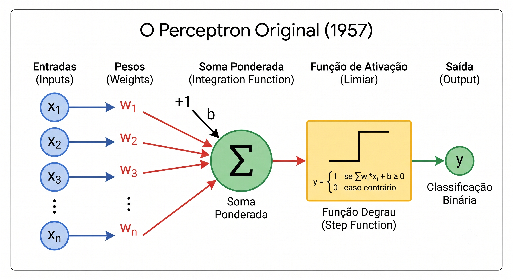
Guarde esse desenho. Ele é literalmente a Aula 1 do nosso curso: uma soma de entradas, cada uma com o seu peso. O que mudou de 1958 para cá não foi a ideia, foi a escala.
O perceptron plantou a semente das redes neurais. E plantou algo maior: a suspeita de que a inteligência de uma máquina talvez não precisasse vir de regras escritas à mão.
Nos anos 1960 a área viveu uma fase de otimismo. Sistemas simbólicos resolviam teoremas. O programa ELIZA simulava uma conversa e impressionava as pessoas.

ELIZA ensinou uma lição que vale exatamente igual hoje: uma conversa simples já causa a impressão de compreensão. Parecia inteligência. Era manipulação de regras.
O problema apareceu quando tentaram sair do laboratório. A IA simbólica funciona escrevendo regras do tipo "se acontecer X, faça Y". Isso vai bem em domínios pequenos e controlados. E fracassa no bom senso, na ambiguidade da linguagem e na bagunça da vida real.
Escrever à mão todas as regras do mundo é impossível. Não é difícil: é impossível.
Nota
A IA simbólica não morreu
Ela virou ferramenta especializada. A biblioteca SymPy faz matemática simbólica e é excelente naquilo. E existe uma linha de pesquisa ativa em arquiteturas neuro-simbólicas, que tentam juntar as duas abordagens.
Na década de 1970 veio o primeiro recuo, e o nome que ficou é bom demais para não usar: o primeiro inverno da IA. O entusiasmo esfriou, as promessas pareceram exageradas, o dinheiro sumiu. O relatório Lighthill, de 1973, criticou os resultados da área no Reino Unido e ajudou a fechar a torneira.
A pesquisa não parou. O robô Shakey e os primeiros trabalhos em aprendizado por reforço mantiveram viva a ideia de máquinas que agem e aprendem.
Nos anos 1980 veio a recuperação, com os sistemas especialistas. A mudança de estratégia foi esperta: em vez de imitar toda a inteligência humana, resolver uma tarefa só. Diagnosticar uma doença. Apoiar uma decisão de crédito. O método era reunir numa base o conhecimento de especialistas humanos, e em muitos casos funcionou.
No mesmo período, a retropropagação deu às redes neurais um jeito prático de ajustar pesos a partir dos erros. É o gradiente descendente da nossa Aula 1.
E veio o segundo obstáculo. Os sistemas especialistas dependiam de conhecimento humano inserido a mão: caro, lento e difícil de manter. Sem dados abundantes e sem infraestrutura, envelheciam depressa. Resultado: segundo inverno.
| Ciclo | Quando | O que empolgou | O que travou |
|---|---|---|---|
| Otimismo simbólico | 1956 a 1973 | teoremas, ELIZA | regras não cobrem o mundo real |
| Primeiro inverno | 1973 a 1980 | corte de financiamento | |
| Sistemas especialistas | 1980 a 1987 | diagnóstico, retropropagação | conhecimento a mão é caro |
| Segundo inverno | 1987 a 1993 | falta de dados e de máquina | |
| Aprendizado de máquina | 1990 em diante | a Web gerando dados | (a virada que ficou) |
Nos anos 1990 aconteceu a mudança que sustenta este curso inteiro, e ela foi silenciosa. A Web começou a produzir dados em volume nunca visto, e a expressão "inteligência artificial" perdeu espaço para uma mais modesta: aprendizado de máquina.
A troca de nome escondia uma troca de método:
| Abordagem | Quem escreve a regra |
|---|---|
| Programação tradicional | uma pessoa escreve as regras, e o programa segue |
| Aprendizado de máquina | você dá exemplos, e o programa acha a regra sozinho |
Pense em filtrar spam. Escrever à mão todas as regras que separam spam de e-mail legítimo é aquele problema impossível de novo. Mas mostre ao programa alguns milhares de exemplos marcados, e ele encontra sozinho as combinações de palavras, formatos e comportamentos que denunciam spam.
É esse o movimento. E é exatamente o que você vai fazer na Aula 1, com aluguéis em vez de spam.
Nos anos 2000 a internet passou a gerar um volume gigantesco de dados. Ao mesmo tempo, as GPUs, criadas para jogos, se revelaram perfeitas para treinar redes grandes.
O avanço da IA não veio de uma descoberta milagrosa. Veio de três coisas chegando juntas:
| Ingrediente | O que trouxe |
|---|---|
| Algoritmos | redes profundas melhor compreendidas |
| Dados | a internet inteira, gerada de graça pelos usuários |
| Máquina | GPUs, capazes de milhares de contas em paralelo |
Tire qualquer um dos três e nada acontece. Foi preciso os três.
Na década de 2010 o aprendizado profundo virou protagonista. Visão computacional, fala e linguagem deram saltos. Assistentes virtuais apareceram no bolso de todo mundo. A IA saiu do laboratório e entrou no produto.
O avanço trouxe problemas novos, e vale nomear os quatro que mais aparecem:
| Problema | O que acontece |
|---|---|
| Viés herdado | o modelo aprende o preconceito que estava nos dados |
| Erro desigual | reconhecimento facial que erra mais em uns grupos que em outros |
| Alucinação | resposta errada com aparência de resposta certa |
| Deepfake | áudio e vídeo falsos, difíceis de distinguir do real |
E uma lição que a história repete: vencer um teste específico não é entender o mundo. Modelos que batem recordes em benchmarks ainda tropeçam em dirigir numa rua caótica.
Desde 2020 estamos na era generativa. Modelos escrevem texto, imagem, código e áudio com fluência surpreendente, e a IA deixou de ser uma peça escondida dentro de sistemas corporativos para virar um assistente com quem você conversa. O alcance cresceu, e os debates sobre desinformação e direito autoral cresceram junto.
Olhe a tabela dos ciclos de novo. Entusiasmo, decepção, método novo, recursos novos, nova onda. Isso não é fracasso: é uma área aprendendo com os próprios limites.
Daí a lição para quem está começando:
Inteligência artificial não é mágica. É um campo construído com hipóteses, experimentos, erros e revisões, por pessoas, com dados de pessoas, e limitado pelas escolhas dessas pessoas.
Entender a história evita os dois extremos que mais atrapalham: o encantamento ingênuo, que acha que a máquina pensa, e o ceticismo apressado, que acha que não mudou nada.
A pergunta de Turing continua aberta, e hoje ela tem uma versão mais útil: que tipo de inteligência queremos construir, e para servir a que tipo de sociedade?
| Conceito | O que significa |
|---|---|
| Teste de Turing | trocar "a máquina pensa?" por "você percebe que não é gente?" |
| Dartmouth (1956) | a conferência que batizou a área |
| Perceptron | o primeiro neurônio artificial: entradas, pesos, uma resposta |
| IA simbólica | resolver por regras escritas à mão; trava fora do laboratório |
| Inverno da IA | período de descrédito e corte de financiamento (1973 e 1987) |
| Sistemas especialistas | uma tarefa só, com conhecimento humano numa base de regras |
| Retropropagação | o jeito de ajustar pesos a partir do erro |
| Aprendizado de máquina | dar exemplos em vez de escrever as regras |
| Os três ingredientes | algoritmos, dados e GPUs, chegando juntos |
| Era generativa | de 2020 em diante: o modelo produz texto, imagem, código e áudio |
Bentley, P. J. (2025). A história da inteligência artificial para quem tem pressa: o nascimento de uma nova era em apenas 200 páginas (A. Gordirro, Trad.). Rio de Janeiro: Editora Valentina.
Nota
O que você leva desta página
Um modelo que funciona no seu notebook não é um produto. Você vai ver o que falta entre os dois, por que o código do algoritmo é só 5% do trabalho, e por que sistemas de ML falham sem dar erro nenhum.
No aprendizado de máquina, o programa encontra padrões nos dados em vez de seguir regras que alguém escreveu.
O exemplo é o da nossa Aula 1. Você quer prever o preço de um apartamento. O caminho tradicional seria escrever centenas de regras sobre como o bairro, a área e o número de quartos afetam o preço. Boa sorte.
O caminho do ML é outro: mostre ao programa alguns milhares de vendas passadas e deixe ele achar a relação sozinho. Depois, aplique essa relação a um apartamento novo, que ninguém precificou ainda.
Software tradicional é determinístico. Mesma entrada, mesma saída, sempre. Se der errado, dá erro.
Sistema de ML é probabilístico. Ele não entrega uma verdade: entrega uma estimativa. E aqui está a consequência que assusta:
Atenção
A falha silenciosa
Um sistema de ML pode rodar sem um único erro técnico e entregar previsões completamente erradas. O código está certo. Os dados é que mudaram.
Em software comum, quando quebra, você fica sabendo. Em ML, não. É por isso que monitorar não é opcional.
| Programação tradicional | Aprendizado de máquina | |
|---|---|---|
| Quem escreve a lógica | a pessoa, em if e else |
o algoritmo, a partir de exemplos |
| O que você fornece | as regras | os dados e as respostas certas |
| O que você testa | o código | o código e os dados |
| O que você versiona | o código | o código, os dados e o modelo |
| Quando falha | dá erro | continua rodando |
A linha que mais custa a entrar na cabeça é a quarta. Em ML, o modelo é o resultado de um algoritmo mais um conjunto específico de dados. Trocar os dados dá outro modelo, mesmo sem tocar numa linha de código. Então os dados também precisam de versão.
Essa mudança é indispensável para problemas que ninguém consegue codificar a mão: reconhecer fala, detectar fraude, traduzir texto.
Engenharia de Machine Learning é aplicar prática de engenharia de software a sistemas que são probabilísticos por natureza.
| Ciência de dados | Engenharia de ML | |
|---|---|---|
| Onde o trabalho vive | notebook, exploração | código de produção |
| O que entrega | um protótipo que responde a pergunta | um sistema que atende usuários |
| O que otimiza | descoberta | confiabilidade, escala, manutenção |
As duas são necessárias, e a Aula 6 deste curso é justamente a travessia de uma para a outra.
Nota
O princípio dos 5%
O choque de quem entra na área: o código do algoritmo é cerca de 5% do esforço de um sistema industrial.
Os outros 95% são coleta e limpeza de dados, infraestrutura, automação de testes, pipelines e monitoramento.
O bom engenheiro de ML não é o que escreve o algoritmo mais complexo. É o que constrói o sistema mais confiável em volta dele.
Um programa comum você escreve uma vez, e ele executa a tarefa fixa. Um sistema de ML se parece mais com uma planta: precisa de cuidado contínuo, adaptação ao ambiente e alimentação constante com dados novos.
O ciclo não é uma linha reta que acaba na entrega. É um laço, e uma descoberta na etapa 3 costuma mandar você de volta para a etapa 2.
.png)
1. Escopo e objetivo. Traduzir um desejo de negócio em um objetivo técnico. "Aumentar o engajamento" não é objetivo de ML. Prever em que o usuário vai clicar é classificação; prever quanto tempo ele vai ficar é regressão. Escolher errado aqui custa meses.
2. Engenharia de dados. Coletar, limpar registros corrompidos e transformar tudo num formato que o algoritmo engula. Essa transformação tem nome: engenharia de características (feature engineering). É a etapa mais difícil e mais decisiva. Sem dado bom, nenhum modelo salva.
3. Desenvolvimento e avaliação. Escolher o algoritmo, treinar, e então
testar contra dados que o modelo nunca viu. É o train_test_split da nossa
Aula 2. O objetivo é garantir que ele generalize, e não que tenha
decorado o passado.
4. Implantação e monitoramento. Colocar no ar, e continuar olhando. O mundo muda, os dados mudam junto, e o desempenho cai. Quando cai o bastante, o ciclo recomeça.
Software tradicional não se degrada sozinho: se ninguém mexer no código, ele faz amanhã o que fazia ontem.
Modelo de ML se degrada. Ele costuma estar no melhor momento logo depois do treino, e piora conforme o mundo se afasta dos dados com que aprendeu. Há dois jeitos de isso acontecer, e vale saber diferenciar:
| Nome | O que muda | Exemplo |
|---|---|---|
| Desvio de dados (data drift) | as entradas mudam de perfil | um recomendador treinado com adolescentes começa a atender idosos |
| Desvio de conceito (concept drift) | a relação entre entrada e resposta muda | os padrões de consumo numa pandemia |
Nos dois casos o código continua rodando sem reclamar. Só as previsões ficam erradas.
Numa competição ou num artigo, o objetivo é um só: acertar mais que os outros, num conjunto de dados parado.
Em produção você equilibra objetivos que brigam entre si:
| Requisito | A pergunta que ele faz |
|---|---|
| Precisão | o modelo acerta? |
| Latência | ele responde a tempo? |
| Throughput | ele aguenta o volume? |
| Custo | a conta da infraestrutura fecha? |
| Segurança | os dados dos usuários estão protegidos? |
Um modelo mais preciso e lento demais é inútil. Um modelo mais preciso e caro demais também. Essa negociação é o trabalho.
MLOps é a prática de unificar o desenvolvimento de sistemas de ML com a operação deles. O objetivo é padronizar e automatizar o ciclo inteiro.
A filosofia cabe numa frase dura: se um processo depende de alguém lembrar de fazer, ele já está quebrado. Intervenção manual é lenta e erra.
| Pilar | O que automatiza |
|---|---|
| Integração contínua (CI) | testa o código e a validade dos dados |
| Entrega contínua (CD) | publica sozinho os modelos aprovados |
| Treinamento contínuo (CT) | retreina quando chegam dados novos ou o desempenho cai |
O terceiro é o que não existe em software comum, e é o que fecha o laço do ciclo de vida.
Nota
A regra dos 25%
O erro mais comum é achar que modelagem matemática é a competência que importa. Não é. O resultado depende de quatro coisas, em partes iguais:
| Domínio | O que ele garante |
|---|---|
| Engenharia de software | código robusto e testável |
| Engenharia de dados | coleta, limpeza e validação |
| Modelagem | a escolha e o treino do algoritmo |
| Entendimento do negócio | que o problema resolvido seja o problema certo |
O quarto é o mais ignorado e o mais caro quando falta. Modelo perfeito para a pergunta errada não vale nada.
| Conceito | O que significa |
|---|---|
| Determinístico | mesma entrada, mesma saída, sempre |
| Probabilístico | a saída é uma estimativa, não uma verdade |
| Falha silenciosa | o código roda sem erro e a previsão está errada |
| Modelo | o resultado de um algoritmo mais um conjunto de dados |
| Engenharia de características | transformar dado bruto no formato que o algoritmo usa |
| Generalizar | acertar em dados novos, não só nos do treino |
| Desvio de dados | as entradas mudam de perfil |
| Desvio de conceito | a relação entre entrada e resposta muda |
| MLOps | automatizar o ciclo de vida do modelo, do dado ao monitoramento |
| Princípio dos 5% | o algoritmo é 5% do trabalho; o resto é sistema |
| Regra dos 25% | software, dados, modelagem e negócio, em partes iguais |
Babushkin, V., & Kravchenko, A. (2025). Machine learning system design: With end-to-end examples. Manning Publications Co.
Burkov, A. (2020). Machine learning engineering. True Positive Inc.
Crowe, R., Hapke, H., Caveness, E., & Zhu, D. (2025). Machine learning production systems: Engineering machine learning models and pipelines. O'Reilly Media.
Gift, N., & Deza, A. (2021). Practical MLOps: Operationalizing machine learning models. O'Reilly Media.
Huyen, C. (2022). Designing machine learning systems: An iterative process for production-ready applications. O'Reilly Media.
Kleppmann, M., & Riccomini, C. (2026). Designing data-intensive applications: The big ideas behind reliable, scalable, and maintainable systems (2nd ed.). O'Reilly Media.
Nota
O que você leva desta página
Engenharia de ML é treinar o seu modelo. Engenharia de IA é adaptar um modelo que já existe. Você vai ver o que muda no trabalho, as três formas de adaptar um modelo de fundação, e por que a parte difícil não é fazer funcionar.
Até pouco tempo, usar IA de ponta exigia laboratório e infraestrutura cara. Hoje, uma chave de API e vinte linhas de Python colocam um modelo estado da arte dentro do seu produto.
Engenharia de IA é construir aplicações em cima de modelos de fundação já treinados. E o trabalho não é chamar a API. É definir o problema, dar contexto ao modelo, avaliar as respostas e operar o sistema com segurança.
| Engenharia de ML | Engenharia de IA | |
|---|---|---|
| O modelo | a equipe treina e mantém o seu | alguém já treinou |
| O trabalho central | dados e treino | contexto, avaliação e operação |
| Onde está o risco | o modelo não aprende | o modelo responde bem, e errado |
Atenção
A regra dos 80%
Sair do zero a 80% e ter uma demonstração que funciona é fácil. Ir de 80% a 95% e ter um produto que aguenta produção é o trabalho inteiro.
Toda a diferença mora em avaliação, dados confiáveis, controle de acesso e monitoramento. Nenhuma dessas coisas aparece na demonstração.
Modelos de linguagem não leem texto como você. Eles trabalham com tokens, que são pedaços de texto.
Um token pode ser uma palavra inteira, um pedaço dela ou um caractere só. A
divisão muda de modelo para modelo e de idioma para idioma. Em inglês,
can't costuma virar can e 't.
Por que não usar palavras inteiras? Por três motivos:
| Motivo | O que ganha |
|---|---|
| Cobertura | o modelo monta palavras que nunca viu, com pedaços que conhece |
| Eficiência | o vocabulário fica muito menor que uma lista de palavras |
| Flexibilidade | texto, código e símbolos usam a mesma representação |
Token não é detalhe técnico: é a unidade de custo e de limite. Você paga por token, e a janela de contexto se mede em tokens. E a janela precisa caber tudo: as instruções, os documentos recuperados, o histórico da conversa e a resposta que está sendo gerada.
Uma regra aproximada para o inglês: 100 tokens dão umas 75 palavras. Em português rende menos.
Nota
Português custa mais caro
Os grandes modelos treinaram os tokenizadores deles quase todo em inglês, então o inglês comprime melhor. A mesma frase em português vira mais tokens: mais custo e menos espaço na janela.
Vale testar em gpt-tokenizer.dev: escreva uma frase em português e a tradução dela, e compare a contagem.
Você vai construir um tokenizador desses do zero na Aula 9, e vai ver a compressão acontecer com o texto do Machado de Assis.
Modelos generativos são sistemas probabilísticos. Eles estimam a probabilidade do próximo token, dado tudo que veio antes.
Em "Why does the chicken cross the ___", o modelo dá probabilidade alta a
road. Escolhe um token, cola no fim da frase, e repete. Cada palavra que
ele escreve vira entrada da próxima.
Por isso o nome: modelo autorregressivo. A família GPT inteira é assim.
E aqui está a consequência que gera quase todo mal-entendido sobre IA:
O modelo não consulta uma fonte de verdade. Ele gera a continuação mais provável. Uma resposta fluida pode estar completamente errada.
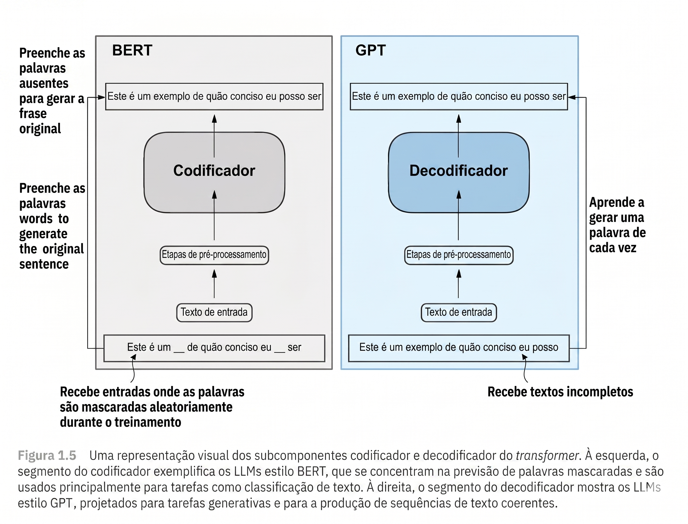
Existe outra família, os modelos mascarados, como o BERT. Eles preenchem lacunas no meio do texto, e são bons em classificação e análise de sentimento. Para gerar texto, código e diálogo, os autorregressivos dominaram.
Durante anos, rotular dados a mão foi o gargalo do ML. Para ensinar um modelo a distinguir gato de cachorro, alguém tinha que marcar cada foto.
A auto-supervisão resolve isso de um jeito quase óbvio depois que você vê: o próprio dado já contém a resposta. Em texto, o que veio antes é o contexto, e o próximo token é o alvo.
Veja a frase "I love street food" virando seis exemplos de treino:
| Entrada (contexto) | Alvo (próximo token) |
|---|---|
<BOS> |
I |
| I | love |
| I love | street |
| I love street | food |
| I love street food | . |
| I love street food . | <EOS> |
Nenhuma pessoa rotulou nada. <BOS> e <EOS> são tokens especiais que
marcam começo e fim de sequência.
Agora multiplique isso por toda a internet. É daí que saem os modelos de fundação, e é exatamente esse par entrada/alvo que você vai montar na Aula 9.
Um modelo de fundação aprende padrões amplos com um volume enorme de dados, e depois se adapta a muitas tarefas sem precisar treinar de novo do zero.
Muitos são multimodais: processam combinações de texto, imagem, áudio e vídeo. Modelos como o CLIP aprendem a relação entre uma imagem e a descrição dela, e esses pares substituem boa parte da rotulagem manual.
O modelo entrega capacidade geral. Quem transforma capacidade em valor é a aplicação.
A regra é começar pela mais simples que resolva. Cada degrau custa mais dinheiro, mais prazo e mais risco.
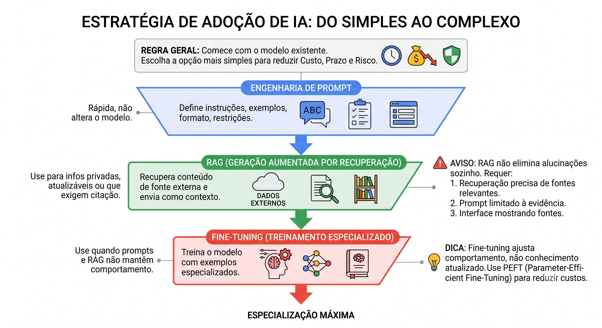
| Técnica | O que faz | Quando usar |
|---|---|---|
| Engenharia de prompt | define instruções, exemplos, formato e limites | sempre; é o primeiro degrau |
| RAG | busca conteúdo numa fonte externa e manda junto no contexto | informação privada, que muda, ou que precisa de citação |
| Ajuste fino | treina o modelo com exemplos especializados | quando prompt e RAG não seguram o comportamento |
Duas confusões que custam caro:
RAG não cura alucinação sozinho. Ele só ajuda se a busca trouxer a fonte certa, se o prompt mandar responder apenas com base nas evidências, e se a interface mostrar de onde veio a resposta. Sem os três, você trocou uma alucinação por uma alucinação com aparência de fonte.
Ajuste fino não é base de conhecimento. Ele muda comportamento, tom e formato. Ele não mantém a informação atualizada. Para conhecimento que muda, use RAG. Técnicas de PEFT (parameter-efficient fine-tuning) baixam bastante o custo do treino, mas não mudam essa divisão de tarefas.
Você constrói um RAG do zero na Aula 14.
O processo é iterativo, e difere do ciclo de ML tradicional por gastar quase nada em treino e quase tudo em adaptação e avaliação.
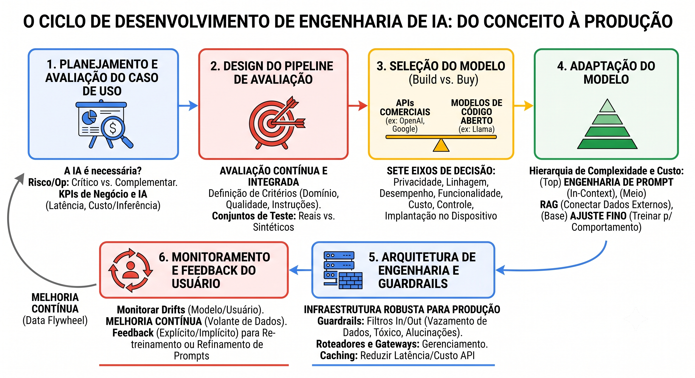
1. Planejar e avaliar o caso de uso. Antes de qualquer código: a IA é a ferramenta certa aqui? Ela é crítica ao produto ou enfeite? E como vamos medir sucesso, em métrica de negócio e em latência e custo por resposta?
2. Desenhar o pipeline de avaliação. Esta é a etapa mais difícil, e a mais pulada. Como os modelos de fundação respondem de forma aberta, você precisa de critérios escritos e de um conjunto de casos de teste, real ou sintético, para saber se uma mudança melhorou ou piorou.
3. Escolher o modelo. API comercial ou modelo aberto hospedado por você? A decisão pesa sete eixos: privacidade dos dados, linhagem do modelo, desempenho, funcionalidades, custo, controle e possibilidade de rodar no dispositivo.
4. Adaptar. Os três degraus da seção anterior, na ordem.
5. Arquitetura e guardrails. O que separa protótipo de produto:
| Peça | Para que serve |
|---|---|
| Guardrails | filtram entrada e saída: dado sensível, conteúdo tóxico, alucinação grave |
| Roteadores e gateways | mandam cada pedido ao modelo certo e controlam custo |
| Cache | guardam respostas repetidas, e cortam latência e conta |
6. Monitorar e coletar feedback. Depois no ar, acompanhe os desvios de comportamento do modelo e do usuário. O feedback, explícito ou implícito, alimenta o que se chama de volante de dados: o uso melhora o sistema, que atrai mais uso.
Monte um conjunto de casos que represente a realidade: os comuns, os difíceis e os maliciosos. Em cada resposta, olhe correção, completude, formato e presença de fonte.
E teste de propósito as três falhas previsíveis:
| Falha | O que acontece |
|---|---|
| Alucinação | a resposta inventa um fato ou uma fonte |
| Instrução maliciosa | um documento tenta mudar as regras da sua aplicação |
| Vazamento | dado pessoal ou interno aparece no prompt ou na resposta |
A segunda merece atenção. Se a sua aplicação lê documentos que outras pessoas escreveram, alguém pode esconder instruções lá dentro. O modelo não distingue por conta própria o que é conteúdo e o que é ordem.
Defina limites claros, filtre dado sensível, controle o acesso às fontes e mantenha revisão humana onde a decisão pesa.
IA generativa ajuda mais em tarefas repetitivas, com bastante contexto disponível e resultado que alguém consegue revisar.
| Caso | O que faz |
|---|---|
| Assistente interno | responde com base em políticas, manuais e documentação da casa |
| Extração de documentos | transforma PDF e imagem em dado estruturado |
| Apoio ao desenvolvimento | explica, testa, refatora e documenta código |
O objetivo não é automatizar tudo. É montar fluxos verificáveis, onde pessoa e sistema entregam mais juntos do que separados.
| Conceito | O que significa |
|---|---|
| Engenharia de IA | construir aplicações com modelos que outra pessoa treinou |
| Token | o pedaço de texto que o modelo processa, e a unidade de custo |
| Janela de contexto | quantos tokens cabem: instruções, documentos, histórico e resposta |
| Autorregressivo | prevê o próximo token e realimenta o que gerou |
| Mascarado | preenche lacunas no meio do texto (BERT) |
| Auto-supervisão | o próprio dado fornece o alvo, sem rotulagem humana |
| Modelo de fundação | treinado em escala, adaptável a muitas tarefas |
| Engenharia de prompt | instruções, exemplos e formato; o degrau mais barato |
| RAG | buscar contexto numa fonte externa e mandar junto |
| Ajuste fino | treinar com exemplos para mudar comportamento, tom ou formato |
| Guardrail | filtro de entrada e saída, contra vazamento e conteúdo tóxico |
| Volante de dados | o uso gera feedback, que melhora o sistema, que atrai mais uso |
Huyen, C. (2025). AI Engineering: Building Applications with Foundation Models. O'Reilly Media.
Este módulo ensina a base de quase tudo em IA: encontrar uma regra matemática que explica os dados que você tem, e usar essa regra para prever o que ainda não viu. Você vai aprender a prever um número (quanto vai custar uma corrida) e depois uma categoria (o cliente vai cancelar ou não).
| Aula | Conteúdo | Status |
|---|---|---|
| Aula 1 — Regressão Linear Simples | Reta de previsão, gradiente descendente, métricas de regressão | Disponível |
| Aula 2 — Regressão Múltipla | Várias variáveis ao mesmo tempo, preditores categóricos, interpretação dos coeficientes | Disponível |
| Aula 3 — Regressão Logística | Função sigmoide, interpretação dos coeficientes, métricas de classificação | Disponível |
Nota
O que você leva desta aula
Você vai aprender a desenhar uma reta que prevê um preço a partir de uma distância, a medir o quanto essa reta erra, e a usar o gradiente descendente, a técnica que todo modelo de IA usa para aprender, para melhorar essa reta sozinho, sem chute.
Você chama um carro por aplicativo. Antes de aceitar a corrida, o app já mostra o preço. Como ele sabe isso antes mesmo de você sair de casa?
Ele não sabe o futuro. Ele olha para o passado: milhares de corridas anteriores, cada uma com sua distância e seu preço final. Nesses dados existe um padrão. Corridas mais longas custam mais. O aplicativo usa esse padrão para prever o preço da sua corrida antes de ela acontecer.
Regressão linear é a ferramenta mais simples para encontrar esse padrão. Ela desenha uma reta no meio dos seus dados e usa essa reta para prever. Esta aula usa exatamente esse exemplo, o preço de uma corrida, para ensinar a matemática por trás de qualquer modelo de previsão.
Veja como fica quando você coloca a distância e o preço de 200 corridas num gráfico:
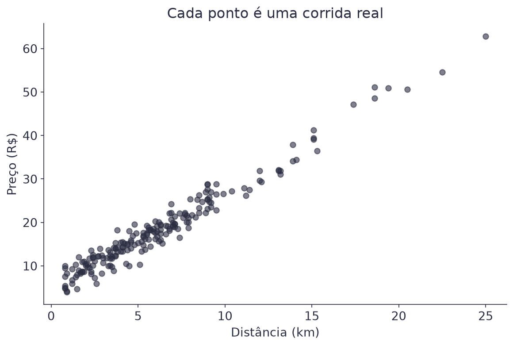
Os pontos não formam uma reta perfeita. O trânsito, o horário e outros fatores empurram cada corrida um pouco para cima ou para baixo. Mas dá para ver uma tendência clara: quanto maior a distância, maior o preço. É essa tendência que a regressão linear captura.
Uma reta de regressão é uma regra simples: você entra com a distância, ela devolve o preço previsto.
O preço previsto é a taxa fixa (o valor cobrado mesmo numa corrida de 0 km) mais o preço por quilômetro, multiplicado pela distância.
| Símbolo | Significado |
|---|---|
preço |
o preço previsto pela reta, em reais |
distância |
a distância da corrida, em km |
w₀ |
a taxa fixa: o preço previsto para uma corrida de 0 km |
w₁ |
o preço por km: quanto o preço sobe para cada km a mais |
Exemplo: se w₀ = 5 e w₁ = 2,20, uma corrida de 8 km custa 5 + 2,20 × 8 = 22,60 reais.
Repare que w₁ é o único número que decide o quanto o preço reage à
distância. Se w₁ dobrasse, cada km rodado custaria o dobro. A reta
ficaria bem mais inclinada, e corridas longas ficariam
desproporcionalmente mais caras.
w₀ e w₁ (lê-se "peso zero" e "peso um") se chamam coeficientes ou
pesos do modelo. Encontrar a melhor reta é, na prática, encontrar os
melhores valores para esses dois números. O nome "peso" (do inglês
weight) é o mesmo usado em modelos bem maiores: cada conexão de uma
rede neural tem um peso, e a ideia continua sendo esta.
Nenhuma reta acerta todas as 200 corridas. Os pontos não estão exatamente alinhados. A diferença entre o preço real de uma corrida e o preço que a reta previu para ela se chama resíduo (também chamado de erro).
| Símbolo | Significado |
|---|---|
preço real |
o preço que a corrida realmente teve |
preço previsto |
o preço que a reta calculou para essa mesma corrida |
Exemplo: uma corrida de 8 km custou R$ 25,00, e a reta previu R$ 22,60. O resíduo dessa corrida é 25,00 − 22,60 = R$ 2,40.
A mesma conta, escrita com símbolos:
| Símbolo | Significado |
|---|---|
i |
o número da corrida: 1 para a primeira, 2 para a segunda... |
εᵢ |
o resíduo da corrida i (lê-se "épsilon i") |
yᵢ |
o preço real da corrida i |
ŷᵢ |
o preço previsto para a corrida i (lê-se "y chapéu") |
No exemplo acima, y₁ = 25,00, ŷ₁ = 22,60 e ε₁ = 2,40. Esses três
símbolos voltam em todas as fórmulas de erro desta página.
Um resíduo positivo significa que a reta previu um preço menor que o real. Um resíduo negativo significa que ela previu um preço maior. Visualmente, o resíduo é a distância vertical entre o ponto e a reta:
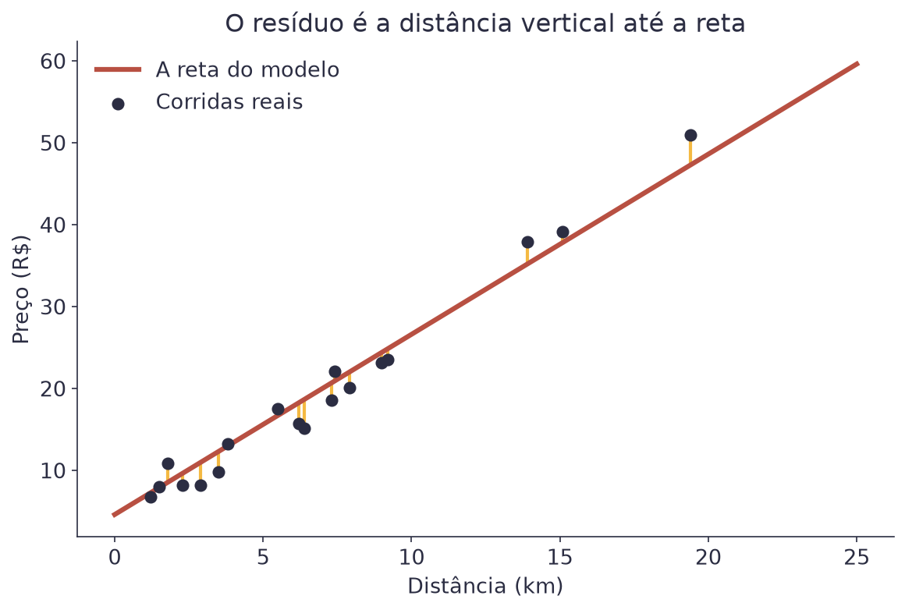
Uma reta boa não é a que acerta uma corrida perfeitamente. É a que erra pouco, na média, em todas as corridas ao mesmo tempo.
Para comparar retas diferentes, você precisa de um único número que resuma o quanto uma reta erra. O mais usado é o erro quadrático médio (mean squared error, ou MSE): a média dos resíduos, cada um elevado ao quadrado.
| Símbolo | Significado |
|---|---|
n |
o número de corridas |
yᵢ |
o preço real da corrida i |
ŷᵢ |
o preço que a reta previu para a corrida i (lê-se "y chapéu") |
Por que elevar ao quadrado, e não só somar os erros? Por dois motivos. Primeiro, um resíduo pode ser negativo (a reta previu preço maior que o real) ou positivo (previu menor). Se você só somasse, um erro positivo cancelaria um negativo, e a soma poderia dar zero mesmo com a reta errando bastante. Elevar ao quadrado remove esse problema, porque todo número ao quadrado é positivo. Segundo, o quadrado penaliza mais os erros grandes: errar R$ 2 em uma corrida conta 4; errar R$ 10 conta 100. Vinte e cinco vezes mais, não só cinco.
Exemplo com 3 corridas, cujos resíduos foram R$ 1, R$ -2 e R$ 3: elevando cada um ao quadrado, você tem 1, 4 e 9. A média é (1+4+9)/3 = 4,67. O MSE dessas três corridas é 4,67, em reais ao quadrado. Uma unidade estranha, que é justamente o motivo de existirem as outras métricas desta página.
Quanto menor o MSE, melhor a reta. Veja três retas candidatas para os mesmos dados, cada uma com seu MSE:
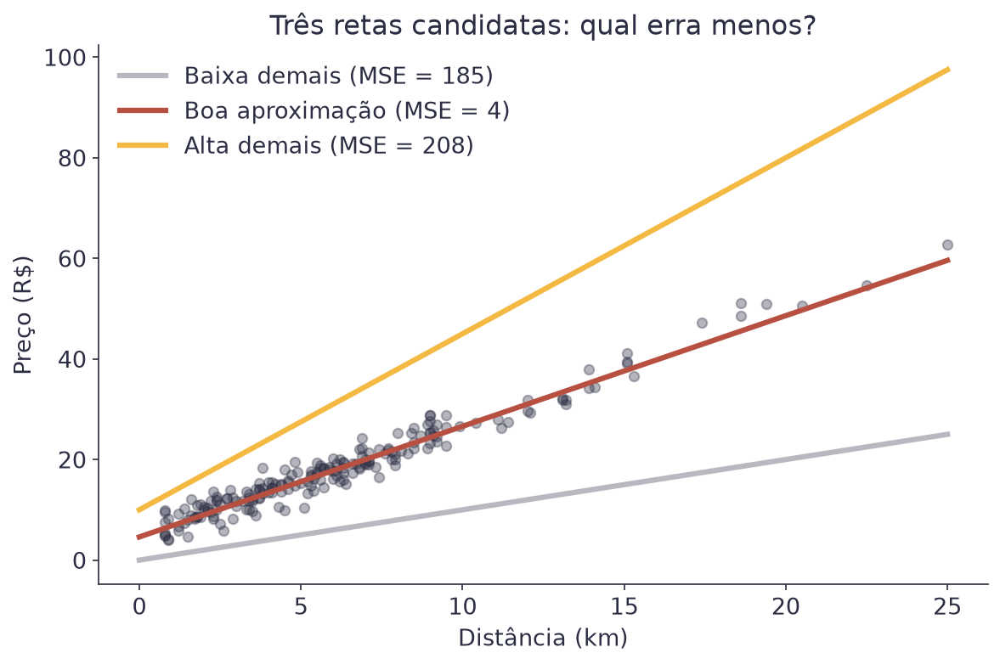
Para uma reta simples como esta, existe uma fórmula que calcula os
melhores w₀ e w₁ direto, sem precisar tentar valor por valor. Ela se
chama mínimos quadrados (ordinary least squares).
| Símbolo | Significado |
|---|---|
xᵢ, yᵢ |
a distância e o preço da corrida i |
x̄ |
a média de todas as distâncias |
ȳ |
a média de todos os preços |
Este guia não deduz de onde essa fórmula vem. O importante aqui é saber que ela existe e o que ela calcula, não como alguém a inventou.
Exemplo com 3 corridas de brinquedo, com distâncias 1, 2 e 3 km e preços
R$ 6, R$ 9 e R$ 15: a distância média é x̄ = 2 e o preço médio é
ȳ = 10. Aplicando a fórmula, w₁ = 4,5 e w₀ = 1. A melhor reta para
este mini-exemplo é preço = 1 + 4,5 × distância.
Dica
Repare que os resíduos dessa reta (0,50, -1,00 e 0,50) somam zero. Isso não é coincidência: a reta de mínimos quadrados sempre produz resíduos que somam exatamente zero. É uma boa forma de conferir uma conta feita à mão.
Se essa fórmula resolve o problema direto, por que aprender outro jeito de chegar à mesma resposta? Porque ela é a exceção, não a regra. A próxima seção mostra o método que funciona quando ela não existe, que é quase sempre.
Imagine que você está numa serra, de noite, com neblina fechada. Você não enxerga o vale lá embaixo, mas consegue sentir com os pés se o chão desce para a esquerda ou para a direita. A estratégia mais simples para chegar ao fundo do vale é: sinta a inclinação do chão onde você está, dê um passo na direção que desce, e repita.
O gradiente descendente faz exatamente isso, mas em vez de um vale de
terra, o "terreno" é o MSE. Em vez de posição geográfica, você está
"andando" sobre os valores possíveis de w₀ e w₁. A inclinação do
terreno em cada ponto tem um nome técnico: gradiente. Ele aponta para
onde o erro cresce mais rápido, e por isso você anda na direção
contrária a ele.
A fórmula dos mínimos quadrados dá a resposta exata de primeira, sem passo nenhum. Parece sempre melhor que descer a serra tateando no escuro. E é, para uma reta com dois pesos.
O problema é que ela não escala. Aquela fórmula existe porque alguém conseguiu resolver a conta no papel, e isso só dá certo em modelos pequenos. Uma rede neural tem milhões de pesos amarrados uns nos outros, e ninguém nunca resolveu essa conta no papel. Para ela não existe fórmula fechada, e provavelmente nunca vai existir.
O gradiente descendente não precisa resolver conta nenhuma. Ele precisa saber uma coisa só: de onde estou, para que lado o erro diminui? Essa pergunta tem resposta em qualquer modelo, de qualquer tamanho.
É por isso que esta seção é a mais importante da aula. O mesmo método que ajusta a reta das corridas treina a rede que reconhece imagens na Aula 8 e o modelo de linguagem que você constrói na Aula 11. Muda o tamanho do modelo. A ideia é esta.
Essa serra não é só uma figura de linguagem. Para enxergá-la, congele
w₀ no valor que os mínimos quadrados dão (4,63) e mexa só em w₁. Cada
valor de w₁ dá uma reta diferente, e cada reta tem o seu MSE. Marque
w₁ no eixo horizontal e o MSE no eixo vertical, e o terreno aparece:
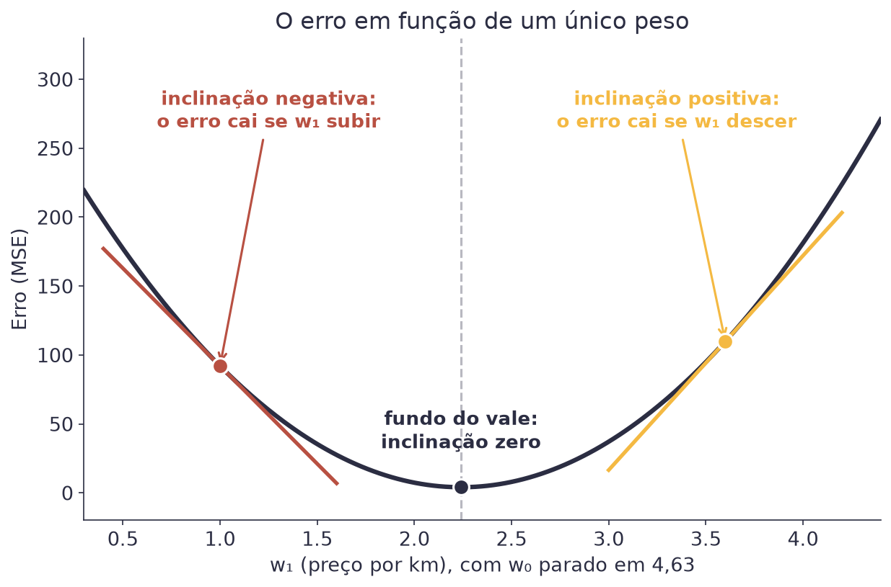
Repare em três coisas. A curva tem um fundo, e é ali que mora o melhor
w₁. À esquerda do fundo ela desce, à direita ela sobe. E a inclinação
do chão em cada ponto já diz para que lado andar: onde a curva desce,
aumentar w₁ diminui o erro.
Você está parado num ponto da curva e precisa decidir uma coisa só: para que lado andar. A derivada responde exatamente isso. Ela olha o peso onde você está e diz o que acontece com o erro se você aumentar esse peso um tiquinho.
Pense numa placa de estrada avisando "10% de inclinação": a cada 100 metros andados para a frente, a estrada sobe 10 metros. Aqui, "andar para a frente" é aumentar o peso, e "subir" é o erro aumentar.
A conta é a mesma da placa. Ande um tiquinho para a frente e veja o quanto o erro subiu.
| Símbolo | Significado |
|---|---|
h |
o tiquinho andado: um avanço pequeno no valor de w₁ |
MSE(w₁) |
o erro com o w₁ de agora |
MSE(w₁ + h) |
o erro depois de andar esse tiquinho |
≈ |
"quase igual": a conta fica exata quando h encolhe até quase zero |
Exemplo, partindo de w₁ = 3,20 com um avanço de h = 0,05: o erro sai
de 56,75 para 62,38. A subida foi 5,63, e 5,63 ÷ 0,05 = 112,7. A
inclinação naquele ponto é 112,7. Ela é positiva, então aumentar w₁
aumenta o erro, e o caminho para baixo é o contrário.
Como ler o número que sai. Ele carrega duas informações ao mesmo tempo, e o modelo usa as duas:
| O que a derivada diz | O que o modelo faz com isso |
|---|---|
| Sinal positivo: aumentar o peso aumenta o erro | anda para o outro lado, diminuindo o peso |
| Sinal negativo: aumentar o peso diminui o erro | anda para a frente, aumentando o peso |
| Número grande: ladeira íngreme, o erro muda rápido ali | dá um passo maior |
| Número perto de zero: chão plano, o erro quase não muda | dá um passo curto: o fundo está perto |
É por isso que a derivada é a peça que faltava. Sem ela, você saberia o erro do lugar onde está e mais nada, e teria que testar valores no escuro, um por um. Com ela, você sabe para onde ir antes de dar o passo.
A animação mostra o que acontece quando o avanço encolhe. A reta amarela liga dois pontos da curva, e tem nome: secante. Quanto menor o avanço, mais ela cola na reta tracejada, aquela que toca a curva em um ponto só: a tangente. A derivada é a inclinação dessa tangente.
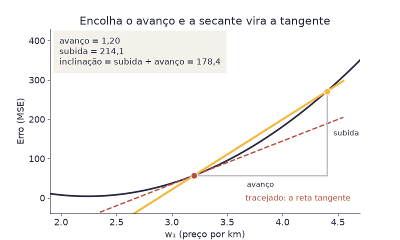
Ninguém precisa calcular derivada à mão neste curso. Quem faz essa conta é o computador. O que você precisa levar é o significado do número: para que lado o erro cresce, e o quão rápido.
A curva de antes tinha um peso só, porque w₀ ficou congelado. No treino
de verdade os dois pesos se mexem, e aí não existe uma inclinação só.
Existe uma para cada peso: o quanto o erro muda se você mexer só em w₀,
e o quanto ele muda se você mexer só em w₁. Essa lista de inclinações é
o gradiente.
| Símbolo | Significado |
|---|---|
∇ |
nabla: o símbolo do gradiente, a lista de todas as inclinações |
∂MSE/∂w₀ |
a inclinação do erro quando só w₀ se mexe |
∂MSE/∂w₁ |
a inclinação do erro quando só w₁ se mexe |
O símbolo ∂ é a derivada quando existe mais de um peso. Ele quer dizer:
mexa só neste peso aqui e segure os outros parados. A conta continua sendo
a mesma de antes, subida dividida por avanço, feita uma vez por peso.
Volte para a serra. Andar só para o norte tem uma inclinação, andar só para o leste tem outra, e o gradiente é esse par. Ele aponta para onde o erro cresce mais rápido, e é por isso que o modelo anda no sentido contrário.
Exemplo com duas corridas de brinquedo (2 km por R$ 9 e 5 km por R$ 15) e
o chute w₀ = 0, w₁ = 2. As previsões são R$ 4 e R$ 10, então os dois
resíduos valem R$ 5. O gradiente nesse ponto é (−10 ; −35). Os dois
números são negativos, o que significa que subir os dois pesos reduz o
erro.
| Símbolo | Significado |
|---|---|
t |
o número do passo: t = 0 é o chute inicial |
wₜ |
o valor do peso no passo t |
wₜ₊₁ |
o valor que esse peso passa a ter no passo seguinte |
α |
a taxa de aprendizado (learning rate): o tamanho do passo |
∂MSE/∂w |
a inclinação do erro naquele ponto, para aquele peso |
O sinal de menos é o coração da fórmula. Se a inclinação é positiva, o erro cresce para a frente, então o peso anda para trás. Se é negativa, o peso anda para a frente.
O t é só um contador de passos. A fórmula é uma receita para repetir:
você calcula o peso do passo seguinte a partir do peso de agora, e usa
esse resultado como ponto de partida da próxima volta. Cada peso tem a sua
própria linha, com a sua própria inclinação.
Veja dois passos calculados à mão, com as mesmas duas corridas de
brinquedo, taxa de aprendizado α = 0,01, e o chute inicial w₀ = 0,
w₁ = 2:
| Passo | w₀ |
w₁ |
MSE |
|---|---|---|---|
t = 0 (chute inicial) |
0,00 | 2,00 | 25,00 |
t = 1 |
0,10 | 2,35 | 13,78 |
t = 2 |
0,17 | 2,59 | 8,43 |
A cada passo, o MSE cai. A reta está melhorando sozinha, sem que ninguém diga qual deveria ser o próximo chute. Rodando esse mesmo processo dezenas de vezes, ele se aproxima cada vez mais da resposta que a fórmula de mínimos quadrados dá direto.
Na curva do erro, esse processo vira uma bolinha escorregando para o fundo. Repare que os passos encolhem sozinhos: perto do fundo o chão fica plano, a inclinação diminui, e o passo diminui junto.
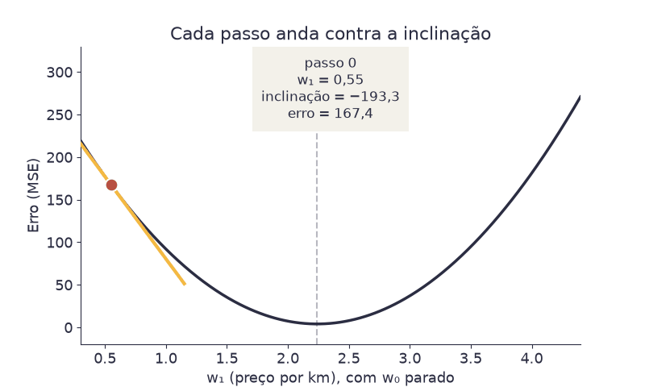
Junte as peças e o gradiente descendente inteiro cabe em cinco passos:
w₀ e w₁. Zero serve. O chute não
precisa ser bom, e quase nunca é.Quando parar? Quando o erro parar de cair de forma perceptível. Perto do fundo a inclinação chega perto de zero, os passos encolhem sozinhos, e mais uma volta quase não muda nada. Na prática você também define um número máximo de voltas, para o programa não rodar para sempre.
Repare no que o algoritmo não faz. Ele nunca testa todos os valores
possíveis de w₀ e w₁. Ele nunca precisa enxergar o terreno inteiro.
Ele olha só para o chão embaixo dos próprios pés, e essa modéstia é o que
faz o método funcionar tanto num modelo de dois pesos quanto num de
bilhões.
Congelar w₀ foi só para caber num desenho. No treino de verdade os dois
pesos mudam juntos, e o terreno deixa de ser uma curva. Com dois pesos
ele vira uma superfície, uma bacia de verdade:
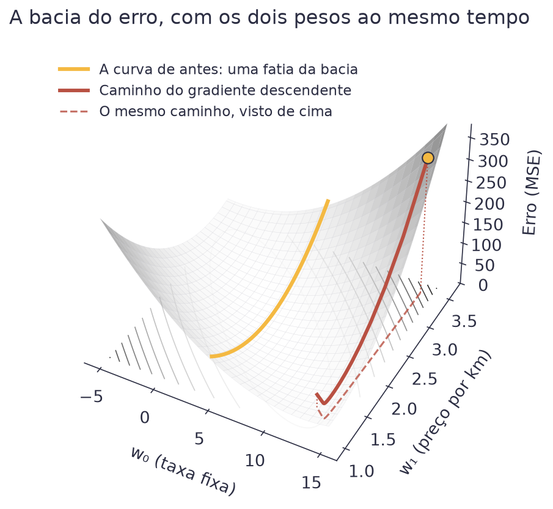
A regra de atualização não muda quando os dois pesos andam juntos. Você a aplica duas vezes por passo, uma para cada peso, cada uma com a sua inclinação.
Essa mesma bacia, vista de cima, vira um mapa. Cada tom de cinza é um valor de MSE, e a linha vermelha é o caminho que o gradiente descendente percorre, passo a passo, até chegar perto do fundo, a região mais clara, onde o erro é menor.
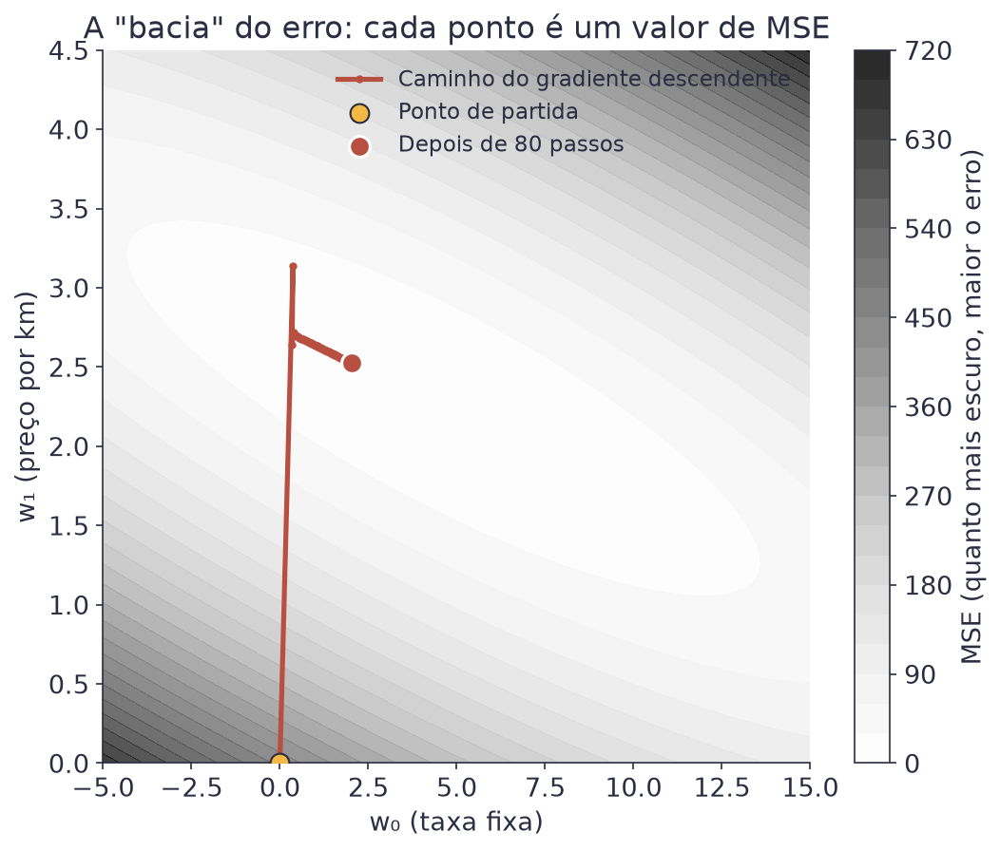
O tamanho do passo, α, decide se o gradiente descendente funciona bem,
devagar, ou nem funciona:
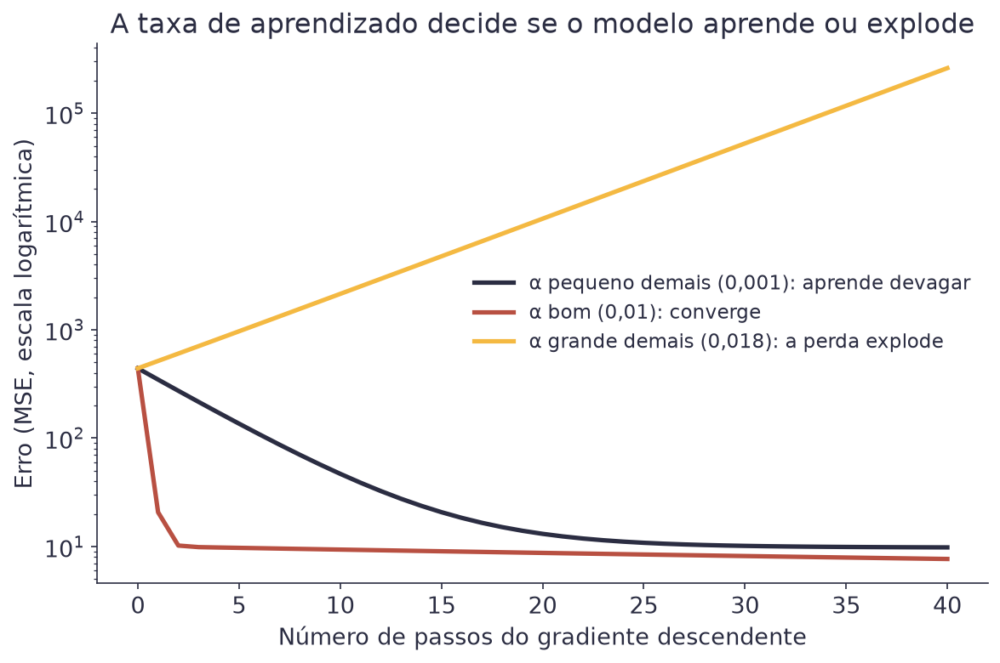
Atenção
Erro do dia
É comum, na primeira vez que se usa gradiente descendente, escolher uma
taxa de aprendizado grande demais para "o modelo aprender mais rápido",
e ver o erro, em vez de diminuir, virar um número gigante ou nan ("não
é um número", o jeito do Python de dizer que a conta explodiu). Se isso
acontecer, a correção quase sempre é a mesma: diminua a taxa de
aprendizado, muitas vezes por um fator de 10, e rode de novo.
Depois de treinar um modelo, você precisa de números que digam, em linguagem simples, o quanto ele erra. Cada métrica conta uma parte da história. Vamos calcular as quatro para o mesmo mini-exemplo de antes (as 3 corridas de brinquedo, com resíduos 0,50, -1,00 e 0,50).
O erro absoluto médio (mean absolute error) é a média do tamanho dos erros, ignorando se cada um é para cima ou para baixo.
| Símbolo | Significado |
|---|---|
| barras verticais | valor absoluto: transforma um número negativo em positivo |
n, yᵢ, ŷᵢ |
os mesmos símbolos do MSE (número de corridas, preço real, preço previsto) |
As barras verticais em torno de yᵢ - ŷᵢ deixam um número já positivo
como está, e transformam um número negativo em positivo.
No mini-exemplo: (0,50 + 1,00 + 0,50)/3 = 0,67. Em média, a reta erra R$ 0,67 por corrida, na mesma unidade do preço, fácil de explicar para qualquer pessoa.
Você já viu o MSE (a média dos erros ao quadrado). No mini-exemplo: (0,25 + 1,00 + 0,25)/3 = 0,50. O problema do MSE é a unidade: "reais ao quadrado" não significa nada no mundo real.
A raiz do erro quadrático médio (root mean squared error, RMSE) resolve isso. É só a raiz quadrada do MSE, o que devolve a métrica para a unidade original.
| Símbolo | Significado |
|---|---|
| raiz quadrada | devolve o MSE para a unidade original (reais) |
No mini-exemplo: a raiz quadrada de 0,50 é 0,71. O RMSE fica bem perto do MAE neste caso. Isso muda quando existe um erro muito fora do padrão.
Nas 200 corridas, o MAE do modelo dá R$ 1,61. Agora responda: isso é muito?
Depende da corrida. Errar R$ 1,61 numa corrida de R$ 8 é errar um quinto do preço, e o cliente percebe na hora. Errar os mesmos R$ 1,61 numa corrida de R$ 50 é errar pouco mais de 3%, e ninguém reclama. O mesmo erro em reais não vale a mesma coisa nas duas.
O erro percentual absoluto médio (mean absolute percentage error, MAPE) resolve isso com uma ideia só: antes de tirar a média, transforme o erro de cada corrida em porcentagem do preço daquela corrida.
Faça isso corrida por corrida, no mini-exemplo de três:
| Corrida | Preço real | Previsto | Resíduo | Em % do preço real |
|---|---|---|---|---|
| 1 | R$ 6,00 | R$ 5,50 | +R$ 0,50 | 0,50 ÷ 6,00 = 8,3% |
| 2 | R$ 9,00 | R$ 10,00 | −R$ 1,00 | 1,00 ÷ 9,00 = 11,1% |
| 3 | R$ 15,00 | R$ 14,50 | +R$ 0,50 | 0,50 ÷ 15,00 = 3,3% |
A última coluna joga fora o sinal: errar R$ 1 para cima ou para baixo conta igual. A média dessas três porcentagens é (8,3 + 11,1 + 3,3) ÷ 3 = 7,6%. Esse é o MAPE.
A fórmula diz isso mesmo, em símbolos:
| Símbolo | Significado |
|---|---|
yᵢ - ŷᵢ |
o resíduo da corrida i: quanto o modelo errou, em reais |
dividido por yᵢ |
o resíduo vira uma fração do preço daquela corrida |
| as barras verticais | valor absoluto: jogam fora o sinal do resíduo |
100 |
transforma a fração em porcentagem |
n |
o número de corridas |
Leia a fórmula de dentro para fora e ela vira a tabela: pegue o resíduo, divida pelo preço real, tire o sinal, some em todas as corridas, divida pelo número de corridas e multiplique por 100.
Nas 200 corridas, o MAPE do modelo dá 11,2%. Repare que ele conta uma
história bem diferente do R² de 0,96 da próxima seção. As duas estão
certas: elas respondem perguntas diferentes.
Atenção
O cuidado com o MAPE
Ele divide pelo valor real, então explode quando esse valor chega perto de zero, e nem existe quando ele é zero. Numa série que passa por zero, ou em dados que podem ser negativos, use MAE.
O R² (lê-se "r ao quadrado", também chamado de coeficiente de determinação) responde a uma pergunta diferente: de toda a variação que existe nos preços, quanto a reta consegue explicar?
| Símbolo | Significado |
|---|---|
ȳ |
o preço médio, sem usar a reta |
| numerador | soma dos erros da reta ao quadrado |
| denominador | soma dos desvios em torno de ȳ |
O numerador é a soma dos erros da reta ao quadrado: o tanto que a reta
erra. O denominador é a soma dos desvios em torno da média ȳ, sem usar
a reta: o tanto que os preços variam sozinhos.
R² varia de 0 a 1 (às vezes pode ficar negativo, para uma reta muito
ruim). Perto de 1 significa que a reta explica quase toda a variação.
Perto de 0 significa que ela não ajuda muito mais do que simplesmente
chutar a média para todo mundo.
No mini-exemplo, a soma dos erros ao quadrado é 0,25 + 1,00 + 0,25 = 1,5,
e a soma dos desvios em torno da média (10) é
(6-10)² + (9-10)² + (15-10)² = 16 + 1 + 25 = 42. Então
R² = 1 - 1,5/42 = 0,96. Essa reta explica 96% da variação dos preços
nesse mini-exemplo, um ajuste muito bom.
MAE e RMSE quase sempre andam juntos, até aparecer uma corrida fora do padrão. Uma única corrida com um preço muito estranho (uma tarifa dinâmica disparada, por exemplo) pesa pouco no MAE, mas pesa muito no RMSE, porque a conta eleva esse erro ao quadrado antes de somá-lo à média.
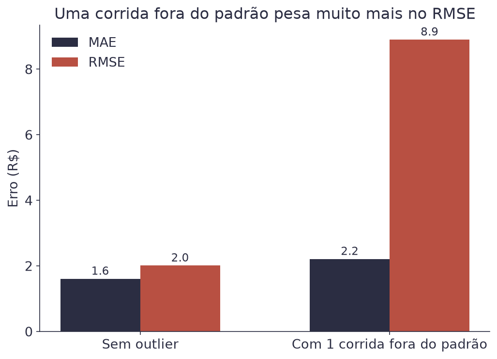
Por isso, quando o RMSE de um modelo está bem mais alto que o MAE, isso é um sinal de que existem alguns erros grandes escondidos na média. Vale a pena investigar quais corridas eles são.
O MAPE engana de outro jeito, e este é mais sutil. Separe as 200 corridas por distância e olhe as duas métricas lado a lado:
| Faixa | Corridas | Preço médio | MAE | MAPE |
|---|---|---|---|---|
| até 5 km | 89 | R$ 11,32 | R$ 1,54 | 15,8% |
| 5 a 10 km | 86 | R$ 20,37 | R$ 1,55 | 8,2% |
| 10 a 15 km | 14 | R$ 30,92 | R$ 2,01 | 6,6% |
| acima de 15 km | 11 | R$ 47,45 | R$ 2,08 | 4,4% |
Leia a coluna do MAE: o modelo erra quase o mesmo em toda faixa, entre R$ 1,54 e R$ 2,08. Agora leia a do MAPE: ele vai de 15,8% a 4,4%, quase quatro vezes.
Nenhuma das duas está mentindo. O modelo erra o mesmo tanto em reais, e esse mesmo tanto é uma fatia bem maior de uma corrida barata. Se o seu problema é comprar combustível, o MAE responde. Se é a percepção do cliente sobre o preço estar certo, o MAPE responde.
Até aqui o modelo devolve um número: uma corrida de 8 km custa R$ 22,55. E aí vem a pergunta honesta: a sua corrida de 8 km vai custar isso?
Não. Vai custar em volta disso. Olhe de novo a nuvem de pontos: para 8 km existem corridas de R$ 19 e de R$ 26, todas de verdade. A reta acerta a média das corridas de 8 km, e nenhuma corrida sozinha é a média.
Um número único esconde isso. Uma faixa mostra.
Comece medindo o tamanho típico de um resíduo. Esse número se chama erro
padrão residual e costuma aparecer como s:
| Símbolo | Significado |
|---|---|
| a soma | os resíduos ao quadrado, os mesmos do MSE |
n - 2 |
em vez de n: dois números (w₀ e w₁) já foram gastos para ajustar a reta |
s |
o resíduo típico, em reais |
Nas 200 corridas, s = R$ 2,02. É quase o RMSE (R$ 2,01), e a diferença é
só esse n - 2 no lugar do n.
Os resíduos se espalham em torno da reta, e a maioria fica a menos de dois
s de distância. Daí a regra:
| Símbolo | Significado |
|---|---|
ŷ |
o preço que a reta previu para aquela distância |
2s |
R$ 4,04 nestes dados: a margem para cada lado |
Exemplo, para a corrida de 8 km: 22,55 ± 4,04, ou seja, de R$ 18,51 a
R$ 26,59. Essa frase é muito mais útil que "vai custar R$ 22,55", porque
ela é verdadeira.
Uma faixa que promete 95% e entrega 60% não serve para nada. Conte:
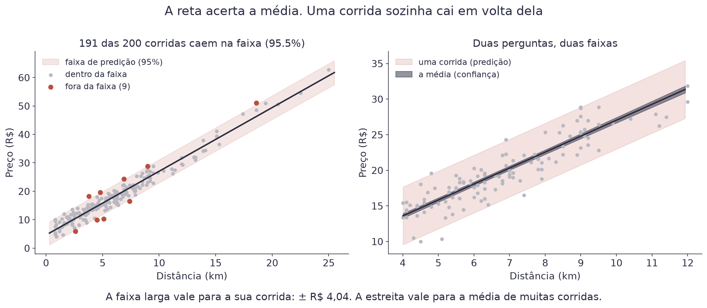
Nove corridas ficaram de fora, de 200. São 4,5%, e a faixa prometia deixar 5% de fora. Isso é o que se espera de uma faixa honesta, e é assim que se confere qualquer intervalo: conte quantos ficaram dentro.
O painel da direita mostra duas faixas, e a diferença entre elas é o ponto mais confundido do assunto inteiro.
| Pergunta | Faixa | Largura em 8 km |
|---|---|---|
| Quanto custa a sua corrida de 8 km? | intervalo de predição | ± R$ 4,00 |
| Quanto custa em média uma corrida de 8 km? | intervalo de confiança | ± R$ 0,31 |
A segunda faixa é treze vezes mais estreita, e a razão é direta. Com 200 corridas, a reta já conhece bem a média: a dúvida sobre ela é pequena, e encolhe conforme você coleta mais dados. Mas a variação entre corridas individuais (trânsito, horário, tarifa) não encolhe nunca, por mais dados que você junte. Ela é do mundo, não do modelo.
Atenção
Erro do dia
Entregar a faixa estreita quando a pergunta pedia a larga. É fácil de fazer, e o resultado é um sistema que promete R$ 22,55 ± R$ 0,31 e erra quase toda corrida. Antes de escolher a faixa, pergunte: estou falando de uma corrida ou da média de muitas?
A regra do ± 2s é uma simplificação boa, e vale a pena saber de onde ela
vem. A fórmula exata do intervalo de predição é:
| Símbolo | Significado |
|---|---|
x₀ |
a distância da corrida que você quer prever |
t |
um número de tabela, perto de 2 quando há muitos dados |
| a raiz | quase 1 aqui, e cresce quando x₀ foge da média das distâncias |
Ninguém calcula isso à mão, e você não precisa decorar. Repare só no que
ela diz: com n = 200, t vale 1,97 e a raiz vale 1,003, então o
resultado é ± R$ 4,00. A regra prática deu ± R$ 4,04. Quatro centavos
de diferença.
E repare no último termo: a faixa abre quando você prevê longe da média das distâncias. Prever uma corrida de 60 km com dados que vão até 25 km é possível, e a fórmula avisa que a incerteza cresce. Fora da faixa dos dados, ela deixa de avisar direito: ali não há informação nenhuma.
O teste mais honesto de que você entendeu é tentar explicar sem ler. Feche esta página e responda em voz alta, como se explicasse para um colega. Onde travar, é ali que falta entender: volte à seção.
| Conceito | O que significa |
|---|---|
w₀, w₁ |
taxa fixa e preço por km |
Resíduo (εᵢ) |
preço real menos preço previsto, corrida por corrida |
| MSE | média dos resíduos ao quadrado |
| Mínimos quadrados | fórmula que calcula a melhor reta direto, sem tentativa e erro |
| Inclinação (derivada) | o quanto o erro muda quando você mexe um tiquinho no peso |
| Gradiente | a lista das inclinações, uma por peso do modelo |
| Gradiente descendente | ajusta os coeficientes aos poucos, na direção que reduz o erro |
Taxa de aprendizado (α) |
tamanho do passo do gradiente descendente |
| MAE | erro médio, na mesma unidade do preço |
| RMSE | como o MAE, mas penaliza mais os erros grandes |
| R² | fração da variação dos preços que a reta explica (0 a 1) |
| MAPE | erro médio em porcentagem do preço real |
s (resíduo típico) |
o tamanho médio de um resíduo, em reais |
| Intervalo de predição | a faixa onde cai uma corrida: ŷ ± 2s |
| Intervalo de confiança | a faixa onde cai a média, bem mais estreita |
corridas_app.csvSe ainda não sabe como abrir o notebook, veja Antes de começar primeiro.
LinearRegression no scikit-learn: a classe que você vai usar no notebook desta aula.Nota
O que você leva desta aula
Você vai aprender a prever um número usando várias informações ao mesmo tempo, a incluir no modelo uma coluna que não é número (o bairro), e a ler cada coeficiente em português, sabendo o que ele mede e o que ele não mede.
Você quer alugar um apartamento e abre um site de imóveis. Dois anúncios têm exatamente 70 m². Um pede R$ 2.400 e o outro pede R$ 3.500. A área é a mesma, então o preço não vem só dela.
Vem também do número de quartos, da idade do prédio e, principalmente, do bairro. Na Aula 1 a reta usava uma informação só. Aqui você aprende a usar todas as informações ao mesmo tempo, que é como qualquer modelo de verdade funciona.
O dataset desta aula tem 300 apartamentos, com quatro informações sobre cada um: área, quartos, idade e bairro.
Comece pelo que você já sabe fazer: uma reta com a área.
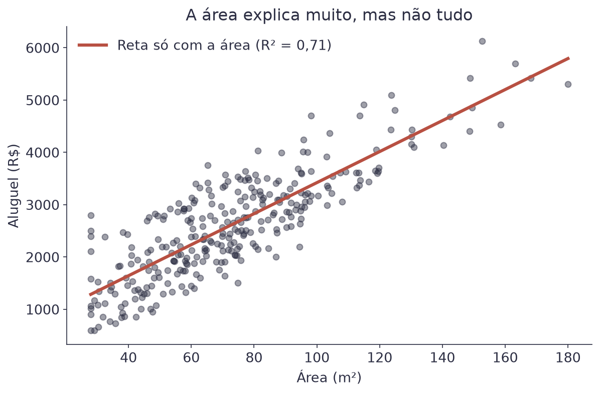
A reta acompanha a tendência, e o R² dá 0,71. Não é ruim. Mas repare na
espessura da nuvem: para uma mesma área existem aluguéis bem diferentes. É
essa faixa vertical que as outras informações vão explicar.
O modelo continua sendo uma soma. Cada informação entra multiplicada pelo seu próprio peso.
| Símbolo | Significado |
|---|---|
ŷ |
o aluguel previsto, em reais |
p |
quantas informações (variáveis) o modelo usa |
x₁, x₂... |
as informações do apartamento: área, quartos, idade |
w₁, w₂... |
o peso de cada informação |
w₀ |
o valor base, quando todas as informações valem zero |
Escrever x₁ + x₂ + ... cansa quando o modelo tem muitas variáveis. A
forma compacta usa o mesmo somatório da Aula 1:
| Símbolo | Significado |
|---|---|
j |
o número da variável: 1 para a área, 2 para os quartos... |
Σ |
"some para todas as variáveis, de j = 1 até j = p" |
Exemplo com três variáveis, usando os pesos que o modelo desta aula
encontrou. Para um apartamento de 70 m², com 2 quartos e 10 anos, no
Centro: 442 + 25,10 × 70 + 220,10 × 2 + (−11,60) × 10 = 2.521 reais.
Esta é a boa notícia. A função de perda continua sendo o MSE, e o gradiente descendente continua fazendo o mesmo. A única diferença é o tamanho do gradiente: em vez de duas inclinações, agora ele tem uma para cada peso.
| Símbolo | Significado |
|---|---|
∂MSE/∂wⱼ |
a inclinação do erro quando só o peso wⱼ se mexe |
p |
o número de variáveis do modelo |
A regra de atualização também é a mesma, aplicada a cada peso, passo a passo:
| Símbolo | Significado |
|---|---|
t |
o número do passo |
α |
a taxa de aprendizado, o tamanho do passo |
Com duas variáveis, a reta vira um plano. Com três ou mais ninguém consegue desenhar, mas a conta é idêntica.
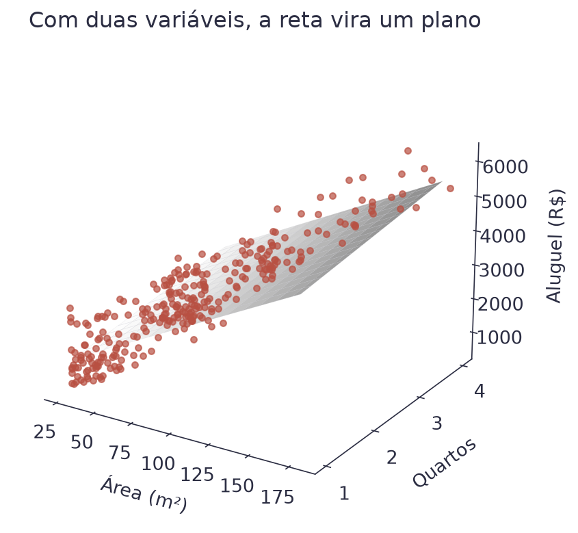
Área, quartos e idade são números. O bairro é um nome: Centro, Jardins ou Vila Nova. E ele importa muito.
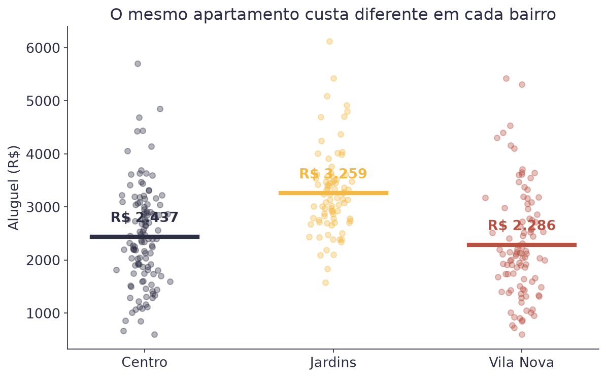
A tentação é numerar: Centro = 1, Jardins = 2, Vila Nova = 3. Não faça isso. O modelo trataria esses números como quantidade, e passaria a acreditar em duas bobagens. Que Vila Nova é "três vezes" o Centro. E que a distância entre Centro e Jardins é a mesma que entre Jardins e Vila Nova.
O jeito certo é criar uma coluna nova para cada bairro, com 0 ou 1. Essas colunas se chamam variáveis indicadoras (dummy variables).
| Bairro do anúncio | bairro_Jardins |
bairro_Vila Nova |
|---|---|---|
| Centro | 0 | 0 |
| Jardins | 1 | 0 |
| Vila Nova | 0 | 1 |
Repare que existem três bairros e só duas colunas. O Centro é a categoria de referência: ele aparece quando as duas colunas valem zero. Sempre sobra uma categoria de fora, e é isso que você quer. Se criasse as três colunas, uma delas seria adivinhável a partir das outras duas, e o modelo ficaria com infinitas soluções equivalentes.
Com as duas colunas novas, o modelo fica assim:
| Símbolo | Significado |
|---|---|
jardins |
vale 1 se o apartamento é no Jardins, 0 se não é |
vila |
vale 1 se o apartamento é na Vila Nova, 0 se não é |
w₄, w₅ |
quanto cada bairro soma ou tira, em relação ao Centro |
Exemplo: o mesmo apartamento de 70 m², 2 quartos e 10 anos custa R$ 2.521
no Centro. No Jardins, a coluna jardins passa a valer 1, e o aluguel
previsto sobe para 2.521 + 828 = 3.349 reais.
Cada coeficiente responde a uma pergunta muito específica: quanto muda o aluguel se esta variável subir uma unidade e todas as outras ficarem paradas?
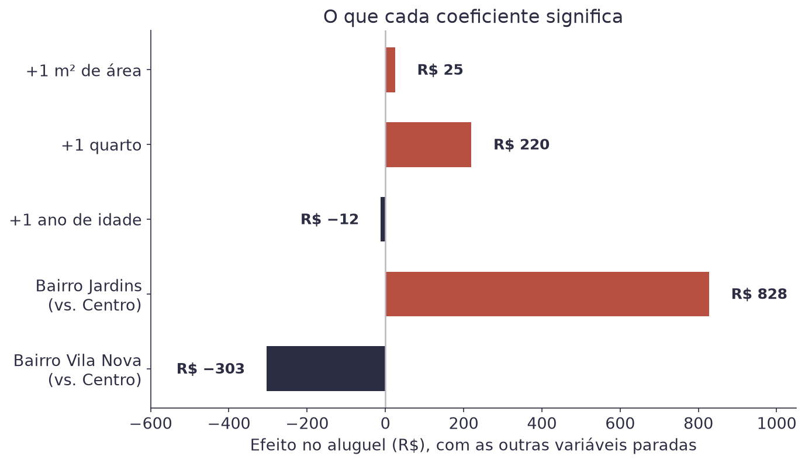
Traduzindo o gráfico para frases:
| Coeficiente | Valor | Lê-se assim |
|---|---|---|
| área | +25,10 | cada m² a mais soma R$ 25,10 no aluguel |
| quartos | +220,10 | um quarto a mais soma R$ 220,10, na mesma área |
| idade | −11,60 | cada ano de prédio tira R$ 11,60 |
| Jardins | +827,60 | o mesmo apartamento no Jardins custa R$ 827,60 a mais que no Centro |
| Vila Nova | −303,20 | e na Vila Nova custa R$ 303,20 a menos que no Centro |
O w₀ de 442 reais é o valor base: o que o modelo prevê para um
apartamento de 0 m², 0 quartos, novo, no Centro. Esse apartamento não
existe. Isso é normal, e não invalida o modelo. O papel de w₀ é ajustar
a altura de todo o resto.
Atenção
Erro do dia
Olhar para o gráfico acima e concluir que "o bairro é a variável mais importante, porque a barra é maior". As barras estão em unidades diferentes. Uma delas é o efeito de um metro quadrado, a outra é o efeito de mudar de bairro. Vinte metros quadrados a mais valem R$ 502, quase tanto quanto trocar o Centro pelo Jardins. Coeficiente grande não significa variável importante: significa que a unidade daquela variável é pequena.
Este é o ponto mais difícil da aula, e vale a pena ir devagar.
Sozinha, a área tem coeficiente 29,70. No modelo completo, ela cai para 25,10. A área não mudou. A pergunta é que mudou.
Quando a área é a única variável, ela leva o crédito por tudo que anda junto com ela. Apartamentos maiores costumam ter mais quartos: neste dataset, a correlação entre área e quartos é de 0,82. Sem a coluna de quartos no modelo, o efeito dos quartos se esconde dentro do coeficiente da área.
Quando os quartos entram, cada um fica com a sua parte. Por isso o coeficiente da área diminui. Ele passou a significar "o efeito de mais um metro quadrado, no mesmo número de quartos".
O mesmo raciocínio explica um número estranho deste dataset. A Vila Nova tem a maior área média (76,5 m²) e o menor aluguel médio (R$ 2.286). Isso não é contradição. O coeficiente da Vila Nova compara apartamentos de mesma área, e aí o bairro sai devendo.
Existe uma armadilha aqui. Toda variável nova, por pior que seja, faz o
R² subir ou ficar igual. Ele nunca cai.
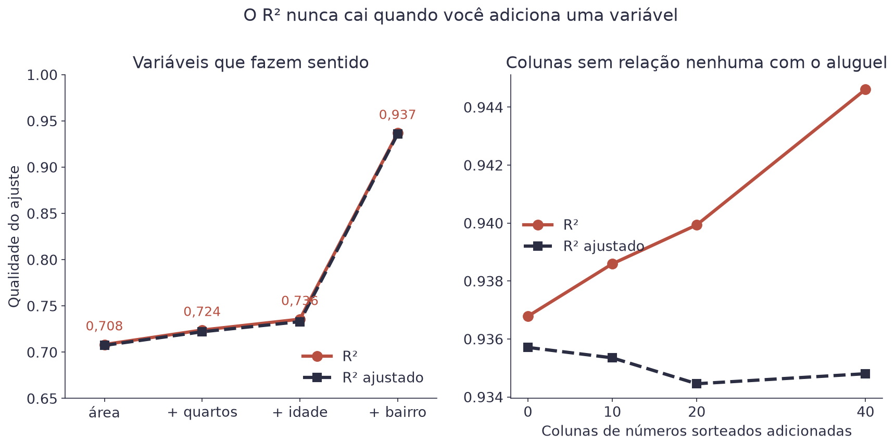
A defesa contra isso é o R² ajustado, que desconta do R² o preço de
cada variável nova.
| Símbolo | Significado |
|---|---|
n |
quantos apartamentos existem na tabela |
p |
quantas variáveis o modelo usa |
R² |
o R² comum, aquele da Aula 1 |
Exemplo com o modelo completo: n = 300, p = 5 e R² = 0,937. A conta
dá R² ajustado de 0,936. A diferença é pequena porque as cinco variáveis
são boas. Encha o modelo de colunas sorteadas e a diferença cresce.
A regra prática: se você adicionou uma variável e o R² ajustado caiu,
essa variável não estava pagando o próprio custo.
A seção anterior mostrou o R² ajustado como diagnóstico. Ele ajuda, e não
resolve. O jeito direto de saber se um modelo presta é guardar dados que
ele nunca viu.
from sklearn.model_selection import train_test_split
treino_x, teste_x, treino_y, teste_y = train_test_split(
tabela, dados["aluguel"], test_size=0.3, random_state=42)
Você treina com 70% dos apartamentos e mede com os outros 30%. A regra é simples e não tem exceção: o modelo nunca pode ver os dados de teste durante o treino. Se ele vir, a medida deixa de valer.
Com essa separação, dá para enxergar o problema que o R² ajustado só
apontava de longe. Comece com as 5 colunas boas e vá enchendo o modelo de
colunas de números sorteados:
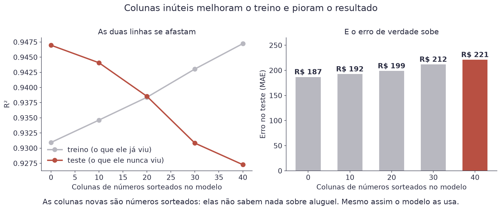
| Colunas sorteadas | R² no treino |
R² no teste |
Erro no teste |
|---|---|---|---|
| nenhuma | 0,931 | 0,947 | R$ 187 |
| 10 | 0,935 | 0,944 | R$ 192 |
| 20 | 0,938 | 0,939 | R$ 199 |
| 40 | 0,947 | 0,927 | R$ 221 |
Leia as duas colunas do meio na horizontal. O R² de treino sobe de
0,931 para 0,947, e o de teste desce de 0,947 para 0,927. O modelo
está ficando melhor no que já viu e pior no que importa.
Isso tem nome: sobreajuste (overfitting). O modelo decorou o ruído das 210 linhas de treino em vez de aprender a regra.
Por que o modelo usa colunas que não sabem nada? Porque nada o impede. O gradiente descendente só tem uma ordem: minimize o erro no treino. Se dar um coeficiente de 40 reais a uma coluna sorteada tira um centavo do erro, ele dá.
A regularização muda a ordem. Em vez de "minimize o erro", ela diz "minimize o erro e mantenha os coeficientes pequenos":
| Símbolo | Significado |
|---|---|
| MSE | o erro de sempre, o que o modelo já minimizava |
| penalidade | um número que cresce quando os coeficientes crescem |
α |
a força do freio: 0 desliga, quanto maior mais aperta |
Exemplo: com α = 0, o custo é só o MSE e nada muda. Com α gigante,
compensa zerar todos os coeficientes e prever a média para todo mundo. O
valor útil está no meio, e quem escolhe é a validação cruzada.
O scikit-learn traz três penalidades, e a diferença entre elas está só na conta do "penalidade(w)".
| Símbolo | Significado |
|---|---|
wⱼ² |
o coeficiente da variável j, elevado ao quadrado |
Σ |
some para todas as p variáveis do modelo |
Exemplo: um coeficiente de 10 contribui com 100 para a penalidade, e um de 1 contribui com 1. Cortar o de 10 pela metade economiza 75; cortar o de 1 pela metade economiza 0,75. Cem vezes menos.
É por isso que o Ridge espreme os grandes e deixa os pequenos quase em paz. E é por isso que nenhum chega a zero: quanto menor o coeficiente, menor o prêmio por encolher mais um pouco. Sempre sobra um pouquinho.
from sklearn.linear_model import RidgeCV
modelo = RidgeCV(alphas=np.logspace(-2, 3, 60)).fit(treino_x, treino_y)
| Símbolo | Significado |
|---|---|
\|wⱼ\| |
o coeficiente da variável j, sem o sinal |
Σ |
some para todas as p variáveis do modelo |
Exemplo: cortar um coeficiente de 0,2 para 0 economiza 0,2 na penalidade. Cortar um de 10,2 para 10 economiza os mesmos 0,2. O desconto é o mesmo, não importa o tamanho.
Aí está a diferença inteira. Sem prêmio maior para os grandes, o freio empurra os coeficientes inúteis até zero, e a coluna sai do modelo.
from sklearn.linear_model import LassoCV
modelo = LassoCV(alphas=np.logspace(-2, 3, 60), cv=5).fit(treino_x, treino_y)
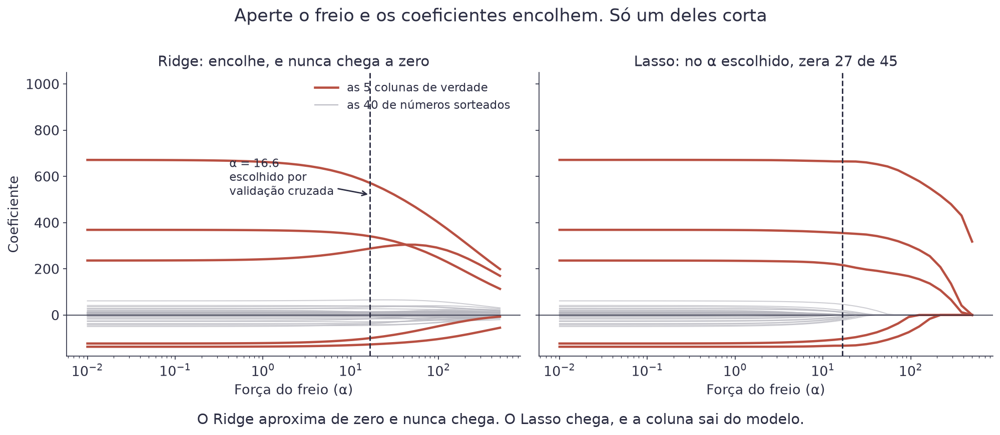
Repare no painel da direita: as linhas cinzas tocam o zero e ficam lá. No α escolhido, o Lasso zerou 27 das 45 colunas, e quase todas eram ruído.
| Símbolo | Significado |
|---|---|
ρ (o l1_ratio) |
quanto da penalidade é Lasso: 1 é Lasso puro, 0 é Ridge puro |
α |
a força do freio, como antes |
Ele existe por um motivo prático. Quando duas colunas andam muito juntas (a área e os quartos, com correlação de 0,82), o Lasso costuma escolher uma e zerar a outra, meio ao acaso. O ElasticNet segura as duas.
from sklearn.linear_model import ElasticNetCV
modelo = ElasticNetCV(alphas=np.logspace(-2, 3, 60),
l1_ratio=[0.1, 0.5, 0.9, 1.0], cv=5).fit(treino_x, treino_y)
Com as 5 colunas boas mais 40 sorteadas:
| Modelo | α escolhido |
R² no teste |
Erro no teste | Colunas zeradas |
|---|---|---|---|---|
| Sem freio | — | 0,927 | R$ 221 | 0 de 45 |
| RidgeCV | 4,24 | 0,927 | R$ 220 | 0 de 45 |
| LassoCV | 16,61 | 0,941 | R$ 197 | 27 de 45 |
| ElasticNetCV | 16,61 | 0,941 | R$ 197 | 27 de 45 |
Três coisas para ler nessa tabela, e as três são honestas.
O Ridge quase não ajudou. Ele encolheu os coeficientes do ruído (a soma deles caiu de 668 para 660), e isso não bastou. Quando o problema é coluna que não deveria estar ali, encolher não resolve: precisa cortar.
O Lasso ajudou de verdade. O erro caiu de R$ 221 para R$ 197, e a soma dos coeficientes do ruído desabou de 668 para 186.
O ElasticNet deu exatamente o mesmo resultado do Lasso. Não é
coincidência: deixando ele escolher o l1_ratio entre 0,1 e 1,0, ele
escolheu 1,0, que é Lasso puro. Ou seja, perguntamos ao modelo qual
ferramenta usar, e ele respondeu.
Dica
E se as colunas forem todas boas?
Repetimos tudo sem as colunas sorteadas, só com as 5 de verdade. O R² de
teste deu 0,9470 nos três modelos, e o LassoCV escolheu α = 0,01, quase
zero. Regularização não é imposto: quando não há o que cortar, ela se
desliga sozinha. É por isso que dá para usar as versões CV por padrão.
O freio olha o tamanho dos coeficientes. E o tamanho de um coeficiente depende da unidade da variável, não da importância dela.
A área está em metros quadrados, então o coeficiente dela é R$ 25 por unidade. Se estivesse em hectares, o mesmo efeito viraria um coeficiente de R$ 250.000. Nada mudou no mundo, e o freio passaria a odiar essa coluna.
Veja o estrago no nosso caso. O mesmo Lasso, com e sem padronizar:
| Coluna | Sem padronizar | Padronizado |
|---|---|---|
| área | 29,20 | 646,13 |
| quartos | 52,48 | 186,24 |
| idade | −10,43 | −63,71 |
| Jardins | 643,51 | 335,23 |
| Vila Nova | −188,25 | −111,01 |
Sem padronizar, o bairro Jardins parece a variável mais forte do modelo e a área parece a mais fraca. Padronizado, a ordem se inverte: a área é a mais forte, com folga. A primeira leitura é um artefato de unidade.
A correção é uma linha, e ela vem antes do modelo:
from sklearn.preprocessing import StandardScaler
escala = StandardScaler().fit(treino_x)
treino_padronizado = escala.transform(treino_x)
teste_padronizado = escala.transform(teste_x)
Repare que o fit usa só o treino. Depois você aplica a mesma escala
no teste. Calcular a média e o desvio com os dados de teste juntos é
deixar o modelo espiar o que ele não deveria ver.
Atenção
Erro do dia
Rodar Ridge ou Lasso sem padronizar. O código funciona, não dá erro
nenhum, e o modelo passa a escolher o que cortar olhando a unidade de cada
coluna. Regressão comum não tem esse problema: só a regularizada tem.
Um detalhe que confunde muita gente: o α do Ridge e o do Lasso não
significam a mesma coisa, porque as duas classes normalizam a conta de
formas diferentes. Nunca compare os dois pelo número do α, e prefira as
versões RidgeCV, LassoCV e ElasticNetCV, que escolhem sozinhas.
| Situação | Escolha |
|---|---|
| Muitas colunas, e você suspeita que a maioria não serve | Lasso |
| Poucas colunas, todas plausíveis, e você quer só estabilizar | Ridge |
| Muitas colunas, com grupos de colunas parecidas entre si | ElasticNet |
| Você não sabe | ElasticNetCV com l1_ratio variando, e deixe ele decidir |
E uma regra que vale mais que a tabela: compare no conjunto de teste.
As três versões CV custam uma linha cada, e a resposta certa é a que
erra menos nos dados que o modelo nunca viu.
Depois de treinar, faça um gráfico dos resíduos contra os valores previstos. Ele custa dez segundos e diz muito.
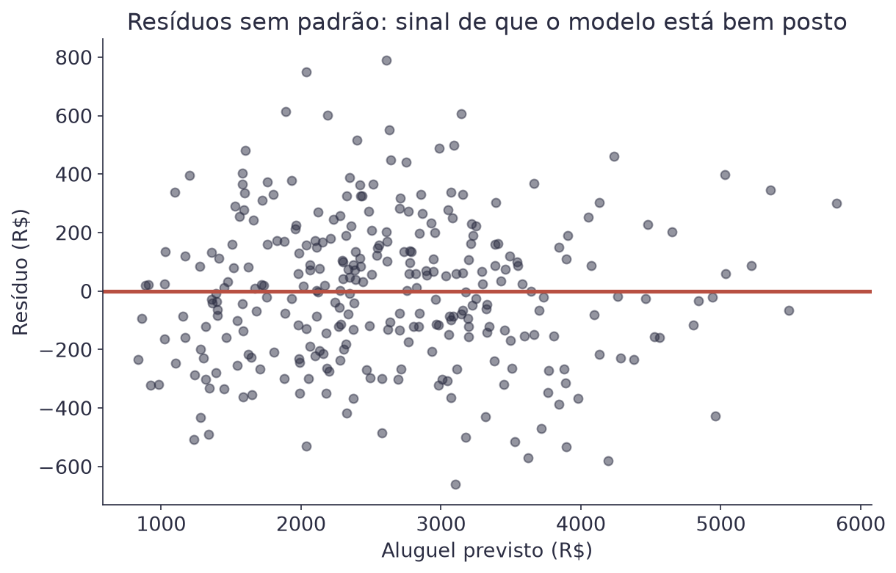
O que você espera: pontos espalhados em torno do zero, sem desenho nenhum. Isso significa que o modelo errou de forma parecida em toda a faixa de preços.
O que acende o alarme: um funil (o erro cresce com o preço previsto), uma curva (falta uma variável ou a relação não é reta), ou pontos muito longe do zero (candidatos a investigar um a um).
O teste mais honesto de que você entendeu é tentar explicar sem ler. Feche esta página e responda em voz alta, como se explicasse para um colega. Onde travar, é ali que falta entender: volte à seção.
| Conceito | O que significa |
|---|---|
| Regressão múltipla | uma soma de várias informações, cada uma com o seu peso |
Coeficiente wⱼ |
quanto muda a previsão se xⱼ sobe 1, com o resto parado |
| Variável indicadora | coluna de 0 ou 1 que representa uma categoria |
| Categoria de referência | a categoria que fica de fora e vive dentro do w₀ |
| Colinearidade | duas variáveis que andam juntas e dividem o crédito |
R² ajustado |
o R² descontando o custo de cada variável nova |
| Resíduo contra previsto | o gráfico de diagnóstico que você olha antes de confiar |
| Treino e teste | separar 30% dos dados que o modelo nunca vê |
| Sobreajuste | ficar melhor no treino e pior no teste |
| Regularização | somar ao erro uma penalidade pelo tamanho dos coeficientes |
| Ridge | penalidade Σw²: encolhe todos, nunca zera |
| Lasso | penalidade Σ\|w\|: zera os inúteis e tira a coluna do modelo |
| ElasticNet | mistura das duas, com l1_ratio decidindo a proporção |
| Padronizar | pôr as colunas na mesma escala, obrigatório antes de regularizar |
alugueis.csvSe ainda não sabe como abrir o notebook, veja Antes de começar primeiro.
pandas.get_dummies: a função que cria as variáveis indicadoras em uma linha.Ridge, Lasso e ElasticNet, com a fórmula exata que cada classe minimiza.Nota
O que você leva desta aula
Você vai aprender a prever uma categoria em vez de um número, usando a mesma soma de sempre esmagada pela função sigmoide. Vai aprender a ler os coeficientes em chances, a escolher o limiar de decisão, e a medir acertos com acurácia, precisão, recall e F1.
Uma empresa de streaming quer saber quem está prestes a cancelar. Não adianta descobrir depois: quando o cliente cancela, ele já foi. A pergunta útil é outra. Quem, entre os clientes de hoje, tem mais chance de cancelar no mês que vem?
Essa pergunta não pede um número como preço ou aluguel. Ela pede uma resposta de duas opções: cancela ou não cancela. Chamamos isso de classificação, e o modelo mais simples para resolver é a regressão logística.
O dataset desta aula tem 400 clientes, com quatro informações sobre cada
um: tempo de casa, valor mensal, chamados ao suporte e plano. A coluna
cancelou vale 1 para quem cancelou e 0 para quem ficou. No total, 36%
cancelaram.
A tentação é usar a regressão da Aula 1, com 0 e 1 no lugar do preço. Veja o que acontece.
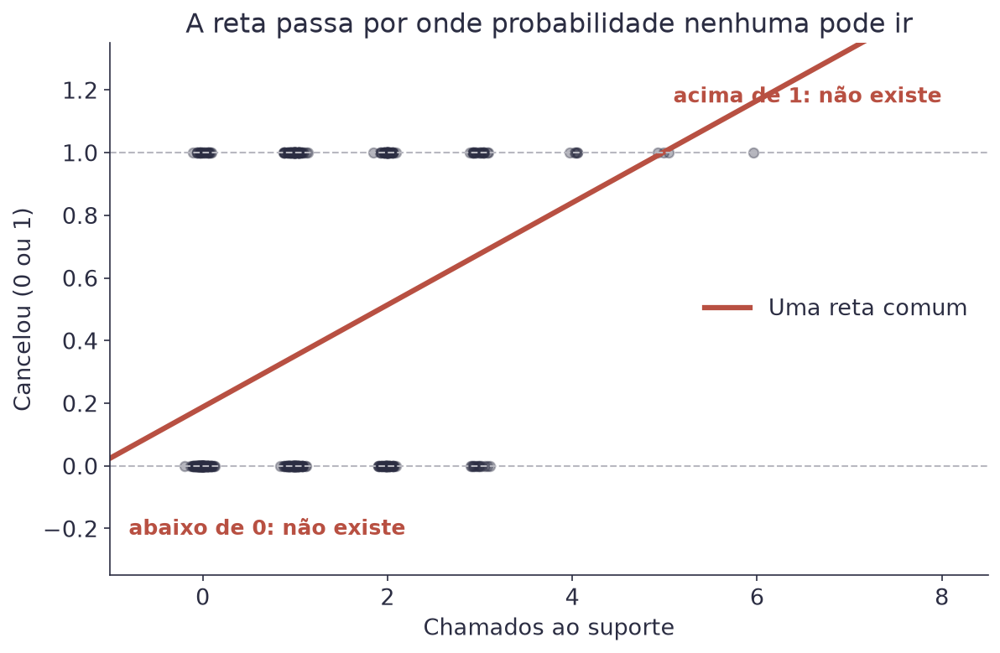
A reta não tem freio. Para quem nunca ligou para o suporte, ela prevê um valor negativo. Para quem ligou seis vezes, prevê mais que 1. Probabilidade negativa não existe, e probabilidade acima de 100% também não.
Precisamos de uma função que aceite qualquer número na entrada e devolva sempre algo entre 0 e 1.
Essa função existe, tem formato de S, e se chama sigmoide.
| Símbolo | Significado |
|---|---|
σ |
a letra grega sigma minúscula, o nome da função |
z |
qualquer número, positivo ou negativo, que entra na função |
e |
o número de Euler, aproximadamente 2,718 |
σ(z) |
o resultado, sempre entre 0 e 1: uma probabilidade |
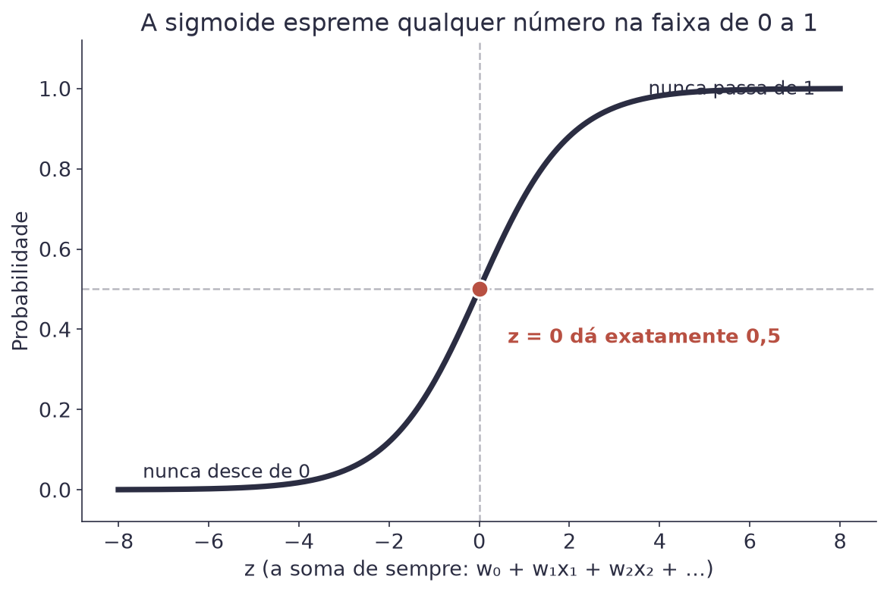
Três exemplos para pegar o jeito. Com z = 0, a conta dá 1/(1+1) = 0,5.
Com z = 2, dá 0,88. Com z = −2, dá 0,12. Números bem grandes chegam
perto de 1 sem nunca encostar, e bem negativos chegam perto de 0 pelo
mesmo motivo.
Por que essa curva, e não qualquer outra em formato de S? Duas razões honestas. A primeira é conveniência: a derivada dela é simples, e o gradiente descendente da Aula 1 agradece. A segunda é a que importa para você: com essa curva, cada coeficiente ganha uma leitura em chances de aposta, que aparece daqui a pouco. Outras curvas em S existem, e não têm essa leitura.
Agora junte as duas peças. A soma de sempre produz o z, e a sigmoide
transforma esse z em probabilidade.
| Símbolo | Significado |
|---|---|
P(cancelar) |
a probabilidade de o cliente cancelar, de 0 a 1 |
z |
a mesma soma da Aula 2, sem nenhuma novidade |
xⱼ, wⱼ |
a informação do cliente e o peso dela |
A parte de dentro é idêntica à regressão múltipla. O que muda é a casca: antes o resultado da soma era a previsão; agora ele passa pela sigmoide e vira probabilidade.
O treino também segue a mesma receita: uma função de perda e gradiente descendente. A perda deixa de ser o MSE e passa a ser a log loss, que pune com força quem erra com muita confiança. A ideia de descer a serra não muda em nada.
Veja a curva ajustada usando só os chamados ao suporte:
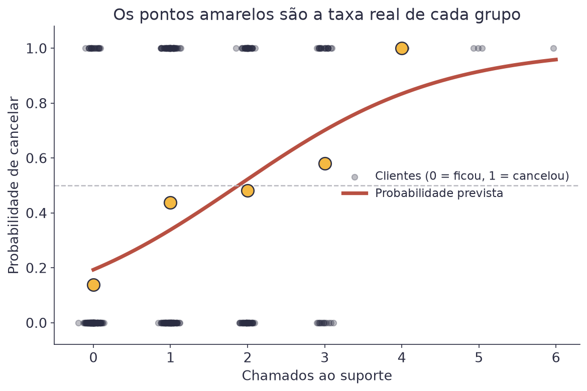
Estes são os pesos que o modelo desta aula encontrou:
| Variável | Coeficiente | Direção |
|---|---|---|
| tempo de casa (meses) | −0,079 | mais tempo de casa, menos risco |
| valor mensal (R$) | +0,011 | mais caro, mais risco |
| chamados ao suporte | +0,996 | cada chamado aumenta bastante o risco |
| plano Padrão (vs. Básico) | −0,184 | risco um pouco menor |
| plano Premium (vs. Básico) | −0,505 | risco bem menor |
O sinal você já sabe ler: positivo empurra a probabilidade para cima,
negativo puxa para baixo. O tamanho é que engana. O coeficiente não soma
probabilidade, porque a sigmoide não é reta. Ele soma no z, e o efeito
no fim depende de onde o cliente já estava.
Existe uma leitura exata, e ela usa chances (odds), no sentido de aposta: 3 para 1, 1 para 2.
| Símbolo | Significado |
|---|---|
p |
a probabilidade de cancelar |
1 − p |
a probabilidade de ficar |
p / (1 − p) |
a chance: quantas vezes cancelar é mais provável que ficar |
Com essa forma, cada coeficiente ganha uma tradução simples. Somar 1 na
variável xⱼ multiplica a chance por e elevado a wⱼ.
Exemplo com os chamados ao suporte, cujo coeficiente é 0,996. O número e
elevado a 0,996 dá 2,71. Ou seja: cada chamado a mais multiplica por
2,7 a chance de o cliente cancelar, com tudo o mais parado. Para o tempo
de casa, e elevado a −0,079 dá 0,92: cada mês a mais multiplica a chance
por 0,92, que é o mesmo que reduzir 8%.
Dois clientes de verdade, calculados com esse modelo:
| Cliente | Perfil | Probabilidade |
|---|---|---|
| Em risco | 6 meses de casa, R$ 130, 3 chamados, Premium | 0,95 |
| Tranquilo | 36 meses de casa, R$ 40, 0 chamados, Básico | 0,05 |
O modelo devolve uma probabilidade, mas a equipe de retenção precisa de uma lista de nomes. Alguém tem que decidir onde cortar. Esse ponto de corte se chama limiar (threshold).
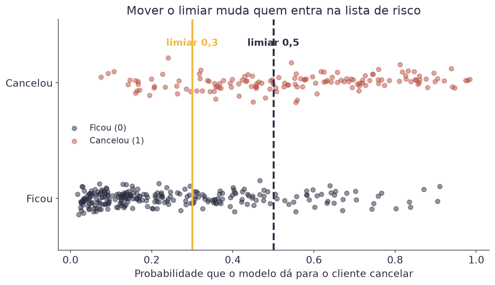
O limiar padrão é 0,5, mas ele não tem nada de sagrado. Ele só é o padrão porque é o meio. Escolher o limiar é uma decisão de negócio, e a próxima seção mostra o que se ganha e o que se perde ao mexer nele.
Antes das métricas, o quadro que gera todas elas. Com o limiar em 0,5, os 400 clientes se distribuem assim:
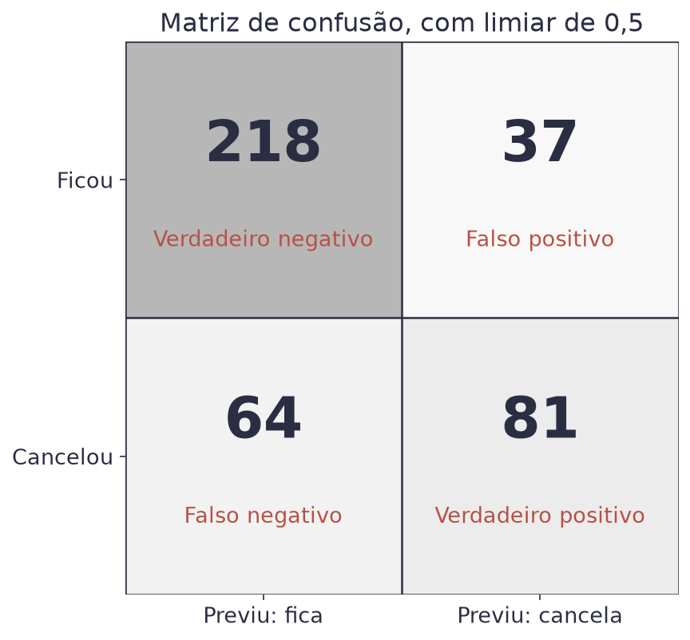
| Caixa | Quantos | O que aconteceu |
|---|---|---|
| Verdadeiro positivo (VP) | 81 | o modelo avisou e o cliente cancelou |
| Falso positivo (FP) | 37 | o modelo avisou e o cliente ficou |
| Falso negativo (FN) | 64 | o modelo não avisou e o cliente cancelou |
| Verdadeiro negativo (VN) | 218 | o modelo não avisou e o cliente ficou |
Os dois erros custam coisas diferentes. Um falso positivo gasta um cupom de desconto com quem ia ficar de qualquer jeito. Um falso negativo perde o cliente. Qual dos dois dói mais é uma pergunta da empresa, não da estatística.
| Símbolo | Significado |
|---|---|
| numerador | os acertos: avisou e cancelou, ou não avisou e ficou |
| denominador | todos os clientes |
No nosso caso: (81 + 218) / 400 = 0,75. O modelo acerta 75% das vezes.
Atenção
Erro do dia
Comemorar uma acurácia de 75% sem olhar mais nada. Neste dataset, 64% dos clientes não cancelaram. Um modelo preguiçoso que responde "ninguém cancela" para todo mundo acerta 64% e não serve para nada. A acurácia sozinha não distingue esse modelo do seu. Sempre compare a acurácia com a taxa da classe mais comum, e sempre olhe as outras métricas.
| Símbolo | Significado |
|---|---|
| precisão | dos clientes que o modelo apontou, quantos realmente cancelaram |
| recall | dos clientes que cancelaram, quantos o modelo conseguiu apontar |
VP, FP, FN |
as caixas da matriz de confusão |
No nosso caso: precisão de 81 / 118 = 0,69 e recall de 81 / 145 = 0,56.
Traduzindo: quando o modelo aponta alguém, ele acerta 69% das vezes; e ele
pega 56% de todos os cancelamentos que aconteceram.
Repare que as duas respondem a perguntas diferentes. Precisão é sobre a lista que você gerou. Recall é sobre o problema inteiro que existe lá fora.
| Símbolo | Significado |
|---|---|
F₁ |
a média harmônica entre precisão e recall |
| média harmônica | um tipo de média que puxa o resultado para o menor dos dois |
No nosso caso: F₁ = 0,62. O valor fica sempre entre a precisão e o
recall, e mais perto do pior dos dois. É por isso que ele serve como
número único: para o F1 subir, os dois precisam ir bem.
Agora junte tudo. Baixar o limiar significa avisar mais gente, o que pega mais cancelamentos (recall sobe) e erra mais alarmes (precisão cai).
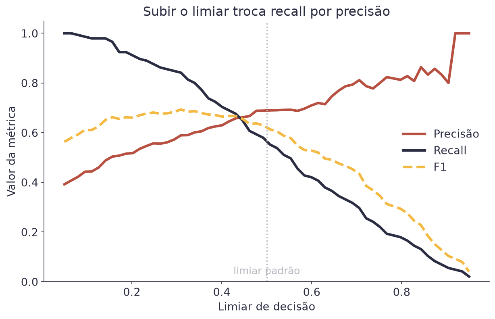
Compare os dois limiares no mesmo modelo:
| Limiar | Acurácia | Precisão | Recall | F1 | Lista de risco |
|---|---|---|---|---|---|
| 0,50 | 0,75 | 0,69 | 0,56 | 0,62 | 118 clientes |
| 0,30 | 0,72 | 0,58 | 0,84 | 0,68 | 212 clientes |
Baixar o limiar para 0,30 derrubou a acurácia e a precisão, e mesmo assim foi a melhor escolha para este problema. Com 0,30, o modelo pega 84% dos cancelamentos em vez de 56%. Se o cupom de desconto é barato e perder cliente é caro, essa troca compensa.
A pergunta não é "qual limiar é o correto". É "qual erro custa mais caro para nós".
A tabela acima compara dois limiares. Existem infinitos. A curva ROC mostra todos ao mesmo tempo.
Ela é um gráfico de dois números, e os dois você já calculou:
| Símbolo | Significado |
|---|---|
| TPR | dos que cancelaram, quantos o modelo pegou. É o recall |
| FPR | dos que ficaram, quantos o modelo acusou à toa |
VP, FP, FN, VN |
as quatro caixas da matriz de confusão |
Exemplo, com o limiar em 0,50: o modelo pega 56% dos cancelamentos (TPR) e acusa à toa 15% de quem ia ficar (FPR). Esse par vira um ponto. Varie o limiar de 1 até 0, marque todos os pontos, e você tem a curva:
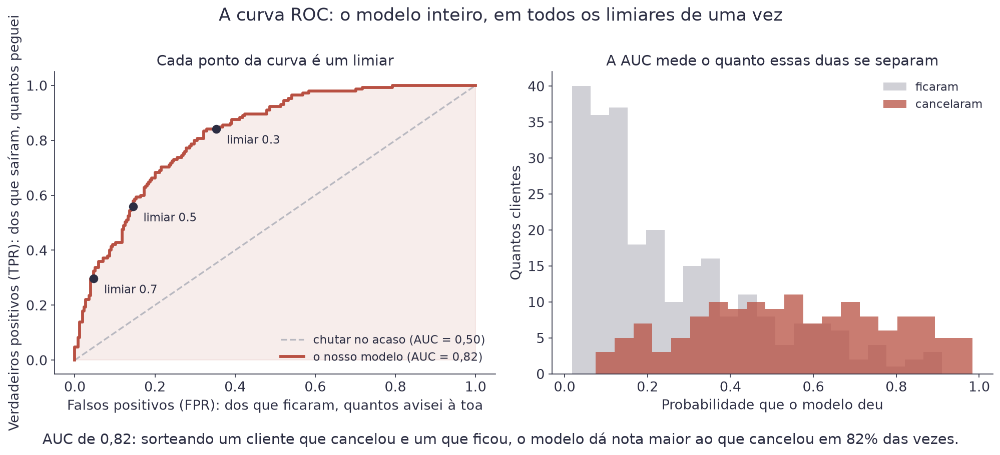
| Limiar | TPR (pego dos que saíram) | FPR (acuso dos que ficaram) |
|---|---|---|
| 0,70 | 30% | 5% |
| 0,50 | 56% | 15% |
| 0,30 | 84% | 35% |
| 0,20 | 91% | 49% |
A diagonal tracejada é o modelo que chuta. Quanto mais a curva sobe em direção ao canto de cima à esquerda, melhor: ali você pega muitos cancelamentos incomodando pouca gente.
O resumo da curva num número só é a AUC (area under the curve). A nossa dá 0,82. E ela tem uma leitura exata, que é a melhor coisa desta seção:
Sorteie um cliente que cancelou e um que ficou. A AUC é a probabilidade de o modelo ter dado nota maior ao que cancelou.
Isso não é analogia: é o que a AUC mede. Dá para conferir, e conferimos. Sorteamos 200.000 pares desses e contamos: o cancelador recebeu nota maior em 82,3% das vezes. A AUC calculada pela fórmula é 82,3%.
| AUC | O que significa |
|---|---|
| 0,50 | o modelo ordena tão bem quanto uma moeda |
| 0,82 | o nosso: acerta a ordem em 4 de cada 5 pares |
| 1,00 | ordena perfeitamente, o que costuma ser sinal de vazamento |
O painel da direita da figura mostra a mesma coisa por outro ângulo: as duas distribuições de probabilidade se sobrepõem bastante, e é essa sobreposição que impede a AUC de subir mais.
Nota
A vantagem e o limite da AUC
Ela não depende de limiar nenhum, então serve para comparar modelos antes de decidir a operação. E ela não depende de quantos casos positivos existem, então não cai na armadilha da acurácia.
O limite é o outro lado da mesma moeda: a AUC só enxerga a ordem. Se você somar 0,3 a todas as probabilidades, a ordem não muda e a AUC fica idêntica, mesmo que os números virem mentira. É por isso que existe a próxima seção.
O modelo diz que um cliente tem 30% de chance de cancelar. Pergunta justa: de cem clientes a quem ele deu 30%, quantos cancelam de fato?
Se a resposta for perto de trinta, o modelo é calibrado. As probabilidades dele são promessas que se cumprem, e você pode multiplicá-las por dinheiro. Se a resposta for cinquenta, o número 30% é só um lugar na fila, e não uma probabilidade.
Para conferir, agrupe os clientes por probabilidade prevista e compare com o que aconteceu:
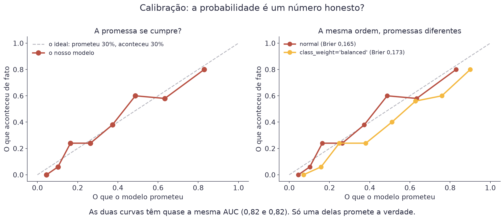
| O modelo prometeu | Cancelaram de fato |
|---|---|
| 4,5% | 0,0% |
| 10,2% | 6,0% |
| 16,4% | 24,0% |
| 26,4% | 24,0% |
| 37,3% | 38,0% |
| 48,7% | 60,0% |
| 63,4% | 58,0% |
| 83,0% | 80,0% |
Não é perfeito, e é bom o suficiente. Repare que as duas piores linhas são as de 16,4% e 48,7%, e que cada faixa dessas tem só cinquenta clientes: com tão poucos, o "aconteceu" balança sozinho. É o mesmo motivo pelo qual você não julga uma moeda por dez lançamentos.
A regressão logística costuma sair bem calibrada de fábrica, porque a função de perda que ela minimiza pune exatamente a probabilidade errada.
| Símbolo | Significado |
|---|---|
pᵢ |
a probabilidade que o modelo deu ao cliente i |
yᵢ |
o que aconteceu: 1 se cancelou, 0 se ficou |
| resultado | quanto menor, melhor; 0 seria a perfeição |
É o MSE da Aula 1, aplicado à probabilidade. O nosso dá 0,165. Ele sozinho não diz muito; ele serve para comparar duas versões do mesmo modelo.
Aqui está a demonstração que vale a seção inteira. Treinamos o mesmo
modelo com class_weight="balanced", uma opção comum para dar mais peso à
classe minoritária:
| AUC | Brier | Probabilidade média | |
|---|---|---|---|
| Normal | 0,8233 | 0,165 | 0,363 |
class_weight="balanced" |
0,8229 | 0,173 | 0,457 |
| A verdade | 0,362 |
A AUC é praticamente idêntica: a ordenação não mudou nada. Mas a probabilidade média saltou de 0,363 para 0,457, enquanto a taxa real de cancelamento é 0,362. O segundo modelo passou a achar que quase metade da base vai embora.
Se você usar esse modelo para ordenar uma lista de ligações, tanto faz. Se usar para calcular quanto dinheiro está em risco, ele erra em 26%.
Atenção
Erro do dia
Usar class_weight="balanced", reamostragem ou SMOTE e depois tratar a
saída como probabilidade. Essas técnicas mudam de propósito a proporção de
classes que o modelo enxerga, e a probabilidade sai inflada. Elas não são
erradas: erradas são as contas de dinheiro feitas em cima delas.
O conserto se chama recalibração, e no scikit-learn é o
CalibratedClassifierCV. Um teste rápido antes: compare a probabilidade
média prevista com a taxa real. Se as duas não baterem, o modelo não está
calibrado.
Agora dá para fechar a decisão que ficou em aberto. Suponha, para o Clube:
| Erro | Custo |
|---|---|
| Falso positivo: cupom para quem ia ficar | R$ 20 |
| Falso negativo: cliente que foi embora | R$ 300 |
Com esses dois números, escolher o limiar deixa de ser opinião. Para cada limiar, conte os dois erros e some o prejuízo:
| Símbolo | Significado |
|---|---|
FP |
quantos falsos positivos aquele limiar produz |
FN |
quantos falsos negativos |
| resultado | o prejuízo total, em reais |
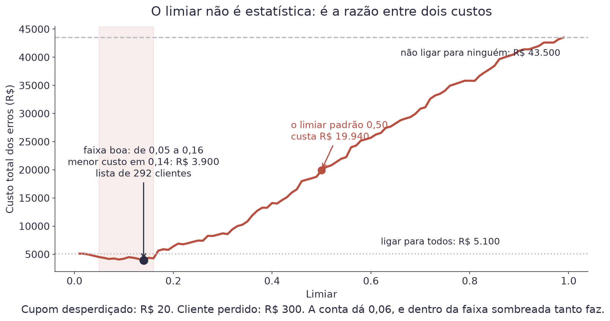
| Estratégia | Lista | Custo |
|---|---|---|
| Não ligar para ninguém | 0 | R$ 43.500 |
| Limiar padrão de 0,50 | 118 | R$ 19.940 |
| Melhor limiar (0,14) | 292 | R$ 3.900 |
| Ligar para todo mundo | 400 | R$ 5.100 |
Trocar 0,50 por 0,14 economiza R$ 16.040, e nenhuma linha do modelo mudou. Só a régua de decisão.
Existe até uma conta fechada para o limiar ideal:
| Símbolo | Significado |
|---|---|
custo_FP |
o preço de acusar quem ia ficar: R$ 20 |
custo_FN |
o preço de deixar passar quem foi embora: R$ 300 |
| resultado | o limiar a partir do qual vale a pena agir |
A leitura em português: aja sempre que a chance de perder o cliente valer mais que o preço do cupom. Com 20 e 300, ela dá 0,06. O mínimo que medimos caiu em 0,14, e os dois concordam mais do que parece: qualquer limiar entre 0,05 e 0,16 custa entre R$ 3.900 e R$ 4.500. A faixa é plana, e é isso que você leva para a reunião, não a segunda casa decimal.
Repare na última linha da tabela, que é desconfortável e verdadeira. Ligar para todo mundo custa R$ 5.100, quase tão bem quanto o modelo. Quando um erro custa quinze vezes o outro, a decisão quase se resolve sozinha, e o modelo agrega pouco. Descobrir isso antes de construir o modelo economiza mais que o modelo.
Nota
Sobre estes números
Todos vêm dos mesmos 400 clientes com que o modelo treinou, então são um pouco otimistas. Medimos a diferença: separando 30% dos clientes, a AUC cai de 0,83 no treino para 0,80 no teste. Pequena aqui, e a Aula 2 mostra por que ela nem sempre é.
O teste mais honesto de que você entendeu é tentar explicar sem ler. Feche esta página e responda em voz alta, como se explicasse para um colega. Onde travar, é ali que falta entender: volte à seção.
| Conceito | O que significa |
|---|---|
| Classificação | prever uma categoria em vez de um número |
| Sigmoide | função em S que transforma qualquer número em algo entre 0 e 1 |
z |
a soma de sempre, w₀ + w₁x₁ + ..., antes da sigmoide |
| Chance (odds) | p / (1 − p): quantas vezes cancelar é mais provável que ficar |
e elevado a wⱼ |
o fator que multiplica a chance quando xⱼ sobe 1 |
| Limiar | o ponto de corte que transforma probabilidade em decisão |
| Matriz de confusão | as quatro caixas: VP, FP, FN, VN |
| Acurácia | fração de acertos, enganosa quando uma classe domina a outra |
| Precisão | dos apontados, quantos eram de verdade |
| Recall | dos que eram de verdade, quantos o modelo apontou |
| F1 | um número só, que só sobe se precisão e recall subirem |
| TPR e FPR | dos que saíram quantos peguei; dos que ficaram quantos acusei |
| Curva ROC | todos os limiares num gráfico só |
| AUC | a chance de o modelo ordenar certo um par sorteado |
| Calibração | a probabilidade prometida acontece na frequência prometida |
| Brier | o MSE da probabilidade: mede calibração num número |
| Limiar por custo | escolher o corte pela razão entre o custo dos dois erros |
assinaturas.csvSe ainda não sabe como abrir o notebook, veja Antes de começar primeiro.
LogisticRegression no scikit-learn: a classe usada no notebook desta aula.CalibratedClassifierCV.Muitos problemas de previsão não são "prever um valor a partir de outro". São "prever o futuro de algo que muda com o tempo". Vendas de uma loja, número de acessos a um site, temperatura de uma cidade: tudo isso é uma série temporal.
| Aula | Conteúdo | Status |
|---|---|---|
| Aula 4 — Conceitos de Séries Temporais | Tendência, sazonalidade e ruído, previsões de referência e o corte no tempo | Disponível |
| Aula 5 — Séries Temporais com Prophet | Tendência, sazonalidades e feriados estimados por uma biblioteca, e o intervalo de incerteza | Disponível |
Nota
O que você leva desta aula
Você vai aprender a ler um gráfico ao longo do tempo, separando o que ele tem de tendência, de padrão que se repete e de ruído. Vai aprender também a fazer três previsões sem modelo nenhum, e a medir qualquer previsão sem enganar a si mesmo.
Uma cafeteria perto de escritórios abre todo dia e precisa decidir quanto comprar de leite, quantos pães encomendar e quantas pessoas escalar. Errar para cima é desperdício. Errar para baixo é cliente indo embora.
A pergunta é simples: quanto vamos vender amanhã? A diferença para as aulas anteriores é que agora a ordem dos dados importa. O que aconteceu ontem ajuda a explicar hoje, e uma linha da tabela não pode trocar de lugar com outra.
Isso é uma série temporal: uma sequência de valores medidos ao longo do tempo, em intervalos regulares. Vendas por dia, acessos por hora, temperatura por minuto.
O dataset desta aula tem 1.096 dias de vendas, de janeiro de 2022 a dezembro de 2024.
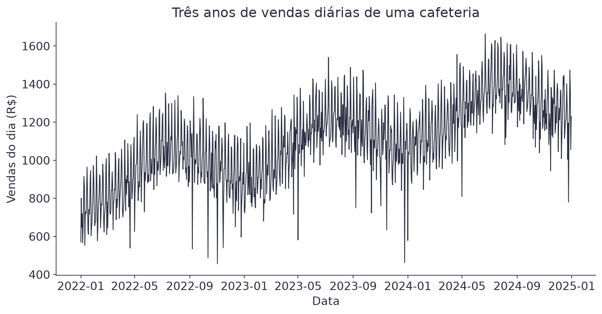
Toda série temporal pode ser lida como uma soma de peças. As três que importam nesta aula:
Ampliando doze semanas, dá para ver as três peças separadas:
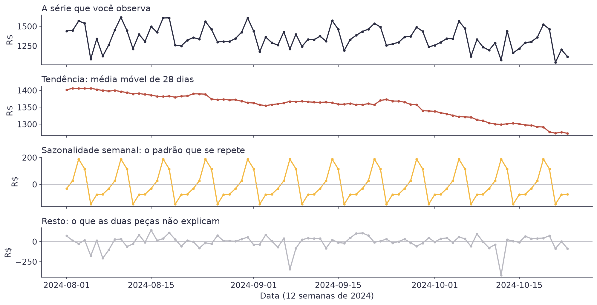
Repare no último painel. Aqueles dois mergulhos fundos não são ruído: são feriados, quando os escritórios fecham e a cafeteria vende R$ 719 em vez dos R$ 1.109 de um dia comum.
Como se separa a tendência do resto? A ferramenta mais simples é a média móvel: em vez de olhar o valor de cada dia, você olha a média dos últimos dias.
| Símbolo | Significado |
|---|---|
k |
o tamanho da janela: quantos dias entram na média |
t |
o dia que você está olhando |
yₜ₋ᵢ |
o valor de i dias atrás |
MMₖ(t) |
a média móvel de k dias, no dia t |
Exemplo com uma janela de 3 dias. Se as vendas foram R$ 900, R$ 1.100 e
R$ 1.000, a média móvel do terceiro dia é (900 + 1.100 + 1.000) / 3 = 1.000.
A janela decide o que você enxerga. Uma janela de 7 dias apaga a diferença entre os dias da semana e deixa o mês aparecer. Uma de 30 dias apaga também o mês e deixa só o rumo do ano.
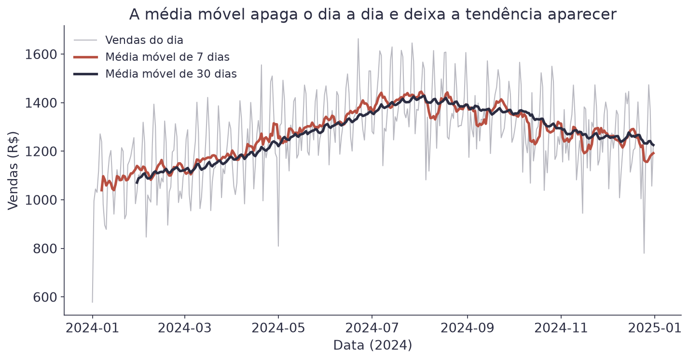
Uma janela de 7 dias é a escolha natural aqui, porque a sazonalidade principal é semanal. A regra vale em geral: use uma janela do tamanho do ciclo que você quer apagar.
Vale olhar a sazonalidade semanal de frente. Basta tirar a média de cada dia da semana ao longo dos três anos.
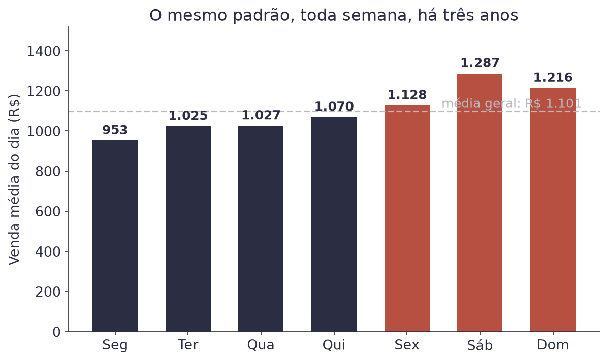
| Dia | Venda média |
|---|---|
| Segunda | R$ 953 |
| Terça | R$ 1.025 |
| Quarta | R$ 1.027 |
| Quinta | R$ 1.070 |
| Sexta | R$ 1.128 |
| Sábado | R$ 1.287 |
| Domingo | R$ 1.216 |
Esse desenho é estável, e é exatamente por isso que ele serve para prever. Um padrão que se repete há três anos provavelmente se repete na semana que vem.
Aqui mora o erro mais caro do assunto inteiro.
Nas aulas anteriores, separar treino e teste era sorteio: pegue 80% das linhas ao acaso para treinar e 20% para testar. Em série temporal isso está errado. Sortear linhas significa treinar com dados de dezembro para prever novembro, e ninguém prevê o passado.
O corte é sempre no tempo. O treino é tudo até uma data, e o teste é o que vem depois.
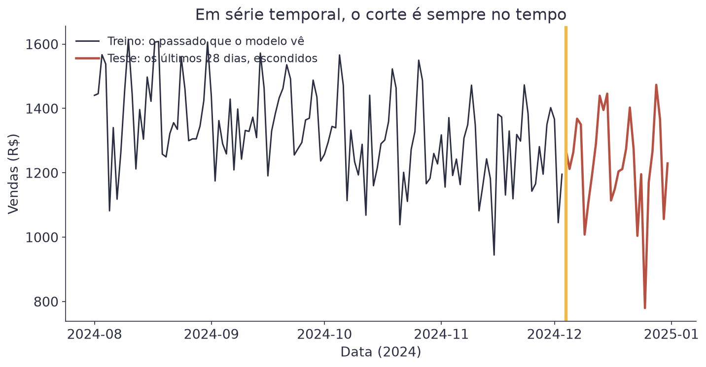
Atenção
Erro do dia
Usar train_test_split do scikit-learn numa série temporal, com o
shuffle no valor padrão. O código roda, as métricas saem ótimas, e o
resultado não vale nada: o modelo viu o futuro durante o treino. Isso se
chama vazamento de dados (data leakage), e o sintoma é sempre o
mesmo. Um desempenho excelente no teste que não se repete na vida real.
Antes de treinar qualquer coisa, faça as previsões mais burras possíveis. Elas são a régua: um modelo que não vence essas três não está pagando o próprio trabalho.
| Previsão de referência | Regra |
|---|---|
| Ingênua (naïve) | amanhã vai ser igual a hoje |
| Média móvel | amanhã vai ser a média dos últimos 7 dias |
| Sazonal ingênua | amanhã vai ser igual ao mesmo dia da semana passada |
As três, escritas como fórmula:
| Símbolo | Significado |
|---|---|
ŷₜ₊₁ |
a previsão para o dia seguinte |
yₜ |
o valor observado hoje |
yₜ₋₆ |
o valor de seis dias atrás, o mesmo dia da semana passada |
Exemplo: no sábado a cafeteria vendeu R$ 1.300. Para o domingo, a ingênua prevê os mesmos R$ 1.300. A sazonal ingênua prevê o que o domingo passado vendeu.
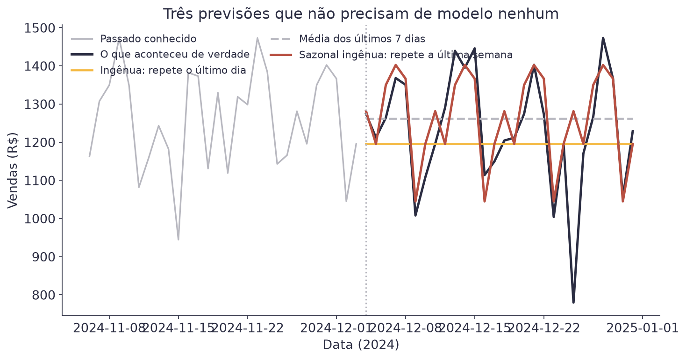
Nos últimos 28 dias, guardados como teste:
| Previsão | MAE | RMSE | MAPE |
|---|---|---|---|
| Ingênua | R$ 121,28 | R$ 156,45 | 10,3% |
| Média de 7 dias | R$ 115,93 | R$ 154,73 | 10,4% |
| Sazonal ingênua | R$ 63,78 | R$ 110,80 | 6,0% |
A sazonal ingênua erra quase metade das outras duas, e não usa modelo nenhum: ela só repete a última semana. Qualquer modelo desta série tem que começar batendo R$ 63,78 de MAE.
MAE, RMSE e MAPE você já conhece da Aula 1. Aqui o MAPE ganha uma importância extra, e vale relembrar por quê: ele mede o erro como fração do valor real, e por isso compara períodos de movimento diferente.
| Símbolo | Significado |
|---|---|
yₜ |
o valor real no dia t |
ŷₜ |
o valor previsto para o dia t |
| barras verticais | valor absoluto: o erro sempre conta positivo |
| resultado | o erro médio em porcentagem do valor real |
Exemplo: um erro de R$ 60 num dia de R$ 1.200 é 5%. O mesmo erro de R$ 60 num dia de R$ 600 é 10%. O MAPE conta o segundo como pior, e é isso que o torna útil para comparar períodos de movimento diferente.
O cuidado com o MAPE: ele explode quando o valor real chega perto de zero. Numa série que passa por zero, use MAE.
O teste mais honesto de que você entendeu é tentar explicar sem ler. Feche esta página e responda em voz alta, como se explicasse para um colega. Onde travar, é ali que falta entender: volte à seção.
| Conceito | O que significa |
|---|---|
| Série temporal | valores medidos ao longo do tempo, em que a ordem importa |
| Tendência | para onde a série caminha no longo prazo |
| Sazonalidade | padrão que se repete em intervalo fixo (semana, ano) |
| Média móvel | média dos últimos k valores, usada para suavizar |
| Corte no tempo | treino é o passado, teste é o futuro. Nunca sorteio |
| Vazamento de dados | quando o modelo enxerga o futuro durante o treino |
| Previsão ingênua | amanhã é igual a hoje |
| Sazonal ingênua | amanhã é igual ao mesmo dia da semana passada |
| MAPE | o erro médio em porcentagem do valor real |
vendas_cafeteria.csvSe ainda não sabe como abrir o notebook, veja Antes de começar primeiro.
rolling no pandas: a função que calcula médias móveis em uma linha.Nota
O que você leva desta aula
Você vai treinar um modelo de série temporal em três linhas de código, ler as peças que ele estimou sozinho, ensinar a ele o calendário de feriados, e comparar o resultado com a régua da aula passada. Também vai aprender a ler o intervalo de incerteza sem se enganar.
Na aula passada, a melhor previsão para a cafeteria era repetir a semana anterior. Ela erra R$ 63,78 por dia, em média, e não custa nada. É a régua.
O problema é que ela não sabe nada. Não sabe que o negócio cresce, que julho vende mais que janeiro, nem que no Natal a rua fica vazia. Ela só copia.
Esta aula troca a cópia por um modelo que estima cada uma dessas peças separadamente. O Prophet é uma biblioteca feita para isso, criada por uma equipe da Meta, e pensada para séries de negócio: vendas, acessos, pedidos. É a ferramenta que resolve a maior parte dos casos reais sem exigir doutorado em estatística.
A ideia é a mesma da Aula 4, agora escrita como modelo.
| Símbolo | Significado |
|---|---|
y(t) |
o valor da série no dia t |
g(t) |
a tendência: para onde o negócio caminha |
s(t) |
as sazonalidades: o padrão da semana e o do ano |
h(t) |
os feriados e eventos especiais |
εₜ |
o resto, o que nenhuma das peças explica |
Exemplo, para uma quarta-feira de julho de 2025: a tendência dá R$ 1.320,
a sazonalidade semanal tira R$ 15, a anual soma R$ 110 e não há feriado. A
previsão é 1.320 − 15 + 110 = 1.415 reais.
Repare que é uma soma, como todos os modelos do curso. A diferença é que cada parcela agora é uma função do tempo, e não um peso vezes uma coluna.
O Prophet só aceita a tabela com duas colunas, e com estes nomes exatos:
| Coluna | O que é |
|---|---|
ds |
a data (datestamp) |
y |
o valor que você quer prever |
Renomear as colunas é o primeiro passo de qualquer projeto com Prophet, e é onde mais gente trava na primeira vez.
serie = dados.rename(columns={"data": "ds", "vendas": "y"})
modelo = Prophet()
modelo.fit(treino)
futuro = modelo.make_future_dataframe(periods=28)
previsao = modelo.predict(futuro)
make_future_dataframe cria a tabela de datas que você quer prever,
incluindo o histórico. predict devolve uma tabela com uma linha por dia
e várias colunas, das quais três importam agora: yhat (a previsão),
yhat_lower e yhat_upper (as bordas do intervalo de incerteza).
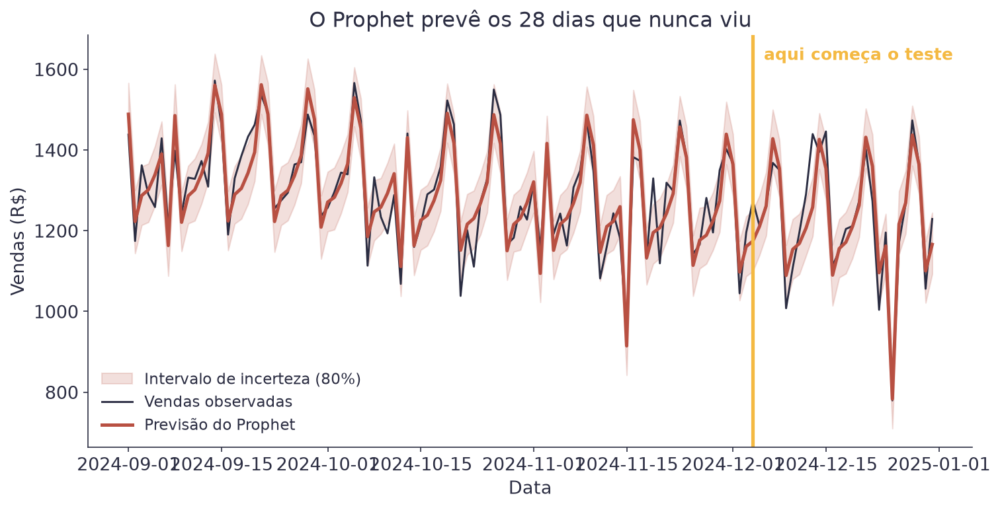
A parte mais útil do Prophet não é a previsão: é poder abrir o modelo e olhar cada peça separada.
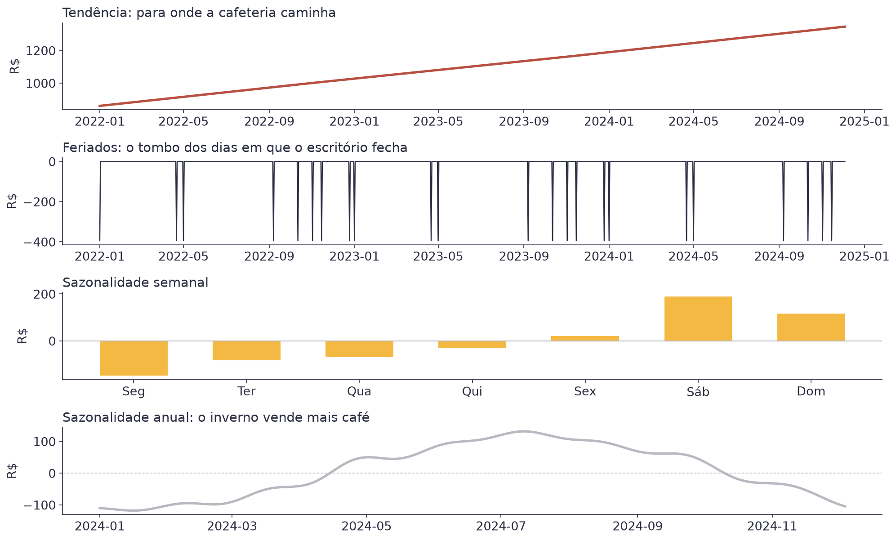
Compare com o que você já sabia da aula passada. A tendência sobe. O sábado é o melhor dia e a segunda é o pior. O meio do ano vende mais que o começo. O modelo chegou nisso sozinho, sem ninguém contar.
Esse quadro é o que você leva para uma reunião. Ele responde perguntas de negócio ("o crescimento continua?", "vale abrir aos domingos?") melhor do que qualquer número único de previsão.
Uma coisa o Prophet não descobre sozinho: o calendário. Ele não sabe que 25 de dezembro é diferente dos outros dias.
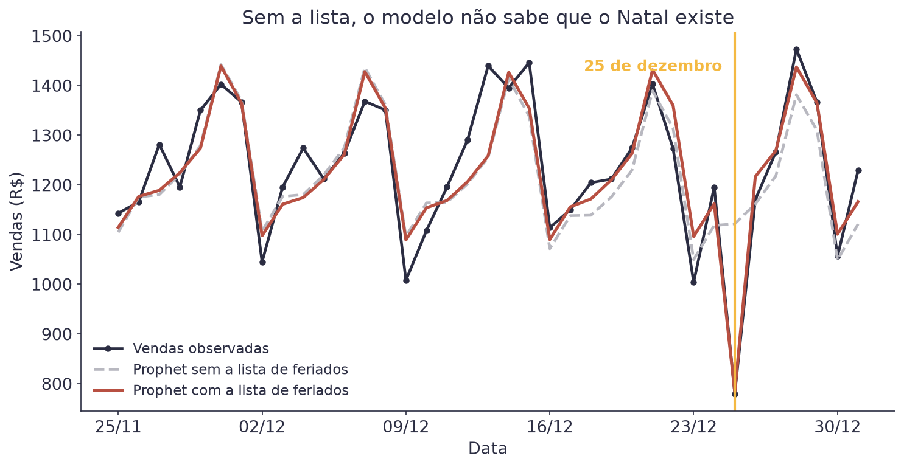
Para ensinar o calendário, você entrega uma tabela de feriados:
feriados = pd.DataFrame({
"holiday": "feriado_nacional",
"ds": datas_dos_feriados,
})
modelo = Prophet(holidays=feriados)
Essa lista pode ir além do calendário oficial. Promoções, greves, jogos importantes, qualquer data que a sua série "sente" entra ali.
Agora o teste que importa, nos mesmos 28 dias escondidos da aula passada:
| Previsão | MAE | RMSE | MAPE |
|---|---|---|---|
| Ingênua | R$ 121,28 | R$ 156,45 | 10,3% |
| Média de 7 dias | R$ 115,93 | R$ 154,73 | 10,4% |
| Sazonal ingênua (a régua) | R$ 63,78 | R$ 110,80 | 6,0% |
| Prophet, sem feriados | R$ 64,54 | R$ 92,91 | 5,7% |
| Prophet, com feriados | R$ 43,73 | R$ 60,22 | 3,5% |
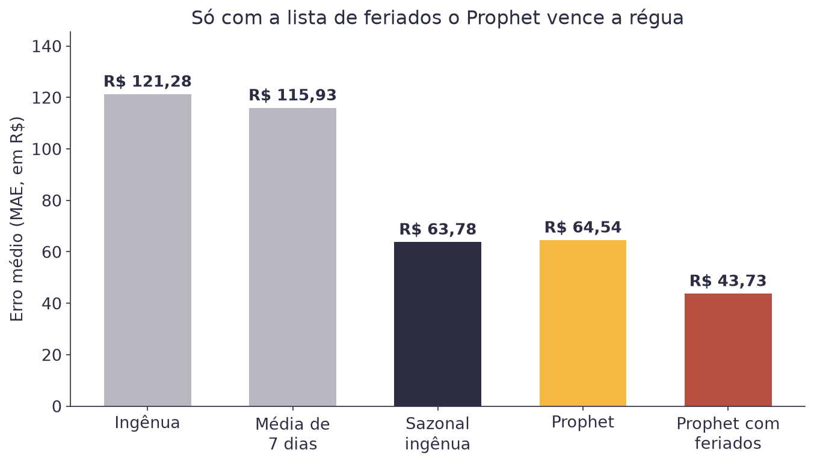
Leia a tabela com atenção, porque ela guarda a lição da aula. O Prophet recém-instalado, sem nenhum ajuste, empata com a previsão que só copia a semana anterior. O que faz ele ganhar é a lista de feriados, que não vem do modelo: vem de você, que conhece o negócio.
O RMSE conta uma parte adicional da história. Mesmo empatado no MAE, o Prophet sem feriados já tem RMSE bem menor (R$ 92,91 contra R$ 110,80). Ele erra parecido na média, mas erra menos nos dias ruins.
Atenção
Erro do dia
Rodar o Prophet, ver um gráfico bonito com faixa de incerteza e concluir que o modelo é bom, sem nunca comparar com a régua. Um gráfico de previsão sempre parece convincente. A régua é o que separa um modelo útil de um enfeite caro.
Toda linha de yhat vem acompanhada de yhat_lower e yhat_upper. Eles
formam a faixa em torno da previsão, e por padrão cobrem 80% dos casos.
É o mesmo intervalo de predição da Aula 1, com dois ajustes. Lá a faixa
era ŷ ± 2s, com uma largura só para toda a reta; aqui ela muda de dia
para dia, e a promessa é 80% em vez de 95%. A pergunta que ela responde
continua sendo a mesma: onde cai um dia, e não a média de muitos.
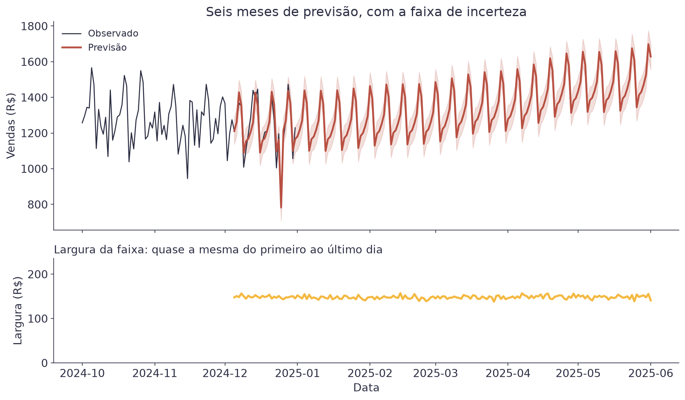
A faixa soma duas incertezas. Uma é o barulho do dia a dia, que não some nunca: dois sábados de julho não vendem exatamente o mesmo. A outra é a dúvida sobre para onde a tendência vai, e essa cresce com o horizonte.
Nesta série, a primeira domina. A tendência é tão regular que a dúvida sobre ela pesa pouco, e por isso a faixa quase não abre, mesmo prevendo seis meses à frente. Em uma série com tendência instável, a faixa abriria bem mais.
Duas leituras práticas. A primeira: a faixa não é garantia. No nosso teste, 75% dos dias caíram dentro dela, com a faixa prometendo 80%. É o esperado, e serve de aviso: um dia em cada cinco fica de fora.
A segunda, mais importante: a faixa só conhece o que já aconteceu. Ela não tem como prever um concorrente novo na esquina, uma greve de ônibus ou uma obra na rua. O risco de prever seis meses à frente vem desses eventos, não da largura da faixa.
Use a faixa para conversar sobre risco. "A previsão é R$ 1.200, mas pode ficar entre R$ 1.130 e R$ 1.280" é uma frase muito mais útil para quem vai comprar leite do que um número solto.
O Prophet não obriga a tendência a ser uma reta. Ele permite que ela mude de inclinação em alguns pontos, chamados pontos de mudança (changepoints).
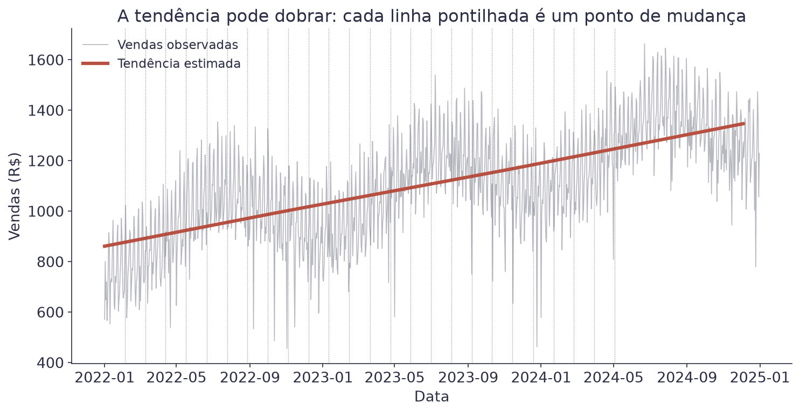
Esse é o motivo de o Prophet lidar bem com negócios que mudam de patamar. Uma loja que abriu uma filial, um site que ganhou tráfego depois de uma campanha: a tendência dobra, e o modelo acompanha.
O cuidado é o oposto. Se você deixar o modelo dobrar demais, ele começa a
seguir o ruído e a previsão fica instável. O parâmetro
changepoint_prior_scale controla essa liberdade: quanto maior, mais o
modelo aceita dobrar.
Ele resolve a maioria dos casos de negócio, mas não todos.
| Situação | Por quê |
|---|---|
| Séries muito curtas | com menos de dois ciclos completos, não há sazonalidade para estimar |
| Dados de alta frequência com muita estrutura | séries de segundos ou de mercado financeiro pedem outras ferramentas |
| Quando outras variáveis explicam mais que o tempo | se preço e promoção mandam mais que o calendário, um modelo de regressão pode servir melhor |
O teste mais honesto de que você entendeu é tentar explicar sem ler. Feche esta página e responda em voz alta, como se explicasse para um colega. Onde travar, é ali que falta entender: volte à seção.
| Conceito | O que significa |
|---|---|
ds e y |
os dois nomes de coluna que o Prophet exige |
fit |
treina o modelo no passado |
make_future_dataframe |
cria a tabela de datas a prever |
predict |
devolve yhat, yhat_lower e yhat_upper |
| Componentes | tendência, sazonalidades e feriados, cada um em um gráfico |
holidays |
a tabela de datas especiais que você entrega ao modelo |
| Intervalo de incerteza | a faixa que cobre 80% dos casos, e não conhece eventos novos |
| Ponto de mudança | onde a tendência tem permissão para dobrar |
| A régua | as previsões de referência da Aula 4, que o modelo tem que vencer |
vendas_cafeteria.csvO notebook desta aula instala o Prophet na primeira célula, com
pip install prophet. É a única aula do curso que instala biblioteca:
todas as outras usam só o que já vem no Colab.
Até aqui, cada aula ensinou uma peça isolada. Este módulo junta as peças: você vai construir, em aula, um sistema de verdade que usa um classificador e um modelo de previsão trabalhando juntos.
| Aula | Conteúdo | Status |
|---|---|---|
| Aula 6 — Um Sistema de Ponta a Ponta | Projeto guiado: classificador, previsão e uma tela em Streamlit, rodando na sua máquina | Disponível |
Nota
O que você leva desta aula
Você vai construir, do zero, um sistema que junta um classificador e uma previsão de série temporal numa tela só. Vai rodar tudo na sua máquina, no VS Code, e sair da aula com um painel funcionando que qualquer pessoa da empresa conseguiria usar.
Nas cinco aulas anteriores você treinou modelos em notebooks. O notebook é ótimo para aprender e para experimentar, mas ninguém entrega um notebook para a equipe de atendimento.
Um modelo só vira útil quando alguém que não sabe programar consegue fazer uma pergunta e receber uma resposta. É disso que esta aula trata: o caminho do modelo até a decisão.
O negócio da vez é o Clube do Café, uma assinatura mensal de café em grãos. Ele tem duas perguntas, e você já sabe responder as duas:
| Pergunta | Modelo | Aula |
|---|---|---|
| Quais assinantes correm risco de cancelar? | Regressão logística | Aula 3 |
| Quanto o clube vai faturar no próximo mês? | Prophet | Aula 5 |
O que muda hoje é o entorno. As duas respostas vão morar na mesma tela, e a tela vai rodar no seu computador.
Esta é a ideia que organiza a aula inteira.
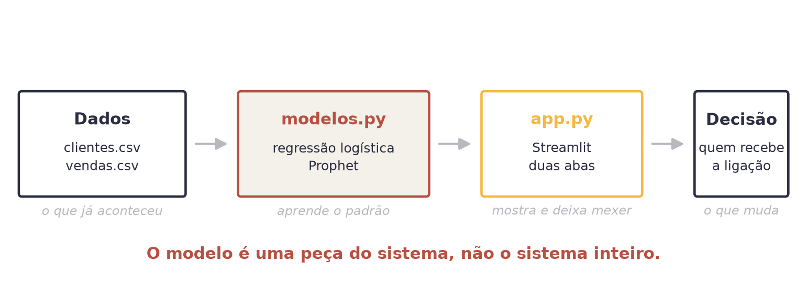
Repare que o modelo ocupa uma caixa das quatro. Nos projetos reais essa proporção se mantém: a maior parte do trabalho está em levar dados até o modelo e em levar a resposta do modelo até quem decide.
O sistema desta aula tem quatro arquivos, e cada um faz uma coisa só.
| Arquivo | Responsabilidade |
|---|---|
dados/clientes.csv e dados/vendas.csv |
o que já aconteceu |
modelos.py |
carrega, treina e prevê. Não sabe nada de tela |
app.py |
desenha a tela. Não sabe nada de modelo |
requirements.txt |
as quatro bibliotecas que o sistema usa |
Essa separação não é frescura. Quando a previsão sai errada, você sabe em que arquivo procurar. Quando a tela precisa de um botão novo, você mexe em um arquivo só.
A instalação é a parte mais chata e a mais fácil de resolver com antecedência. Faça isso antes, com calma.
Você precisa de Python 3.10 ou mais novo e do VS Code. Para
conferir a versão do Python, abra o terminal e digite python --version
(no macOS e no Linux, às vezes é python3 --version).
Depois baixe a pasta do sistema, crie o ambiente virtual e instale as bibliotecas:
python -m venv .venv
No Windows, ative com .venv\Scripts\activate. No macOS e no Linux, com
source .venv/bin/activate. Deu certo quando aparece (.venv) no começo
da linha.
pip install -r requirements.txt
A instalação leva de dois a cinco minutos. O Prophet é o mais demorado.
Atenção
Erro do dia
Rodar pip install sem o ambiente virtual ativo, e depois streamlit
responder command not found. O sintoma é sempre esse, e a causa quase
sempre é a mesma: a linha do terminal não começa com (.venv). Ative o
ambiente e repita. Em aula, esse é o problema número um.
O modelos.py inteiro cabe numa tela. Ele tem oito funções curtas, e
nenhuma delas faz mais de uma coisa.
| Função | O que faz |
|---|---|
carregar_clientes |
lê o CSV de assinantes |
carregar_vendas |
lê o CSV de receita diária |
preparar_tabela |
transforma o plano em colunas de 0 e 1 |
treinar_classificador |
ajusta a regressão logística |
calcular_risco |
devolve a probabilidade de cancelar de cada cliente |
risco_de_um_cliente |
faz o mesmo para um cliente digitado na tela |
treinar_previsor |
ajusta o Prophet, com a lista de feriados |
prever |
devolve a previsão dos próximos dias |
Nada aqui é novo. É o mesmo código das Aulas 3 e 5, agora com nome, guardado num arquivo em vez de espalhado por células de notebook.
Uma linha merece atenção, porque ela resolve um problema clássico:
tabela = tabela.reindex(columns=modelo.feature_names_in_, fill_value=0)
Quando a tela manda um cliente só, o get_dummies cria colunas para o
plano daquele cliente, e só. O reindex põe as colunas na mesma ordem do
treino e preenche com zero o que faltar. Sem essa linha, o modelo recebe as
colunas trocadas e devolve um número sem sentido.
O classificador devolve uma probabilidade. Quem transforma probabilidade em lista de ligações é o limiar, e no painel ele é um controle deslizante.
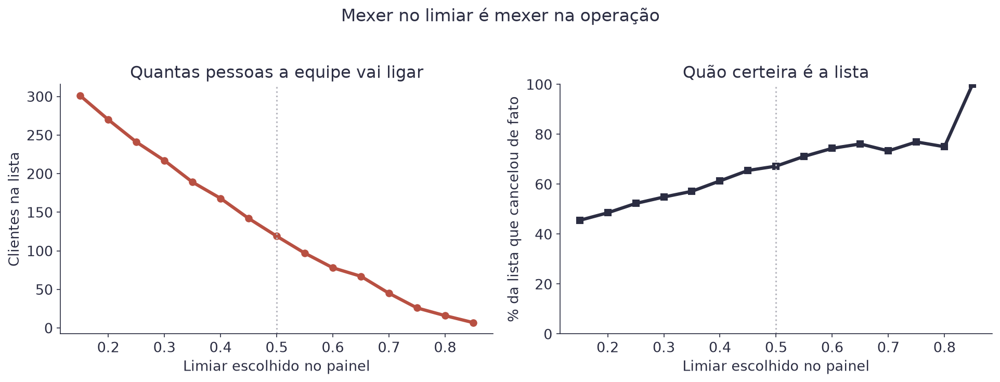
Com os 400 assinantes do Clube do Café:
| Limiar | Clientes na lista | Receita mensal em risco | Da lista, cancelaram de fato |
|---|---|---|---|
| 0,40 | 168 | R$ 13.265 | 61% |
| 0,50 | 119 | R$ 9.748 | 67% |
Suba o limiar e a lista encolhe, mas fica mais certeira. Desça e você alcança mais gente que ia cancelar, ao custo de ligar para quem ia ficar.
Por isso o limiar mora na tela, e não escondido no código. Quem decide o tamanho da operação é a pessoa que vai fazer as ligações, não o modelo.
O segundo modelo é o Prophet da Aula 5, treinado nos 731 dias de receita do clube, com a lista de feriados.
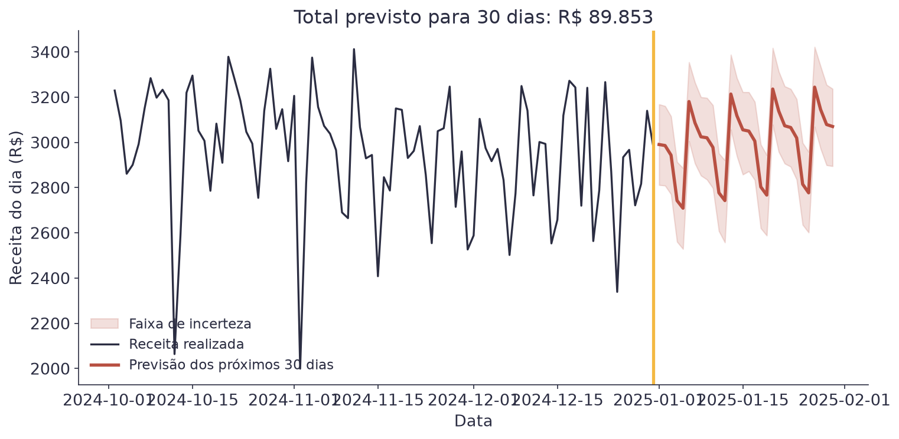
O painel resume isso em três números: R$ 89.853 previstos para os próximos 30 dias, R$ 2.995 por dia em média, e R$ 84.475 no pior caso da faixa. O terceiro é o que interessa para quem vai assumir um compromisso de compra.
O app.py usa seis comandos do Streamlit. Seis. É todo o vocabulário que
esta aula precisa.
| Comando | O que faz |
|---|---|
st.title e st.subheader |
escrevem títulos |
st.tabs |
cria as abas |
st.slider e st.selectbox |
pedem um número e uma opção |
st.metric |
mostra um número grande, com rótulo |
st.dataframe |
mostra uma tabela |
st.line_chart |
desenha um gráfico de linha |
O Streamlit funciona de um jeito diferente do que você talvez espere: toda vez que alguém mexe num controle, ele roda o arquivo inteiro de novo, de cima para baixo. É isso que faz a tela reagir sem você escrever nada de interface.
Isso traz um problema óbvio: treinar os dois modelos a cada clique deixaria o painel lento. A solução é uma linha:
@st.cache_resource
def preparar_sistema():
...
Com ela, o Streamlit guarda o resultado e só executa a função na primeira vez. Os cliques seguintes reaproveitam os modelos já treinados.
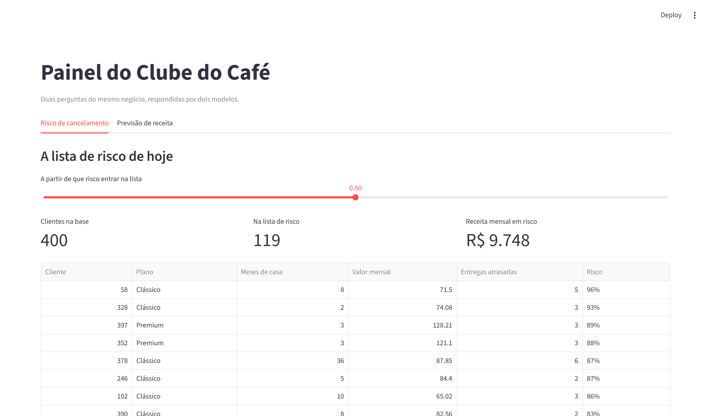
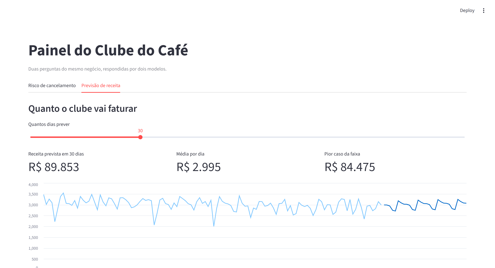
O painel funciona, mas ele não está pronto para uma empresa depender dele. Vale saber a diferença.
| O que falta | Por quê |
|---|---|
| Retreinar sozinho | os modelos aprenderam com os dados de hoje. Daqui a três meses, o mundo mudou |
| Guardar o que previu | sem registro, você nunca descobre se as previsões estavam certas |
| Monitorar a entrada | se o CSV chegar com uma coluna a menos, o painel quebra na cara do usuário |
| Rodar em algum lugar | hoje ele roda na sua máquina. Para a equipe usar, precisa de um servidor |
| Controlar quem vê | a lista tem nome de cliente e valor de contrato |
Nenhum desses itens é difícil sozinho. Juntos, eles são a diferença entre um protótipo e um produto, e é neles que mora a maior parte do trabalho de quem faz sistemas de dados.
O teste mais honesto de que você entendeu é tentar explicar sem ler. Feche esta página e responda em voz alta, como se explicasse para um colega. Onde travar, é ali que falta entender: volte à seção.
reindex corrige, e o que aconteceria sem ela?| Conceito | O que significa |
|---|---|
Ambiente virtual (.venv) |
uma caixa de bibliotecas só deste projeto |
requirements.txt |
a lista de bibliotecas, para qualquer máquina repetir |
| Separação de arquivos | modelos.py pensa, app.py mostra |
streamlit run app.py |
o comando que sobe o painel |
| Reexecução | a cada clique, o Streamlit roda o arquivo inteiro de novo |
@st.cache_resource |
guarda o modelo treinado entre uma execução e outra |
| Limiar na tela | quem decide o tamanho da operação é quem opera |
| Protótipo x produto | falta retreino, registro, monitoramento e servidor |
projeto-aula-06/README.md. Esta é a única aula sem slides: o próprio README do projeto guia a aula inteira, do setup ao último desafio.projeto-aula-06/clube_cafe_clientes.csv e clube_cafe_vendas.csvPara baixar o sistema sem instalar o Git, use o botão verde Code do
GitHub e escolha Download ZIP. Descompacte e abra a pasta
projeto-aula-06 no VS Code.
Uma rede neural é uma cadeia de modelos simples (parecidos com a regressão que você já aprendeu) empilhados uns sobre os outros. Este módulo mostra como essa cadeia aprende, e como ela enxerga uma imagem.
| Aula | Conteúdo | Status |
|---|---|---|
| Aula 7 — Fundamentos de Redes Neurais | Do neurônio artificial à primeira rede treinada com Keras | Disponível |
| Aula 8 — Redes Convolucionais | Convolução, filtros e pooling: como uma rede aprende a olhar uma foto | Disponível |
Nota
O que você leva desta aula
Você vai entender o que é um neurônio (spoiler: é a soma da Aula 2 com uma dobra em cima), por que empilhar neurônios resolve problemas que uma reta não resolve, e como treinar uma rede em cinco linhas de Keras.
O Clube do Café torra os próprios grãos. Cada torra tem dois botões: a temperatura do tambor e o tempo. Errar qualquer um dos dois estraga o lote.
Quente demais queima. Frio demais deixa o grão verde. Rápido demais não desenvolve o açúcar. Devagar demais amarga. O ponto bom fica numa faixa no meio, e é isso que o gráfico mostra:
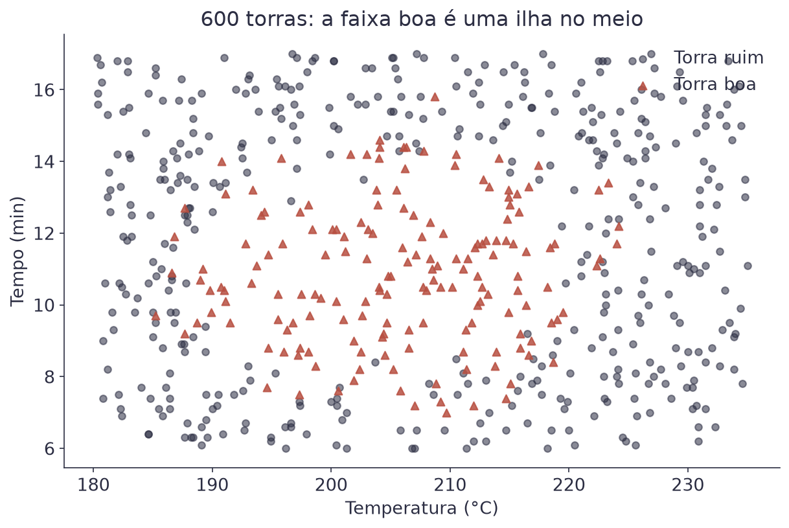
Olhe para essa figura e tente traçar uma reta que separe os triângulos dos círculos. Não existe. É essa impossibilidade que abre o assunto de hoje.
Vamos provar. Treine uma regressão logística nesses dados, do jeito da Aula 3, e olhe o que ela decide.
A regressão logística acertou 71,8% das torras. Parece razoável até você comparar com o modelo preguiçoso da Aula 3: como 71,8% das torras são ruins, responder "ruim" para todo mundo dá exatamente os mesmos 71,8%.
Ela não aprendeu nada. E não é culpa dela: a fronteira que ela sabe desenhar é uma reta, e nenhuma reta separa o dentro do fora de uma ilha.
A rede neural da direita, com duas camadas de 16 neurônios, chega a 91,8%. A diferença não está no esforço nem nos dados. Está no formato da fronteira que cada modelo consegue desenhar.
Aqui está a boa notícia: você já sabe o que é.
| Símbolo | Significado |
|---|---|
x₁, x₂ |
as entradas: temperatura e tempo |
w₁, w₂ |
os pesos, iguais aos das aulas de regressão |
w₀ |
o viés (bias), o mesmo termo independente de sempre |
f |
a função de ativação: a dobra |
a |
a saída do neurônio, que vira entrada do próximo |
Compare com a regressão logística da Aula 3: P = σ(w₀ + w₁x₁ + w₂x₂). É a
mesma conta. Um neurônio com ativação sigmoide é uma regressão
logística. Uma rede neural é um monte deles, empilhados.
Exemplo com números: se w₀ = −3, w₁ = 0,02, w₂ = 0,1, uma torra de
205 °C e 11 minutos dá −3 + 4,10 + 1,10 = 2,20 antes da ativação.
Se a ativação não existisse, empilhar camadas não adiantaria nada. Somar retas dá reta, e você voltaria ao problema do começo.
| Símbolo | Significado |
|---|---|
z |
o resultado da soma, antes da ativação |
max(0, z) |
devolve z se ele é positivo, e 0 se é negativo |
Exemplo: ReLU(2,20) = 2,20. ReLU(−1,4) = 0.
Não parece grande coisa, mas é o suficiente. Cada neurônio com ReLU introduz uma dobra na fronteira. Com dobras suficientes, a fronteira contorna qualquer formato. Repare no salto entre 2 e 8 neurônios: é ali que a fronteira deixa de ser uma reta.
Onde usar cada uma, na prática:
| Onde | Ativação | Por quê |
|---|---|---|
| Camadas do meio | ReLU | rápida, e é a dobra que cria o formato |
| Saída, para sim ou não | sigmoide | devolve probabilidade entre 0 e 1 |
| Saída, para um número | nenhuma | o valor sai como está |
modelo = keras.Sequential([
keras.layers.Input(shape=(2,)),
keras.layers.Dense(16, activation="relu"),
keras.layers.Dense(16, activation="relu"),
keras.layers.Dense(1, activation="sigmoid"),
])
Lendo de cima para baixo: entram 2 números, viram 16, viram 16 de novo, e
saem como 1 probabilidade. Dense quer dizer que todo neurônio da
camada recebe todas as saídas da camada anterior.
Essa rede tem 337 pesos. Você pode contar: 2×16+16 na primeira camada, 16×16+16 na segunda, 16×1+1 na saída. Cada um deles é um número que o treino vai ajustar, exatamente como ajustava os dois pesos da Aula 1.
Nada de novo aqui, e vale dizer isso em voz alta:
| Peça | Na Aula 1 | Agora |
|---|---|---|
| O que ajusta | 2 pesos | 337 pesos |
| Função de perda | MSE | log loss (a da Aula 3) |
| Como ajusta | gradiente descendente | gradiente descendente |
| A regra | w ← w − α · inclinação |
a mesma, para cada peso |
A perda usada para sim ou não é a entropia cruzada binária, que a Aula 3 já usava com outro nome:
| Símbolo | Significado |
|---|---|
yᵢ |
o rótulo real da torra i: 1 para boa, 0 para ruim |
ŷᵢ |
a probabilidade que a rede deu |
log |
o logaritmo, que castiga com força quem erra com confiança |
Exemplo: se a rede diz 0,9 para uma torra boa, a parcela dela é
−log(0,9) = 0,105. Se ela diz 0,1 para a mesma torra boa, a parcela vira
−log(0,1) = 2,303. Vinte e duas vezes pior.
A única novidade técnica é o nome do cálculo que distribui a culpa entre as camadas: retropropagação (backpropagation). Ela responde "o quanto cada um dos 337 pesos contribuiu para o erro" aplicando a regra da cadeia de trás para frente. O Keras faz isso sozinho, e neste curso você não vai implementá-la à mão.
Três palavras que aparecem em toda saída de treino:
| Palavra | O que é |
|---|---|
| Lote (batch) | quantos exemplos entram por vez antes de ajustar os pesos |
| Época (epoch) | uma passada completa por todos os exemplos |
| Passo | um ajuste dos pesos, feito uma vez por lote |
Com 600 torras e lote de 32, uma época tem 19 passos. Em 120 épocas, são 2.280 ajustes.
Repare que existem duas linhas em cada gráfico. A de treino usa as torras que a rede viu; a de validação usa 25% que ela nunca viu. Enquanto as duas caem juntas, está tudo bem.
Atenção
Erro do dia
Treinar sem normalizar as entradas. Aqui a temperatura vai a 235 e o tempo a 17: uma escala é catorze vezes a outra. A rede até aprende, mas devagar e mal, porque o gradiente fica dominado pela variável de número maior. A correção é uma linha, antes do treino: subtraia a média e divida pelo desvio padrão de cada coluna. Faça isso sempre em rede neural.
A rede venceu por 20 pontos aqui, mas isso não é regra.
| Situação | O que costuma ganhar |
|---|---|
| Fronteira reta, poucas variáveis | regressão logística, que é mais simples de explicar |
| Tabelas grandes, muitas colunas | árvores e florestas, que quase sempre batem redes |
| Imagem, áudio, texto | redes, com folga |
| Poucos dados (centenas de linhas) | modelos simples: rede grande decora |
A rede tem uma desvantagem que importa: ela não te dá um coeficiente para interpretar. Na Aula 2 você lia "cada m² soma R$ 25". Aqui não existe frase equivalente. Você ganhou formato e perdeu explicação.
O teste mais honesto de que você entendeu é tentar explicar sem ler. Feche esta página e responda em voz alta, como se explicasse para um colega. Onde travar, é ali que falta entender: volte à seção.
| Conceito | O que significa |
|---|---|
| Neurônio | a soma de pesos, seguida de uma ativação |
| Ativação | a dobra que permite fronteiras que não são retas |
| ReLU | negativo vira zero, positivo passa direto |
| Camada densa | todos os neurônios recebem todas as entradas |
| Retropropagação | o cálculo que distribui a culpa do erro entre os pesos |
| Época | uma passada por todos os exemplos |
| Lote | quantos exemplos entram antes de cada ajuste |
| Normalizar | pôr as colunas na mesma escala, antes de treinar |
| Curva de treino | o gráfico que você olha antes de acreditar no modelo |
torra_cafe.csvNota
O que você leva desta aula
Você vai entender por que a rede da Aula 7 é ruim para olhar fotos, o que um filtro 3×3 faz (com a conta na mão), e como montar uma rede convolucional que etiqueta roupa melhor usando quase metade dos pesos.
Um brechó online recebe milhares de fotos por semana. Alguém precisa etiquetar cada peça: isso é camiseta, isso é bota, isso é bolsa. Uma pessoa leva três segundos por foto e erra pouco. O problema é a escala.
Vamos construir o etiquetador. As fotos são as do Fashion-MNIST, um conjunto público de 70.000 fotos de roupa em dez categorias:
Antes de qualquer modelo, olhe o que existe ali de verdade.
Uma foto de 28 por 28 é uma tabela de 784 números. Nada além disso. O que você chama de "bico do tênis" é uma região onde alguns números vizinhos são altos ao mesmo tempo.
Guarde a palavra vizinhos. É nela que a aula inteira se apoia.
A rede densa espera uma linha de números, não uma tabela. Para alimentá-la, você achata (flatten) a foto: pega as 28 linhas e emenda uma na outra, formando uma fila de 784 entradas.
Aí está o problema. Depois de achatar, o pixel que ficava logo acima de outro vai parar 28 casas adiante na fila. Para a rede, os dois viraram entradas quaisquer, tão relacionadas quanto duas colunas de uma planilha. A vizinhança sumiu.
Nota
O teste do embaralhamento
Escolha uma ordem aleatória e embaralhe os 784 pixels de todas as fotos, sempre com a mesma ordem. Uma pessoa não reconhece mais nada. A rede densa aprende exatamente igual, porque para ela a ordem nunca significou nada.
Essa rede não é inútil. Treinada nas 60.000 fotos, ela acerta 87,6%. Mas gasta 101.770 pesos para chegar lá, quase todos na primeira camada, que liga cada um dos 784 pixels a cada um dos 128 neurônios.
A convolução resolve o problema de um jeito quase bobo. Em vez de olhar a foto inteira de uma vez, você olha um quadradinho de 3 por 3 por vez, e faz sempre a mesma conta.
Esse quadradinho de nove pesos é o filtro (kernel). Cada resultado é a soma de nove multiplicações:
| Símbolo | Significado |
|---|---|
x |
a foto, com xᵢⱼ sendo o pixel da linha i, coluna j |
k |
o filtro, com os nove pesos k₀₀ até k₂₂ |
sᵢⱼ |
o número que sai quando a janela para na posição i, j |
a, b |
percorrem as três linhas e as três colunas do filtro |
Exemplo, com a janela parada em cima de uma borda:
A imagem da esquerda é escura de um lado e clara do outro. O filtro tem
uma coluna de −1, uma de 0 e uma de +1. Na janela em destaque, cada
linha contribui com (−1×0) + (0×0) + (1×1) = 1, e as três linhas somam
3. Nas janelas que ficam inteiras dentro do lado escuro, tudo dá zero.
Esse filtro só reage onde a imagem muda. Ele encontra bordas verticais.
Agora rode o mesmo filtro numa foto de verdade, uma janela por vez, até cobrir tudo:
O resultado é uma imagem nova, chamada mapa de ativação: um mapa de onde aquele detalhe aparece.
A convolução parece um detalhe técnico, mas ela muda três coisas de uma vez:
| Ideia | O que significa |
|---|---|
| Vizinhança | cada conta usa só pixels que estão juntos, então "estar perto" volta a valer |
| Peso compartilhado | os mesmos 9 pesos servem para a foto toda, em vez de 9 pesos por posição |
| Mesmo detalhe em qualquer lugar | se a peça sair do centro, o filtro a encontra do mesmo jeito |
O peso compartilhado é o que deixa a rede pequena. Uma camada com 16 filtros de 3×3 tem 160 pesos ao todo, e olha 784 pixels. A primeira camada da rede densa tinha 100.480 para o mesmo trabalho.
Depois de cada convolução, a rede encolhe a imagem. O jeito mais comum é o pooling máximo (max pooling): divida em quadrados de 2 por 2 e guarde só o maior número de cada um.
Duas coisas acontecem. A imagem fica com um quarto do tamanho, o que deixa tudo mais rápido. E a resposta passa a ser "achei essa borda por aqui", em vez de "achei essa borda no pixel 14". Essa imprecisão é proposital, e é ela que faz a rede aguentar a peça sair do lugar.
Você não escolhe os nove pesos de cada filtro. Eles são pesos como quaisquer outros, e o gradiente descendente da Aula 1 os ajusta durante o treino. A rede decide sozinha quais detalhes vale a pena procurar.
Repare que eles não fazem a mesma coisa. Uns reagem no corpo da bolsa, outros só na borda de cima. Ninguém programou isso.
modelo = keras.Sequential([
keras.layers.Input(shape=(28, 28, 1)),
keras.layers.Conv2D(16, 3, activation="relu"),
keras.layers.MaxPooling2D(2),
keras.layers.Conv2D(32, 3, activation="relu"),
keras.layers.MaxPooling2D(2),
keras.layers.Flatten(),
keras.layers.Dense(64, activation="relu"),
keras.layers.Dense(10, activation="softmax"),
])
O 1 no final de shape=(28, 28, 1) é o canal: quantos números tem
cada pixel. Foto em tons de cinza tem um. Foto colorida tem três, um para
vermelho, um para verde e um para azul.
| Camada | O que sai dela | Pesos |
|---|---|---|
Conv2D(16, 3) |
16 mapas de 26×26 | 160 |
MaxPooling2D(2) |
16 mapas de 13×13 | 0 |
Conv2D(32, 3) |
32 mapas de 11×11 | 4.640 |
MaxPooling2D(2) |
32 mapas de 5×5 | 0 |
Flatten |
uma fila de 800 números | 0 |
Dense(64) |
64 números | 51.264 |
Dense(10, softmax) |
10 probabilidades | 650 |
São 56.714 pesos, contra 101.770 da densa. E olhe onde eles estão: as duas camadas de convolução, que fazem o trabalho de enxergar, usam 4.800. Todo o resto está na parte densa do final, que só junta as pistas e vota.
Ler a tabela de cima para baixo conta a história: a imagem vai encolhendo e o número de mapas vai crescendo. No começo a rede procura bordas. No fim, ela procura combinações de bordas.
Nas aulas anteriores a resposta era sim ou não, e a sigmoide dava conta. Aqui são dez categorias. A função que resolve isso é a softmax: ela recebe dez números soltos e devolve dez probabilidades que somam 1.
| Símbolo | Significado |
|---|---|
zⱼ |
o número cru que a última camada produziu para a categoria j |
e |
o número de Euler, 2,718 |
Pⱼ |
a probabilidade final da categoria j |
| o denominador | a soma de todas as dez parcelas, que força o total a dar 1 |
Exemplo com três categorias, para caber na conta. Os números crus foram 2,
1 e 0. Elevando e a cada um: 7,39, 2,72 e 1,00. A soma é 11,11. As
probabilidades ficam 0,67, 0,24 e 0,09. A maior ganha, e a resposta é a
primeira categoria.
Mesmas 60.000 fotos, mesmas 8 épocas de treino, mesmo otimizador:
Dois pontos e meio parece pouco. Em 10.000 fotos, são 260 peças etiquetadas certo que antes iam erradas.
O número de acerto não explica nada sozinho. Aqui está o teste que explica. Pegue as mesmas fotos de teste e empurre cada uma alguns pixels para o lado. A peça é a mesma, só mudou de lugar.
| Deslocamento | Densa | Convolucional |
|---|---|---|
| nenhum | 87,6% | 90,2% |
| 1 pixel | 80,4% | 86,8% |
| 2 pixels | 51,5% | 76,0% |
| 4 pixels | 13,6% | 33,6% |
A densa aprendeu "o pixel 350 costuma ser escuro em foto de calça". Mude a peça de lugar e essa regra morre. A convolucional aprendeu "existe uma borda vertical em algum canto", e a regra sobrevive.
As duas pioram, e isso também é honesto: nenhuma das duas viu foto deslocada durante o treino. A diferença está na velocidade da queda.
Acerto médio esconde tudo. A matriz de confusão mostra o que aconteceu com cada categoria:
| Como ler | O que dizer |
|---|---|
| Calça: 98,0% | silhueta única, ninguém confunde |
| Camisa: 65,7% | a pior de todas, de longe |
| Camisa virou camiseta | 132 vezes |
| Casaco virou pulôver | 80 vezes |
Todo o erro se concentra num canto só: camisa, camiseta, pulôver e casaco. São quatro peças de tronco, todas com dois braços e uma gola, em 28 por 28 pixels e sem cor. Uma pessoa erraria as mesmas.
Isso muda a conversa com o cliente. Em vez de "o modelo tem 90%", você diz "o modelo é confiável em oito categorias e precisa de revisão humana em quatro". A segunda frase é útil, e só a matriz de confusão te dá ela.
Atenção
Erro do dia
Esquecer o canal. A Conv2D espera um bloco de formato (n, 28, 28, 1),
e o Keras entrega as fotos como (n, 28, 28). O erro que aparece fala de
dimensões incompatíveis e assusta. A correção é uma linha:
x_treino.reshape(-1, 28, 28, 1). O -1 quer dizer "descubra quantas
fotos são".
| Situação | O que usar |
|---|---|
| Imagem, som, vídeo | convolução, com folga |
| Planilha com colunas independentes | árvores, ou a regressão das aulas 2 e 3 |
| Texto | modelos de atenção, não convolução |
| Menos de mil imagens | aproveitar uma rede já treinada por outra pessoa |
Vale registrar o custo. Um modelo de imagem sério não treina em oito épocas num notebook. Ele usa milhões de fotos, placas de vídeo e dias de processamento. O que você treina em sala é a versão pequena da mesma ideia, e ela funciona pelo mesmo motivo.
O teste mais honesto de que você entendeu é tentar explicar sem ler. Feche esta página e responda em voz alta, como se explicasse para um colega. Onde travar, é ali que falta entender: volte à seção.
| Conceito | O que significa |
|---|---|
| Achatar (flatten) | enfileirar a tabela de pixels, perdendo a vizinhança |
| Filtro (kernel) | um quadradinho de nove pesos que a rede aprende |
| Convolução | passar o mesmo filtro por toda a imagem, janela por janela |
| Mapa de ativação | a imagem que sai do filtro, mostrando onde ele reagiu |
| Peso compartilhado | os mesmos pesos servem para a imagem inteira |
| Pooling | encolher pela metade guardando o maior de cada quadrado |
| Canal | quantos números tem cada pixel: 1 em cinza, 3 em cor |
| Softmax | transforma números soltos em probabilidades que somam 1 |
| Matriz de confusão | a tabela que mostra qual categoria virou qual |
keras.datasets.fashion_mnist.load_data(). Não há arquivo para baixar.Todo mundo usa um modelo de linguagem grande (LLM). Poucos sabem como um funciona por dentro. Ao longo destas quatro aulas, você constrói um do zero em PyTorch, peça por peça, e treina no processador do seu próprio computador. São 787.584 pesos, contra centenas de bilhões dos modelos comerciais, e a arquitetura é a mesma.
O texto usado no treino é a obra de Machado de Assis, em domínio público.
As quatro aulas seguem a ordem de construção de Build a Large Language Model (From Scratch), de Sebastian Raschka, adaptada ao tempo de aula e a quem está vendo isso pela primeira vez. Três hábitos vieram de lá, e valem para muito além de LLM:
| Aula | Conteúdo | Status |
|---|---|---|
| Aula 9 — Do Texto aos Números | O que um LLM faz, e o tokenizador BPE que ele usa | Disponível |
| Aula 10 — Atenção | Como o modelo decide para onde olhar | Disponível |
| Aula 11 — O Transformer e o Treino | Montar o modelo inteiro e treiná-lo no processador | Disponível |
| Aula 12 — Geração e Limites | Do logit ao texto, e o que o modelo não sabe fazer | Disponível |
Nota
O que você leva desta aula
Você vai entender o que um modelo de linguagem faz (é uma coisa só, e é mais simples do que parece), por que ninguém trabalha com letras nem com palavras inteiras, e vai escrever o tokenizador que as próximas três aulas usam.
Um modelo de linguagem grande faz uma coisa: recebe um pedaço de texto e devolve as probabilidades do que vem em seguida. Só isso. Conversar, resumir, traduzir e programar são tudo consequência de repetir essa resposta muitas vezes.
Comece pelo que é fácil de conferir. Aqui estão as continuações de "minha mãe" nas 90 vezes em que a expressão aparece nos livros de Machado de Assis:
Repare que não existe resposta certa. Existem 63 continuações diferentes, e a mais provável aparece em menos de uma vez a cada dez. É por isso que a saída do modelo é uma distribuição de probabilidade, exatamente como a softmax da Aula 8 produzia para as dez categorias de roupa. Só que aqui as categorias são todas as continuações possíveis.
Nas próximas quatro aulas você constrói um modelo desses do zero. Ele vai ser pequeno (787.584 pesos, contra centenas de bilhões dos modelos comerciais) e vai treinar no processador do seu computador, sem placa de vídeo.
O texto que ele vai ler é toda a prosa de Machado de Assis: onze obras,
3.676.878 caracteres, 623.120 palavras. Está em domínio público, e o
arquivo mora em data/machado.txt.
Atenção
O detalhe que vai voltar em todas as aulas
Esses livros são de 1880 a 1908, com a grafia da época: "elle", "cousa", "difficil", "pharmacia". O modelo vai aprender a escrever assim, porque é o que ele viu. Guarde essa observação. Ela é a coisa mais importante que este curso tem a dizer sobre modelos de linguagem.
Antes de qualquer conta, uma decisão: qual é a peça mínima que o modelo manipula?
Palavra inteira parece o óbvio, e não funciona. O corpus tem 50.390 palavras diferentes, e essa é só a contagem de Machado. Pior: na primeira palavra que o modelo nunca viu, ele não tem entrada nenhuma para usar. Nomes próprios, erros de digitação e palavras novas quebram tudo.
Letra resolve o vocabulário: são 118 caracteres diferentes, e nada fica de fora. Mas a frase acima vira 26 peças em vez de 7. Como o custo do modelo cresce com o número de peças, você paga quase quatro vezes mais para dizer a mesma coisa.
A solução usada por todos os modelos modernos se chama codificação por pares de bytes (byte pair encoding, ou BPE). A regra cabe em uma frase:
Encontre o par de peças vizinhas mais comum no texto, junte as duas numa peça nova, e repita.
Faça à mão, com o texto banana banana banana:
| Passo | Par mais comum | Como cada banana fica |
|---|---|---|
| 0 | b a n a n a |
|
| 1 | a+n, 6 vezes |
b an an a |
| 2 | b+an, 3 vezes |
ban an a |
| 3 | ban+an, 3 vezes |
banan a |
Em três passos, banana saiu de seis peças para duas. Nenhum linguista
escolheu essas peças: elas saíram da contagem.
Num texto minúsculo como esse, vários pares empatam (na também aparece 6
vezes no passo 1) e o programa desempata por uma regra fixa. Em texto de
verdade o empate no topo quase nunca acontece.
Rodando isso no corpus inteiro até chegar a 1.024 peças, é isto o que sai:
Leia as três colunas na ordem. No começo o algoritmo junta o que é comum
em qualquer texto em português (ra, os, qu). No fim, já sobrou
espaço para palavras inteiras que Machado usa muito (fazer, sei,
filha). O vocabulário é um retrato do corpus.
Um detalhe que parece técnico e não é. O BPE não começa das letras: começa dos bytes. Todo texto do mundo, em qualquer língua, é uma sequência de bytes, e existem exatamente 256 valores possíveis.
A consequência: o vocabulário inicial tem 256 peças e cobre tudo. O modelo nunca encontra um caractere que ele não saiba representar. Um emoji, um ideograma chinês ou um nome próprio esquisito viram vários bytes, e o modelo processa sem reclamar.
Um efeito colateral divertido: ã ocupa dois bytes em UTF-8, então no
começo do treino ele é duas peças. A fusão número 268 junta os dois. O
algoritmo aprendeu a letra ã sozinho, contando.
| Símbolo | Significado |
|---|---|
| 256 | os valores possíveis de um byte, a base de tudo |
| 768 | quantas vezes você mandou juntar o par mais comum |
| 1024 | o tamanho final da tabela, escolhido por você |
Exemplo: com 768 fusões, o corpus de 3.676.878 caracteres vira 1.484.827 tokens. São 2,48 caracteres por token.
Com a tabela pronta, converter texto em números é mecânico:
tokens = tokenizador.codificar("O menino era pai do homem.")
# [79, 600, 281, 111, 354, 405, 105, 319, 724, 46]
tokenizador.decodificar(tokens)
# 'O menino era pai do homem.'
Uma regra que não tem exceção: codificar e decodificar têm que usar a mesma tabela de fusões. Se você treinar o modelo com uma tabela e usar outra na hora de conversar com ele, os números vão significar outra coisa, e a saída vira lixo.
Os dois gráficos contam a mesma escolha por dois lados. Por letra, o vocabulário é minúsculo mas o texto fica longo. Por palavra, o texto fica curto mas o vocabulário explode. O BPE não vence em nenhum dos dois, e é aceitável nos dois.
Falta uma peça: como esses números viram exemplos de treino.
A tarefa é prever o próximo token. Então o exemplo é simplesmente a mesma sequência, andada uma casa:
Repare no detalhe que faz a coisa toda ser barata: uma janela de 8 tokens não dá um exemplo de treino. Dá 7. O modelo prevê o token 2 olhando o 1, prevê o 3 olhando o 1 e o 2, e assim por diante, tudo na mesma passada.
Com janelas de 128 tokens e lotes de 32, cada passo de treino corrige os pesos usando 4.096 previsões de uma vez.
O tamanho da janela tem nome: janela de contexto. É o quanto o modelo consegue olhar para trás. A sua vai ser de 128 tokens, uns 300 caracteres. Os modelos comerciais estão na casa das centenas de milhares.
Atenção
Erro do dia
Treinar o tokenizador de novo antes de usar o modelo. Cada treino de BPE
sorteia empates de um jeito, e a tabela sai diferente. O tokenizador é
parte do modelo: salve os dois juntos, sempre. Nesta aula, o arquivo é
data/machado_bpe.json.
O teste mais honesto de que você entendeu é tentar explicar sem ler. Feche esta página e responda em voz alta, como se explicasse para um colega. Onde travar, é ali que falta entender: volte à seção.
| Conceito | O que significa |
|---|---|
| Modelo de linguagem | Devolve a probabilidade de cada continuação possível |
| Corpus | O monte de texto usado para treinar |
| Token | A peça mínima que o modelo manipula |
| Tokenizador | O programa que converte texto em tokens e de volta |
| BPE | Juntar o par de peças mais comum, repetidas vezes |
| Vocabulário | Quantos tokens diferentes existem na tabela |
| Janela de contexto | Quantos tokens o modelo enxerga de uma vez |
| Entrada e alvo | A mesma sequência, com uma casa de diferença |
machado.txtmachado_bpe.jsonNota
O que você leva desta aula
Você vai calcular à mão o peso de atenção de uma palavra, entender por que a máscara causal é obrigatória, e ler o mapa de atenção do modelo que vamos treinar. É a única peça realmente nova de um transformer.
Leia esta frase e complete a última palavra:
Você completou sem esforço, porque leu a frase inteira e reteve as quatro palavras que importam. O modelo precisa fazer o mesmo, e tem duas saídas ruins pela frente.
Saída ruim 1: olhar só as últimas palavras. Barato, e perde tudo o que está longe. Foi assim que os modelos funcionavam antes de 2017.
Saída ruim 2: somar todas as palavras anteriores por igual. Aí "de", "uma" e "para" pesam tanto quanto "Capitú". A informação some no meio da média.
A resposta é uma terceira coisa: deixar cada posição escolher para onde olhar, com pesos que o treino ajusta. Isso se chama atenção (attention).
Cada token da Aula 9 é um número inteiro, e número inteiro não serve para fazer conta de parecença. O primeiro passo do modelo é trocar cada token por uma linha de uma tabela:
embutir = nn.Embedding(1024, 128) # 1.024 tokens, 128 números cada
Essa tabela se chama embutimento (embedding). São 131.072 pesos, que o treino ajusta como quaisquer outros. Depois dela, o token 600 deixou de ser "o número 600" e virou um ponto num espaço de 128 dimensões, onde palavras parecidas ficam perto.
Antes de qualquer coisa treinável, vale ver que a ideia central da atenção funciona sem nenhum peso novo. Só com os vetores que já temos.
Tome três palavras e quatro números por palavra, para caber na página:
| Palavra | Vetor |
|---|---|
o |
(2, 0, 0, 0) |
gato |
(0, 3, 1, 0) |
dorme |
(0, 1, 1, 0) |
A palavra dorme quer saber para onde olhar. São quatro passos, e você
pode fazer os quatro à mão.
Passo 1: medir parecença com cada palavra. Multiplique casa com casa e some. Isso se chama produto escalar, e é a mesma conta da convolução da Aula 8:
| Símbolo | Significado |
|---|---|
q |
o vetor da palavra que está perguntando |
k |
o vetor de uma das palavras da frase |
d |
quantos números tem cada vetor (aqui, 4) |
Exemplo: dorme com o dá 0·2 + 1·0 + 1·0 + 0·0 = 0. Com gato dá
0 + 3 + 1 + 0 = 4. Com ela mesma dá 0 + 1 + 1 + 0 = 2. Vetores
apontando para o mesmo lado dão número alto; perpendiculares dão zero.
Passo 2: dividir pela raiz de d. Aqui, √4 = 2. Os três números
viram 0, 2 e 1. Já explico por quê.
Passo 3: passar pela softmax, a mesma da Aula 8, que transforma qualquer trio de números em pesos que somam 100%: 9%, 67% e 24%.
Passo 4: somar os vetores, pesados por esses números.
| Símbolo | Significado |
|---|---|
z |
o vetor de saída da posição dorme |
| os três pesos | quanto ela decidiu olhar para cada palavra |
| os três vetores | as próprias palavras, sem transformação nenhuma |
O resultado é (0,18, 2,24, 0,91, 0). Repare: dorme saiu carregando dois
terços de gato. A palavra deixou de ser só ela mesma e virou ela mesma
mais o contexto.
Por que dividir pela raiz de d? Quanto mais dimensões, maiores os
produtos escalares, só por haver mais parcelas na soma. Números grandes
fazem a softmax virar tudo-ou-nada: 99,9% numa palavra e quase zero nas
outras. A divisão mantém a distribuição espalhada, e com isso o gradiente
continua existindo.
A versão de cima funciona, e tem dois defeitos. Os dois dá para medir, e o resto da aula é tapar um de cada vez.
Buraco 1: vira espelho. Faça a mesma conta para as três palavras:
| Quem pergunta | olha o |
olha gato |
olha dorme |
|---|---|---|---|
o |
79% | 11% | 11% |
gato |
1% | 95% | 5% |
dorme |
9% | 67% | 24% |
Em duas das três linhas, a palavra olha principalmente para si mesma. Não é azar: o produto escalar de um vetor com ele mesmo é o comprimento dele ao quadrado, o maior valor que ele consegue tirar de qualquer comparação.
E tem um problema mais fundo por trás. Parecença de embutimento é uma
relação: palavras de sentido próximo ficam perto. Mas dorme não precisa
procurar sinônimos de dorme. Precisa procurar o sujeito dela, que é
gato, e sujeito não é sinônimo de nada. Uma relação só, fixa, não cobre
isso.
Buraco 2: a frase virou um saco de palavras. Embaralhe "o gato dorme" para "dorme gato o" e refaça a conta. A saída de cada palavra é idêntica. Nada na fórmula diz onde cada palavra está, então "o gato mordeu o cachorro" e "o cachorro mordeu o gato" são a mesma coisa para ela.
Tapamos o buraco 1 agora, com pesos treináveis. O buraco 2 fica para o fim da aula.
A atenção de verdade dá três vetores a cada palavra, obtidos multiplicando o vetor da palavra por três tabelas de pesos diferentes:
Pense numa biblioteca. Você chega com uma pergunta (o Q da posição atual). Cada livro tem uma etiqueta na lombada (o K de cada palavra anterior). Você compara a sua pergunta com todas as etiquetas, escolhe os livros mais parecidos, e lê o conteúdo deles (o V).
A diferença para a biblioteca de verdade: aqui você não escolhe um livro só. Você lê todos, em proporções diferentes.
| Símbolo | Significado |
|---|---|
Q K^T |
todos os produtos escalares de todas as perguntas com todas as etiquetas |
√d |
a raiz da dimensão, que segura o tamanho dos números |
softmax |
transforma os números em pesos que somam 1 |
São os mesmos quatro passos que você já fez à mão. A única diferença: em
vez de comparar as palavras com elas mesmas, o modelo compara o Q de uma
com o K da outra, e entrega o V. Três tabelas a mais, e nada de
conceito novo.
E é isso que resolve o espelho da seção anterior. Como Q e K saem de
tabelas diferentes, o produto de uma palavra com ela mesma deixa de ser
automaticamente o maior. O treino é quem decide quem olha para quem.
Existe um problema que o desenho acima esconde. Se cada posição olha todas as outras, a posição 3 olha a posição 4, que é justamente a palavra que ela deveria prever.
A correção é a máscara causal: antes da softmax, troque por menos infinito todos os produtos que apontam para o futuro. A softmax de menos infinito é zero, então esses pesos somem.
mascara = torch.triu(torch.ones(n, n), diagonal=1).bool()
pontos = pontos.masked_fill(mascara, float("-inf"))
O nome "causal" vem daí: a informação só corre do passado para o futuro, nunca ao contrário.
Atenção
Erro do dia
Esquecer a máscara. O modelo treina lindamente, a perda cai para quase zero, e você comemora. Na hora de gerar texto, ele não tem mais o futuro para copiar, e a saída vira lixo. É o erro mais frustrante desta aula, porque o sintoma aparece longe da causa.
Uma atenção só tem que decidir tudo com um conjunto de pesos. Na prática, o modelo roda várias em paralelo, cada uma com sua própria tabela de Q, K e V, e junta os resultados no fim. Cada uma se chama cabeça (head).
O nosso modelo tem 4 cabeças por camada. Como o vetor tem 128 números, cada cabeça trabalha com 32. O custo total é o mesmo de uma cabeça de 128, e o que se ganha é a variedade:
Agora olhe de perto duas delas, na frase "A casa de Capitú tinha uma janela para a rua":
Duas coisas para reparar. Primeira: o canto de cima à direita é todo
branco. É a máscara funcionando, no modelo de verdade. Segunda: "Capitú"
aparece cortado em quatro tokens (·C, ap, it, ú), porque um
vocabulário de 1.024 não tem espaço para nomes próprios. Os pedaços de uma
palavra costumam se olhar entre si, e é isso que remonta a palavra.
Dá para medir o que cada camada faz. Numa frase de 34 tokens, a média de quão longe cada cabeça olha:
| Camada | Distância média | Peso na palavra anterior |
|---|---|---|
| 1 | 5,5 tokens | 17% |
| 2 | 2,8 tokens | 33% |
| 3 | 2,2 tokens | 39% |
| 4 | 2,8 tokens | 31% |
A primeira camada espalha o peso por toda a frase. As de cima ficam bem mais locais, com um terço do peso na palavra imediatamente anterior. Ninguém programou essa divisão de trabalho: ela sai do treino.
Ficou uma dívida lá atrás. Nem Q, nem K, nem V, nem a máscara, nem as quatro cabeças resolveram o saco de palavras: embaralhe a frase e a conta dá o mesmo. Todas essas peças mexem em quem olha para quem, e nenhuma delas sabe onde cada palavra está.
A correção precisa entrar antes dos produtos escalares, mexendo nos vetores. A solução moderna se chama RoPE (rotary position embedding): gire o vetor de cada palavra por um ângulo proporcional à posição dela.
Girar tem uma propriedade que serve à perfeição aqui: quando você gira dois vetores e compara os dois, o que sobra na comparação é a diferença entre os dois ângulos. Ou seja, o produto escalar passa a depender da distância entre as duas palavras, e não da posição absoluta de cada uma. O modelo trata igual uma frase que aparece no começo e no fim do texto.
Não precisa saber a fórmula do giro para seguir adiante. Precisa saber o buraco que ele tampa, e você acabou de medir esse buraco.
Uma conta que explica muita notícia. Para uma janela de n tokens, a
atenção calcula n × n produtos escalares. Dobrar a janela quadruplica o
custo.
| Janela | Produtos por cabeça |
|---|---|
| 128 (o nosso) | 16.384 |
| 1.000 | 1 milhão |
| 100.000 | 10 bilhões |
É por isso que janela grande é caro, e por que cada modelo novo anuncia a janela dele como se fosse uma conquista. É.
O teste mais honesto de que você entendeu é tentar explicar sem ler. Feche esta página e responda em voz alta, como se explicasse para um colega. Onde travar, é ali que falta entender: volte à seção.
| Conceito | O que significa |
|---|---|
| Embutimento | A tabela que troca cada token por um vetor de 128 números |
| Atenção | Cada posição escolhe para onde olhar, com pesos aprendidos |
| Atenção sem pesos | A mesma ideia, comparando os vetores com eles mesmos. Funciona, e vira espelho |
| Vetor de contexto | A saída de uma posição: ela mesma misturada com o que ela escolheu olhar |
| Q (pergunta) | O que esta posição está procurando |
| K (etiqueta) | O que cada posição anterior tem a oferecer |
| V (conteúdo) | O que ela entrega, se for escolhida |
| Produto escalar | Multiplicar casa com casa e somar: mede parecença |
| Máscara causal | Zera tudo que aponta para o futuro, antes da softmax |
| Cabeça | Uma atenção independente; o modelo roda várias em paralelo |
| RoPE | A posição entra como um giro no vetor |
mini_llm.ptNota
O que você leva desta aula
Você vai montar o modelo inteiro (787.584 pesos), escrever o laço de treino, e rodar. No fim, o seu computador vai ter escrito português com sotaque de 1899, sem placa de vídeo nenhuma.
Esta aula não tem quase nada de novo, e vale começar por aí:
| Peça | De onde veio |
|---|---|
| Tokenizador | Aula 9 |
| Atenção com máscara | Aula 10 |
| Camada densa com ativação | Aula 7 |
| Normalização | Aula 7 |
| Gradiente descendente | Aula 1 |
| Entropia cruzada e softmax | Aulas 3 e 8 |
O que falta é a montagem: em que ordem colocar as peças, e como treinar sem que nada exploda.
Antes de escrever qualquer coisa difícil, escreva o modelo inteiro com um buraco no meio. O bloco não faz nada: recebe e devolve.
class BlocoDeMentira(nn.Module):
def forward(self, x):
return x # de propósito: não faz nada
class MiniLLM(nn.Module):
def __init__(self):
super().__init__()
self.embutir = nn.Embedding(1024, 128)
self.blocos = nn.ModuleList(BlocoDeMentira() for _ in range(4))
self.cabeca = nn.Linear(128, 1024, bias=False)
def forward(self, tokens):
x = self.embutir(tokens)
for bloco in self.blocos:
x = bloco(x)
return self.cabeca(x)
Isso roda. Você passa uma frase e recebe 1.024 pontuações por posição, com o formato certo. Dá até para gerar texto, e o texto sai assim:
'Não sei se a senhora são homear\ufffd\th\nfR ta inviJ'
Lixo, e lixo com o formato correto. Três coisas ficaram estabelecidas de graça: os pesos entram e saem pela mesma tabela, os blocos são intercambiáveis, e o que sai da última camada tem um número por token do vocabulário.
Daqui para a frente o trabalho é um só: trocar o return x por algo que
valha a pena. Todo o resto do arquivo já está no lugar, e a cada peça que
você encaixa dá para rodar de novo e ver a perda cair um pouco mais.
Nota
Por que começar pelo esqueleto
É a diferença entre montar um móvel com o manual aberto e montar peça por peça torcendo para encaixar no fim. Com o esqueleto rodando, todo erro que aparecer daqui em diante veio da peça que você acabou de escrever, e não de mais nada. Isso corta o tempo de depuração pela metade.
Um transformer é um bloco repetido várias vezes. Cada bloco tem duas metades, e as duas seguem o mesmo desenho: normaliza, faz alguma coisa, soma de volta.
def forward(self, x):
x = x + self.atencao(self.norma1(x))
return x + self.mlp(self.norma2(x))
Duas linhas. Repare no x + das duas: é o atalho (conexão residual).
A entrada inteira atravessa o bloco por fora, e o modelo soma ela ao
que saiu.
Para que serve o atalho. Sem ele, o gradiente da Aula 1 precisa atravessar todas as camadas para chegar à primeira, e vai encolhendo pelo caminho. Com ele, existe um caminho direto da saída até qualquer camada.
Isso não é para acreditar: é para medir. Monte uma rede de cinco camadas, faça um passo para trás e imprima o gradiente médio que chega em cada uma:
| Camada | Sem atalho | Com atalho |
|---|---|---|
| 1 (a primeira) | 0,00002 | 0,00053 |
| 2 | 0,00001 | 0,00070 |
| 3 | 0,00017 | 0,00078 |
| 4 | 0,00059 | 0,00075 |
| 5 (a última) | 0,00854 | 0,01401 |
Leia a coluna do meio de baixo para cima: o gradiente encolhe 359 vezes no caminho até a primeira camada. Ela quase não aprende. Com o atalho, a primeira camada recebe 22 vezes mais gradiente, e as quatro primeiras ficam na mesma ordem de grandeza.
Esse é o gradiente que desaparece, e foi ele que travou as redes profundas por anos. A ideia do atalho, de 2015, é o que permitiu empilhar dezenas de camadas.
Uma segunda leitura, mais intuitiva: cada bloco não reescreve o vetor da palavra. Ele acrescenta alguma coisa ao que já estava lá.
A primeira metade é a atenção da Aula 10: é onde as posições conversam entre si. É a única parte do modelo em que uma palavra vê outra.
A segunda metade é uma camada densa da Aula 7, aplicada a cada posição separadamente. Ela não olha para os vizinhos: pega o vetor que a atenção montou e pensa sobre ele sozinho.
Essa divisão de trabalho é o transformer inteiro, e vale decorar assim:
A atenção junta informação de outras posições. A camada densa pensa sobre essa mistura, uma posição de cada vez.
E a normalização antes de cada metade faz o de sempre, desde a Aula 7: mantém os números num tamanho parecido, para o treino não desandar.
Nota
O que os modelos de hoje trocaram (e por que você não precisa decorar)
O desenho de 2017 usava LayerNorm e ReLU. Llama, Qwen e quase todo modelo aberto de hoje, o nosso incluído, usam duas substituições:
São otimizações, não conceitos. Se você trocasse as duas pelas versões de 2017, o modelo desta aula ainda treinaria e ainda escreveria português. Ele só ficaria um pouco pior e um pouco mais lento.
class MiniLLM(nn.Module):
def __init__(self):
super().__init__()
self.embutir = nn.Embedding(1024, 128)
self.blocos = nn.ModuleList(Bloco() for _ in range(4))
self.norma = nn.RMSNorm(128)
self.cabeca = nn.Linear(128, 1024, bias=False)
self.cabeca.weight = self.embutir.weight # pesos amarrados
A última linha merece explicação. A tabela de entrada troca token por vetor; a cabeça de saída faz o contrário, troca vetor por pontuação de cada token. Usar a mesma tabela nos dois sentidos economiza 131.072 pesos e costuma melhorar o resultado, porque a tabela recebe gradiente das duas pontas.
Isso costuma surpreender. A atenção é o que dá nome ao artigo e o que todo mundo explica, mas o modelo gasta mais pesos nas camadas densas que vêm depois dela.
É a mesma perda da Aula 8, só que agora as categorias são os 1.024 tokens do vocabulário, e a previsão acontece em cada uma das 128 posições da janela.
| Símbolo | Significado |
|---|---|
n |
quantas previsões o lote tem: 32 × 128 = 4.096 |
P(token certo) |
a probabilidade que o modelo deu ao token que de fato veio |
log |
o logaritmo, que castiga com força quem erra com confiança |
Antes de qualquer treino, o modelo chuta igual entre os 1.024 tokens.
Então a probabilidade do token certo é 1/1024, e a perda tem que dar
ln(1024) = 6,93. O nosso deu 6,95 no passo 0, o que confirma que a
montagem está certa.
Nota
Um teste que vale ouro
Sempre confira a perda no passo 0 contra ln(vocabulário). Se der muito
diferente, tem erro de montagem ou de inicialização, e é muito mais fácil
achar agora do que depois de duas horas de treino.
Perda de 3,46 não diz nada a ninguém. Tire a exponencial e ela vira um número com significado:
| Valor | Significa |
|---|---|
| perda 6,93 | perplexidade 1.024: o modelo não sabe nada |
| perda 3,46 | perplexidade 31,8: ele está escolhendo entre uns 32 candidatos |
| perda 0 | perplexidade 1: ele acerta sempre, o que só acontece se decorou |
Perplexidade é "entre quantos tokens o modelo está efetivamente na dúvida". Sair de 1.024 para 31,8 quer dizer que o modelo eliminou 97% dos candidatos antes de escolher.
for passo in range(6000):
entrada, alvo = sortear(dados_treino)
_, perda = modelo(entrada, alvo)
otimizador.zero_grad(set_to_none=True)
perda.backward()
torch.nn.utils.clip_grad_norm_(modelo.parameters(), 1.0)
otimizador.step()
Seis linhas, e todas já apareceram no curso. Duas merecem comentário.
AdamW é o otimizador. Ele é o gradiente descendente da Aula 1 com duas melhorias: guarda uma média dos gradientes recentes (o que suaviza o caminho) e dá passos maiores nas direções em que o gradiente é consistentemente pequeno.
O corte de gradiente (clip_grad_norm_) limita o tamanho do passo
quando um lote sai muito fora do normal. Sem ele, um único lote estranho
pode jogar os pesos para longe e estragar horas de treino.
No começo os pesos são aleatórios, e passo grande em direção errada só faz estrago: por isso o aquecimento, com a taxa subindo do zero nos primeiros 200 passos. No fim, o modelo está perto de um bom lugar e passo grande faz ele passar do ponto: por isso o resfriamento, com a taxa descendo até quase zero.
Repare no formato: a perda despenca no começo e depois vai ficando cada vez mais difícil melhorar. Sair de 6,95 para 4,0 custou uns poucos minutos. Sair de 4,0 para 3,46 custou o resto das quatro dezenas.
Essa curva explica por que treinar modelos grandes é caro. Cada ponto a menos custa mais que o anterior, e não existe atalho.
E veja o que sai do modelo em cada momento:
No passo 0 é ruído. Em 200 passos já existem palavras curtas e vírgulas em lugares plausíveis. Em 1.000 aparecem frases inteiras erradas mas gramaticais. No fim, ele escreve com a grafia de 1899, porque foi isso que leu.
Atenção
Erro do dia
Julgar o modelo pela perda de treino. No nosso, ela terminou em 2,96 enquanto a de validação parou em 3,46. Essa diferença é o modelo decorando trechos do corpus. Enquanto as duas caem juntas, tudo bem. Quando a de validação começa a subir, pare o treino: o que vem depois é decoreba.
O nosso tem 787.584 pesos e leu 3,7 milhões de caracteres. Um modelo comercial tem centenas de bilhões de pesos e leu trilhões de tokens. A arquitetura, essa, é a mesma que você acabou de montar.
| Peça | O nosso | Um comercial |
|---|---|---|
| Camadas | 4 | 60 a 120 |
| Dimensão | 128 | 4.000 a 16.000 |
| Cabeças | 4 | 32 a 128 |
| Janela | 128 tokens | centenas de milhares |
| Treino | 40 minutos, um processador | meses, milhares de placas |
Nada nessa tabela é uma ideia nova. É a mesma ideia, com mais dinheiro.
O teste mais honesto de que você entendeu é tentar explicar sem ler. Feche esta página e responda em voz alta, como se explicasse para um colega. Onde travar, é ali que falta entender: volte à seção.
| Conceito | O que significa |
|---|---|
| Transformer | Um bloco (norma, atenção, MLP) repetido várias vezes |
| Atalho (residual) | Soma a entrada à saída de cada metade do bloco |
| RMSNorm | Põe cada vetor num tamanho padrão |
| SwiGLU | Camada densa com uma porta que decide o que passa |
| Pesos amarrados | A mesma tabela serve de entrada e de saída |
| Entropia cruzada | A perda: castiga quem erra com confiança |
| Perplexidade | e elevado à perda: entre quantos tokens o modelo hesita |
| AdamW | O otimizador padrão para modelos de linguagem |
| Corte de gradiente | Limita o passo quando um lote sai fora do normal |
| Aquecimento e resfriamento | A taxa sobe no começo e desce no fim |
mini_llm.ptNota
O que você leva desta aula
Você vai entender o que acontece entre a saída do modelo e a palavra que aparece na tela, saber o que a temperatura faz de verdade, e conseguir explicar por que um modelo de linguagem inventa fatos.
Este é o mal-entendido mais comum sobre modelos de linguagem, e vale desfazer com um gráfico. Dê ao modelo treinado na Aula 11 o começo "Não sei se a senhora" e olhe o que ele produz:
Nenhuma continuação chega a 11%. As dez melhores juntas dão 42%, e o resto da probabilidade está espalhado por mais de mil tokens.
Escolher qual desses 1.024 vai para a tela é um problema separado, que nada tem a ver com o treino. Ele tem nome: amostragem (sampling), e é o assunto da primeira metade desta aula.
Sempre o mais provável. Chama-se decodificação gulosa (greedy). É determinística e parece segura, e o resultado é ruim: o texto entra em laço, repetindo a mesma frase. Um modelo que só escolhe o topo acaba num lugar de onde o topo aponta de volta para si.
Sortear direto da distribuição. O oposto: cada token tem exatamente a chance que o modelo deu. O problema está na cauda. Nesta posição, os tokens fora dos 40 melhores somam 33% da probabilidade, espalhados por 984 candidatos. Um a um eles são improváveis, mas juntos dão uma chance em três de o modelo escolher algo que ele mesmo considera ruim.
A saída é ficar no meio, e existem três controles para isso.
Antes da softmax, divida todos os números por T.
| Símbolo | Significado |
|---|---|
zⱼ |
o número cru (o logit) que o modelo deu ao token j |
T |
a temperatura, um número positivo que você escolhe |
Pⱼ |
a probabilidade final desse token |
Exemplo com três logits: 4, 2 e 0.
| Temperatura | Os logits viram | As probabilidades ficam |
|---|---|---|
T = 0,5 |
8, 4, 0 | 98%, 2%, 0% |
T = 1 |
4, 2, 0 | 87%, 12%, 2% |
T = 2 |
2, 1, 0 | 67%, 24%, 9% |
A última linha é a mesma conta das Aulas 8 e 10, com os mesmos três números. Repare no que a temperatura fez: ela não mudou a ordem dos candidatos, só a distância entre eles.
Guarde a leitura em português:
| Temperatura | O que acontece |
|---|---|
| perto de 0 | vira a escolha gulosa: sempre o mesmo texto |
| 0,7 a 0,9 | o padrão da maioria das ferramentas |
| acima de 1,2 | o modelo passa a considerar tokens que ele mesmo acha improváveis |
A temperatura reescala tudo, inclusive o lixo. Os outros dois controles simplesmente eliminam candidatos antes do sorteio.
Top-k: fique com os k mais prováveis e zere o resto. Com k = 40,
os outros 984 tokens deixam de existir, e com eles vai embora aquele um
terço de risco. Simples, e sempre corta o mesmo
tanto, mesmo quando o modelo está muito seguro.
Top-p (ou núcleo, nucleus): pegue os mais prováveis até que a soma
deles passe de p. Com p = 0,9, no exemplo do começo desta aula, isso
daria 145 tokens; numa posição onde o modelo está certo do que vem, daria
dois ou três. É a versão que se adapta.
corte = torch.topk(logits, 40)[0][:, -1:]
logits = logits.masked_fill(logits < corte, float("-inf"))
Mesmo modelo, mesmo início, quatro jeitos de escolher:
Leia com atenção. Na temperatura 0,3 aparece "disse elle, disse elle": é a repetição chegando. Na 1,5 aparecem palavras que não existem. A 0,8 é a que lê melhor, e é por isso que ela é o padrão em quase toda ferramenta.
Uma palavra sobre o mecanismo. Gerar texto é repetir o mesmo passo:
Isso se chama geração autorregressiva, e tem uma consequência que explica muito. O token sorteado no passo 4 vira entrada do passo 1 seguinte. Se ele foi ruim, o modelo não tem como voltar atrás: ele agora precisa continuar coerentemente a partir do erro.
É por isso que temperatura alta não produz "criatividade". Ela produz um erro que contamina tudo o que vem depois.
Atenção
Erro do dia
Subir a temperatura achando que isso deixa o modelo mais criativo. O que sobe é a chance de ele escolher um token que ele mesmo considera improvável, e a partir dali o texto tem que se justificar sozinho. Se você quer outra resposta, mude o começo, não a temperatura.
É a pergunta que a turma sempre faz, e dá para medir. Pegue 200 tokens gerados pelo modelo e procure, para cada posição, o maior trecho que aparece literalmente no corpus de Machado:
A média é 1,85 palavras. O modelo não guarda o texto: ele guarda uma estatística sobre o texto, em 787.584 números. Reconstruir uma frase inteira de Machado a partir disso é impossível, e produzir uma frase nova que soa como Machado é exatamente o que ele faz.
Modelos grandes, treinados em textos que aparecem muitas vezes na internet, conseguem reproduzir trechos longos. É um problema real de direito autoral, e a causa é a repetição no corpus, não a arquitetura.
Agora a parte que importa fora da sala de aula. Nosso modelo escreve frases confiantes sobre coisas que nunca existiram, e não há nada de errado com ele. Ele está fazendo exatamente o que o treino pediu.
| O que ele tem | O que ele não tem |
|---|---|
| Uma estimativa de qual token é provável | Qualquer noção de verdadeiro e falso |
| 787.584 pesos ajustados por gradiente | Um lugar para consultar um fato |
| Uma janela de 128 tokens | Memória do que disse antes disso |
| A estatística do corpus | Uma marcação do que veio de onde |
"Alucinação" é um nome ruim, porque sugere defeito. Uma frase falsa e fluente e uma frase verdadeira e fluente têm exatamente a mesma natureza para o modelo: as duas são sequências prováveis. Ele não tem como distinguir, porque nunca teve.
Repare no que o nosso escreve: "elle", "cousa", "mettia", "pharmacia". Ele escreve a grafia de 1899 porque leu 3,7 milhões de caracteres de 1899, e nada mais.
Essa é a lição que vale para qualquer modelo de linguagem, e para qualquer tamanho. Um modelo treinado em fóruns escreve como fórum. Um modelo treinado em texto majoritariamente em inglês responde melhor em inglês. Um modelo treinado em textos que carregam um preconceito reproduz esse preconceito, com a mesma fluência com que reproduz a gramática.
Não existe modelo neutro. Existe corpus, e o modelo é o que ele diz.
As perplexidades vêm de conjuntos de teste diferentes, então valem como ordem de grandeza. O que a figura mostra é o formato da coisa: cada corte na dúvida custa ordens de grandeza mais treino que o anterior.
E o que se ganha com isso não é só "menos dúvida". Com escala aparecem comportamentos que o modelo pequeno não tem: seguir uma instrução, manter o assunto por páginas, fazer uma conta de várias etapas.
Nosso modelo continua texto. Ele não responde perguntas, e isso não é questão de tamanho: é questão de treino. Entre o modelo que você montou e um assistente existem duas etapas a mais:
| Etapa | O que faz |
|---|---|
| Pré-treino | o que fizemos: prever o próximo token, em muito texto |
| Ajuste por instrução | treinar em pares de pergunta e resposta boa |
| Ajuste por preferência | treinar com pessoas comparando duas respostas |
A segunda etapa é o que ensina o formato "alguém perguntou, agora responda". A terceira é o que ensina qual resposta as pessoas preferem. As duas usam o mesmo gradiente descendente da Aula 1, sobre os mesmos pesos.
Até 2023, melhorar um modelo queria dizer uma coisa só: mais pesos e mais texto de treino. De 2024 para cá apareceu uma segunda alavanca, e ela não mexe em nenhum peso.
A ideia é simples ao ponto de parecer trapaça: deixe o modelo escrever mais antes de responder. Em vez de exigir a resposta na primeira linha, peça que ele escreva o raciocínio, e só então conclua. Cada token que ele escreve entra de volta como entrada do próximo, então pensar em voz alta é literalmente dar a si mesmo mais contexto para trabalhar.
Três formas disso, da mais simples para a mais elaborada:
| Truque | O que se faz |
|---|---|
| Escrever o passo a passo | pedir o raciocínio antes da resposta |
| Votação | gerar a mesma resposta cinco vezes e ficar com a mais frequente |
| Revisão | gerar, criticar a própria resposta, e gerar de novo |
Repare que os três funcionam com o modelo já pronto, sem treinar nada. O que eles gastam é tempo de máquina na hora de responder. Daí o nome: inference-time scaling, ou escalar no momento de responder.
É por isso que os modelos de raciocínio de hoje demoram e mostram um "pensando" antes de falar. Não há mágica nova ali dentro: é o mesmo transformer desta aula, gerando um token de cada vez, só que gerando muito mais antes de mostrar o resultado.
Nota
Por que isso importa para você
O modelo que você usa no dia a dia não muda. O seu jeito de pedir muda. Pedir "explique o seu raciocínio antes de responder" costuma valer mais que qualquer ajuste de temperatura, e é de graça.
O teste mais honesto de que você entendeu é tentar explicar sem ler. Feche esta página e responda em voz alta, como se explicasse para um colega. Onde travar, é ali que falta entender: volte à seção.
| Conceito | O que significa |
|---|---|
| Logit | O número cru que o modelo dá a um token, antes da softmax |
| Amostragem | A regra para escolher um token entre os 1.024 |
| Gulosa | Escolher sempre o mais provável: entra em repetição |
| Temperatura | Divide os logits: baixa concentra, alta espalha |
| Top-k | Fica só com os k mais prováveis |
| Top-p | Fica com os mais prováveis até somarem p |
| Autorregressiva | Cada token gerado vira entrada do passo seguinte |
| Alucinação | Frase provável e falsa: o modelo não distingue as duas |
| Ajuste por instrução | O treino extra que transforma um continuador em assistente |
mini_llm.ptO curso fecha usando modelos que outra pessoa treinou. Nas duas aulas deste módulo você roda um modelo aberto de 494 milhões de pesos sem chave de API, aprende a escrever o prompt que ele entende, e constrói uma aplicação que responde perguntas sobre um documento seu.
A arquitetura é a mesma que você montou no módulo anterior. O que muda é que agora você usa, em vez de treinar.
| Aula | Conteúdo | Status |
|---|---|---|
| Aula 13 — Modelos de Fundação | Rodar um modelo pronto, e aprender a falar com ele | Disponível |
| Aula 14 — Uma Aplicação de Verdade | Buscar antes de responder, e medir se melhorou | Disponível |
Nota
O que você leva desta aula
Você vai rodar um modelo de 494 milhões de pesos no Colab, sem chave de API nem cadastro, entender o que realmente acontece quando você "conversa" com um deles, e sair sabendo escrever um prompt que funciona.
Na Aula 11 você treinou um modelo de 787.584 pesos, em 40 minutos de processador. Ele continua texto e escreve com a grafia de 1899. É um modelo de verdade, e é pequeno.
O modelo de hoje tem 627 vezes o tamanho do seu. Ele se chama Qwen2.5-0.5B-Instruct, é aberto, e cabe em uma pasta de 1 gigabyte.
Ele já tem sucessor: a família Qwen3 saiu em 2025, com um modelo de 0,6 bilhão no mesmo papel, e outros vão sair depois dela. O curso fica na versão 2.5 porque medimos todos os números desta página nela. Trocar de modelo é mudar uma linha, e o resto do código continua igual. Essa é uma das graças de usar a biblioteca padrão.
Um modelo de fundação (foundation model) é um modelo grande, treinado uma vez em muito texto, que serve de base para muitas tarefas diferentes sem precisar de treino novo. "Fundação" no sentido de alicerce: você constrói em cima.
O que separa um continuador de texto de um assistente são duas etapas de treino a mais, e nenhuma delas usa técnica nova.
| Etapa | O que faz | Onde você viu |
|---|---|---|
| Pré-treino | prever o próximo token, em trilhões de tokens | Aula 11 |
| Ajuste por instrução | treinar em pares de pergunta e resposta boa | é a mesma perda |
| Ajuste por preferência | treinar com pessoas comparando duas respostas | é o mesmo gradiente |
O -Instruct no nome do modelo quer dizer exatamente isso: ele passou
pelas três. A versão sem o sufixo passou só pela primeira, e se comporta
como o seu modelo da Aula 12.
from transformers import AutoModelForCausalLM, AutoTokenizer
tokenizador = AutoTokenizer.from_pretrained("Qwen/Qwen2.5-0.5B-Instruct")
modelo = AutoModelForCausalLM.from_pretrained("Qwen/Qwen2.5-0.5B-Instruct")
A biblioteca transformers já vem no Colab. Na primeira vez ela baixa 1
gigabyte do Hugging Face, que é o repositório público onde quase todo
modelo aberto mora. Não há cadastro, chave nem cobrança.
Atenção
Sobre a paciência
No processador, esse modelo gera cerca de 1 a 4 tokens por segundo. Uma resposta de 100 tokens leva de meio minuto a um minuto e meio. Ligar a GPU T4 gratuita do Colab (Ambiente de execução, Alterar o tipo de ambiente de execução) deixa isso dezenas de vezes mais rápido. Sem GPU funciona igual, só devagar.
Este é o ponto que muda a forma de pensar. Quando você manda uma mensagem para um modelo, não existe conversa nenhuma. Existe um texto só, com marcadores, e o modelo continua esse texto exatamente como na Aula 12.
Os "papéis" (system, user, assistant) são tokens especiais que o
modelo aprendeu no ajuste por instrução. Nada mais. O molde termina em
<|im_start|>assistant, e o modelo faz a única coisa que sabe: continua.
É por isso que a chamada é assim:
mensagens = [
{"role": "system", "content": "Você é professor de estatística."},
{"role": "user", "content": "Explique o que é uma regressão logística."},
]
texto = tokenizador.apply_chat_template(mensagens, tokenize=False,
add_generation_prompt=True)
Cada modelo tem o seu molde, com marcadores diferentes. O
apply_chat_template usa o molde certo para o modelo que você carregou.
Você não vai treinar esse modelo. O que você controla é o texto que entra antes da pergunta. Três peças, nesta ordem:
| Peça | O que faz |
|---|---|
| Papel | quem o modelo deve ser, e para quem ele fala |
| Contexto | o que ele precisa saber e não sabe |
| Tarefa e formato | o que fazer, e em que forma entregar |
Veja a diferença na mesma pergunta:
Duas coisas para reparar, e as duas são honestas.
A primeira: definir o papel encurtou a resposta e trocou o jargão por exemplo concreto. Funcionou.
A segunda: o terceiro prompt pedia "exatamente três itens, cada um com no máximo quinze palavras". O modelo não obedeceu. Um modelo de 0,5 bilhão de pesos segue instruções de conteúdo razoavelmente bem, e instruções de formato mal. Modelos maiores obedecem; esse não.
Quando o formato importa, mostrar funciona melhor que mandar. Coloque dois ou três exemplos no próprio prompt:
Classifique o comentário como POSITIVO ou NEGATIVO.
Comentário: o café estava frio.
Resposta: NEGATIVO
Comentário: atendimento rápido e simpático.
Resposta: POSITIVO
Comentário: esperei quarenta minutos.
Resposta:
Isso se chama few-shot (poucos exemplos), e o nome contrasta com zero-shot, que é pedir sem exemplo nenhum. Repare que nada foi treinado: os exemplos são só texto, e a única coisa que eles fazem é tornar o padrão óbvio para a continuação.
Tudo o que a Aula 12 ensinou continua valendo, com os mesmos nomes.
| Parâmetro | O que faz |
|---|---|
temperature |
divide os logits: baixa concentra, alta espalha |
top_p |
fica com os mais prováveis até somarem p |
max_new_tokens |
quantos tokens gerar antes de parar |
do_sample=False |
desliga o sorteio: sempre o mais provável |
Uma regra prática: para extrair informação de um texto, use
do_sample=False e tenha respostas reproduzíveis. Para gerar variação,
suba a temperatura e aceite que cada chamada devolve outra coisa.
Agora a parte que importa no trabalho. Pergunte um fato que dá para conferir:
data/machado.txt.Ele respondeu 10, depois 3, depois 3. Nenhuma vez respondeu "não sei", e nenhuma vez hesitou. Não é aleatoriedade: é o que a Aula 12 já explicou. O modelo estima qual token é provável, e "10" é um número provável depois de "Dom Casmurro tem". Verdadeiro e falso não são categorias que existam ali dentro.
Volte à figura dos três prompts e leia de novo a segunda resposta. Ele diz que a função logit "é a inversa da função logarítmica". Você sabe da Aula 3 que ela é a inversa da sigmoide, e conseguiu ver o erro na hora.
Guarde essa sensação. Você só pega o erro em assunto que já conhece.
Atenção
Erro do dia
Pedir conta a um modelo de linguagem. Ele prevê tokens, e o token que vem depois de "17 × 24 =" é o que costuma vir em textos parecidos, não o resultado da multiplicação. Modelos grandes acertam contas pequenas de tanto terem visto, e erram as grandes com a mesma confiança. Se precisa de conta, use uma calculadora, e deixe o modelo escrever o texto em volta.
Existem dois caminhos para usar um modelo de fundação, e a escolha é de projeto, não de gosto.
| Modelo aberto (o de hoje) | Modelo por API | |
|---|---|---|
| Onde roda | na sua máquina ou no seu servidor | no servidor de outra empresa |
| Custo | processamento seu, e nada por pergunta | por token, e cresce com o uso |
| Privacidade | o dado não sai de casa | o dado sai de casa |
| Qualidade | boa nos grandes, limitada nos pequenos | hoje, a melhor disponível |
| Controle | você escolhe a versão, e ela não muda | a versão muda quando a empresa quiser |
O critério que decide na prática costuma ser um só: se o dado não pode sair da empresa, o modelo aberto deixa de ser opção e passa a ser requisito.
O teste mais honesto de que você entendeu é tentar explicar sem ler. Feche esta página e responda em voz alta, como se explicasse para um colega. Onde travar, é ali que falta entender: volte à seção.
| Conceito | O que significa |
|---|---|
| Modelo de fundação | Modelo grande, treinado uma vez, que serve de base para muitas tarefas |
| Hugging Face | O repositório público de onde vêm os modelos abertos |
| Molde de conversa | O texto com marcadores que traduz mensagens em um texto só |
| Papéis | system, user e assistant: tokens especiais, nada mais |
| Prompt de sistema | O texto que define quem o modelo é antes da conversa |
| Zero-shot | Pedir sem exemplo nenhum |
| Few-shot | Colocar dois ou três exemplos dentro do prompt |
do_sample=False |
Sempre o token mais provável: resposta reproduzível |
transformers: o guia oficial de conversas, com todos os parâmetros de geração.Nota
O que você leva desta aula
Você vai construir um assistente que responde perguntas sobre este curso, usando dois modelos abertos e nenhuma chave de API. E vai medir se ele funciona, que é a parte que quase ninguém faz.
Pergunte ao modelo da Aula 13 o que significa a sigla BPE. Ele responde, com toda a segurança do mundo, que é o Bilingual Processing Engine, uma ferramenta da Microsoft.
Isso não existe. E a resposta certa, "codificação por pares de bytes", está escrita na página da Aula 9 deste curso, que ele nunca leu.
O problema não é o modelo estar errado. É ele nunca ter visto o seu documento. E isso vale para todo documento que importa no trabalho: o manual interno, o contrato, a norma da empresa, o histórico do cliente.
Por que não treinar o modelo com o seu documento? Porque custa caro, demora, precisa de muito mais texto do que você tem, e vira obsoleto no dia em que o documento muda. Treinar não é a resposta.
A resposta é bem mais simples. Antes de mandar a pergunta ao modelo, procure no seu documento os trechos que falam do assunto, e cole eles no prompt.
Isso se chama RAG (retrieval-augmented generation, geração aumentada por busca). O nome é feio e a ideia é simples: o modelo continua sendo o mesmo, com os mesmos pesos. O que muda é o texto que entra antes da pergunta.
Repare no que isso resolve de imediato:
| Problema | Como o RAG resolve |
|---|---|
| O modelo não conhece o seu documento | você coloca o trecho no prompt |
| O documento mudou ontem | você busca no documento de hoje |
| Você precisa saber de onde veio a resposta | você sabe qual trecho usou |
| O dado é sigiloso | com modelo aberto, nada sai da sua máquina |
O primeiro passo é prático. Você não coloca o documento inteiro no prompt: não cabe na janela de contexto, e mesmo se coubesse, encheria de texto irrelevante.
O tamanho do pedaço é a primeira decisão do projeto, e ela tem um compromisso claro:
| Pedaço | O que acontece |
|---|---|
| Grande demais | vários assuntos no mesmo vetor, e a busca fica imprecisa |
| Pequeno demais | a frase perde o contexto e vira ambígua |
| Do tamanho de uma seção | costuma funcionar, e é o que usamos aqui |
Aqui foram 161 pedaços, um por seção das páginas do curso, com mediana de 678 caracteres.
Agora a parte interessante. Para achar os pedaços que falam de um assunto, você precisa comparar significado, e não palavras. A pergunta "o que é a máscara causal?" tem que encontrar um trecho que talvez nem repita essas palavras.
A solução usa a mesma ideia da Aula 10. Passe o texto por um modelo, pegue os vetores de todos os tokens e tire a média:
| Símbolo | Significado |
|---|---|
hᵢ |
o vetor que o modelo produziu para o token i |
n |
quantos tokens o texto tem |
v |
o vetor da frase inteira |
O resultado é o embutimento de frase (sentence embedding). Aqui ele
tem 384 números, e o modelo que o produz é o multilingual-e5-small, com
118 milhões de pesos, treinado para que frases parecidas caiam perto.
Depois de normalizar os vetores para tamanho 1, comparar dois textos é o produto escalar da Aula 10:
Esse número tem nome: similaridade do cosseno. Com vetores de tamanho 1, ela é exatamente o produto escalar, e vai de −1 (opostos) a 1 (idênticos).
Com todos os 161 pedaços virados em vetor, buscar é uma multiplicação de
matriz e um topk:
vetor_pergunta = embutir(["query: O que é a máscara causal?"])[0]
notas = vetores @ vetor_pergunta
melhores = torch.topk(notas, 3)
Num projeto grande, com milhões de pedaços, essa multiplicação vira lenta e você guarda os vetores numa base vetorial, que é um banco de dados especializado em achar vizinhos rápido. Com 161 pedaços, uma matriz resolve.
Nota
Por que não buscar por palavra
Buscar por palavra funciona, é barato, e falha exatamente onde dói: quando a pergunta usa palavras diferentes das do documento. Na prática, sistemas sérios fazem os dois e juntam os resultados. Isso se chama busca híbrida.
O prompt aumentado é literalmente uma colagem:
contexto = "\n\n".join(pedacos[i][:900] for i in melhores.indices)
prompt = (f"Use apenas o texto abaixo para responder.\n\n{contexto}\n\n"
f"Pergunta: {pergunta}\n"
"Responda em uma frase curta, só com o que está no texto.")
Três detalhes que fazem diferença, e todos vieram de tentar:
| Detalhe | Por quê |
|---|---|
| "Use apenas o texto abaixo" | reduz a chance de ele responder de memória |
| Cortar em 900 caracteres | prompt curto é mais rápido e o modelo se perde menos |
| "Responda em uma frase curta" | sem isso, um modelo pequeno divaga |
Uma demonstração que funciona não prova nada. Monte um conjunto de perguntas cuja resposta você conhece, e conte quantas o sistema acerta. Aqui são seis, todas sobre aulas que você já assistiu:
O placar honesto: quatro certas, uma parcial, uma errada.
| Pergunta | Sem RAG | Com RAG |
|---|---|---|
| Máscara causal | "manipulação digital" | certo |
| BPE | "Bilingual Processing Engine" | certo |
| Perplexidade da Aula 11 | divagou | errado: pegou 1.024 em vez de 31,8 |
| Categorias do Fashion-MNIST | certo | certo |
| Pooling | genérico | quase: inventou "ajudando a prever melhor as categorias" |
| Pesos do modelo do curso | "Alibaba Cloud Language Model" | certo |
Duas leituras importam.
A primeira: onde ele errou a perplexidade, a busca tinha trazido o trecho certo. O trecho tem uma tabela com várias linhas, e o modelo pegou a linha errada. O problema não foi buscar, foi ler. Um modelo maior resolveria; um prompt melhor talvez.
A segunda: na pergunta do Fashion-MNIST, ele já sabia. RAG não é sempre necessário. Ele é necessário quando o assunto é seu, e não do mundo.
Atenção
Erro do dia
Achar que RAG acaba com a alucinação. Ele reduz muito, e não elimina. O modelo ainda pode misturar dois trechos, pegar a linha errada de uma tabela, ou completar com o que ele acha que faz sentido. Você continua precisando conferir, e continua precisando medir.
Uma lista de conserto, na ordem em que vale a pena tentar:
| Sintoma | O que mexer |
|---|---|
| A busca traz trecho irrelevante | mude o tamanho do pedaço |
| A busca acerta e a resposta erra | modelo maior, ou prompt mais específico |
| A resposta inventa detalhe | peça citação do trecho, e confira |
| A resposta é longa e vaga | limite o formato no prompt |
| Está lento | menos trechos, ou trechos menores |
O que existe depois disso, e que este curso não cobre: reordenação (passar os 20 melhores por um modelo mais caro que reordena), busca híbrida (palavra mais vetor) e agentes (o modelo decide sozinho quando buscar, quando calcular e quando responder).
Vale olhar para trás. Em catorze aulas, você:
| Módulo | O que construiu |
|---|---|
| Modelos lineares | uma reta que prevê preço, e uma fronteira que decide |
| Séries temporais | uma previsão de venda com sazonalidade e feriado |
| Sistema de ponta a ponta | um sistema rodando, com interface |
| Redes neurais | uma rede que enxerga fotos |
| LLM do zero | um modelo de linguagem treinado por você |
| IA generativa | uma aplicação sobre um modelo de fundação |
Nenhuma dessas coisas é mágica, e você sabe disso porque montou todas.
O teste mais honesto de que você entendeu é tentar explicar sem ler. Feche esta página e responda em voz alta, como se explicasse para um colega. Onde travar, é ali que falta entender: volte à seção.
| Conceito | O que significa |
|---|---|
| RAG | Buscar trechos do seu documento e colar no prompt antes de perguntar |
| Pedaço (chunk) | Um pedaço do documento, do tamanho de uma seção |
| Embutimento de frase | O vetor de um texto inteiro: a média dos vetores dos tokens |
| Similaridade do cosseno | O produto escalar de dois vetores de tamanho 1 |
| Base vetorial | Banco de dados que acha vizinhos rápido, para milhões de pedaços |
| Prompt aumentado | O prompt com os trechos buscados colados dentro |
| Busca híbrida | Buscar por palavra e por vetor, e juntar os resultados |
| Avaliação | O conjunto de perguntas com resposta conhecida, que diz se melhorou |
curso.txtquery: e passage: explicados.